① Linear quantities:
$$ \begin{cases} v = \frac{ds}{dt} \\ a = \frac{dv}{dt} = \frac{d^2s}{dt^2} \end{cases} $$ $$ \vec{v} = v_x \vec{i} + v_y \vec{j} + v_z \vec{k} $$ $$ \vec{a} = a_x \vec{i} + a_y \vec{j} + a_z \vec{k} $$② Angular quantities:
$$ \begin{cases} \omega = \frac{d\theta}{dt} \\ \beta = \frac{d\omega}{dt} = \frac{d^2\theta}{dt^2} \end{cases} $$③ Common Motions:
1) Uniform linear motion: $\vec{s} = \vec{v} t$
2) Uniformly accelerated linear motion:
$$ \begin{cases} v_t = v_0 + at \\ s = v_0 t + \frac{1}{2} at^2 \\ v_t^2 - v_0^2 = 2as \\ s = \frac{v_0 + v_t}{2} t \\ \Delta s = aT^2 \quad (T \text{ is equal time interval}) \end{cases} $$3) Uniform circular motion:

Magnitude of velocity does not change, only direction changes. The change in velocity acts as centripetal acceleration.
$$ a_n = \frac{v^2}{R} = \omega^2 R = \omega v = \frac{4\pi^2}{T^2} R $$4) General circular motion:
$$ a = \sqrt{a_t^2 + a_n^2} $$ $$ \begin{cases} a_t = \frac{dv}{dt} = \beta R \\ a_n = \frac{v^2}{R} = \omega^2 R \end{cases} $$5) General curvilinear motion (e.g. Ellipse):

Velocity vectors $v_\theta$ and $v_r$,
$$ v = \sqrt{v_\theta^2 + v_r^2} $$ $$ \begin{cases} a_\theta = \frac{v_\theta^2}{r} = \omega^2 r = \omega v_\theta \\ a_r = \frac{dv_r}{dt} \end{cases} \quad \text{Then } a = \sqrt{a_\theta^2 + a_r^2} $$6) Projectile motion:

Projectile motion equation:
$$ \begin{cases} x = v_0 \cos\theta \cdot t \\ y = v_0 \sin\theta \cdot t - \frac{1}{2} gt^2 \end{cases} $$ $$ \therefore y = x \tan\theta - \frac{g}{2v_0^2 \cos^2\theta} x^2 $$ $$ v = \sqrt{v_x^2 + v_y^2} = \sqrt{(v_0\cos\theta)^2 + (v_0\sin\theta - gt)^2} = \sqrt{v_0^2 - 2v_0gt\sin\theta + g^2t^2} $$Apex of motion trajectory:
$$ \begin{cases} H_{max} = \frac{(v_0\sin\theta)^2}{2g} \\ L = \frac{v_0^2\sin2\theta}{g} \end{cases} $$7) Simple harmonic motion:
Definition: The restoring force on an object is proportional to the displacement from the equilibrium position and points opposite to the displacement.
$$ F = -kx \Rightarrow m \frac{d^2x}{dt^2} = -kx \Rightarrow \frac{d^2x}{dt^2} + \frac{k}{m}x = 0 $$Let $\omega^2 = \frac{k}{m}$, we get $\frac{d^2x}{dt^2} + \omega^2 x = 0$. Solving the differential equation gives:
$$ x(t) = A\cos(\omega t + \varphi_0) $$where $\omega = \sqrt{\frac{k}{m}}$ is the angular frequency. $T = \frac{2\pi}{\omega} = 2\pi\sqrt{\frac{m}{k}}$ is the period. $\varphi_0$ is the initial phase.
<1> Spring oscillator:
 $$ \begin{cases} \text{Spring constant: } k \\ \text{Angular frequency: } \omega = \sqrt{\frac{k}{m}} \\ \text{Period: } T = 2\pi\sqrt{\frac{m}{k}} \end{cases} $$
$$ \begin{cases} \text{Spring constant: } k \\ \text{Angular frequency: } \omega = \sqrt{\frac{k}{m}} \\ \text{Period: } T = 2\pi\sqrt{\frac{m}{k}} \end{cases} $$
When two springs are connected in series:
$$ \Delta x = \Delta x_1 + \Delta x_2 = \frac{F}{k_1} + \frac{F}{k_2} = F\left(\frac{1}{k_1} + \frac{1}{k_2}\right) \therefore k = \frac{k_1 k_2}{k_1 + k_2} $$When two springs are connected in parallel: $k = k_1 + k_2$
<2> Simple pendulum:
 $$ F_\tau = -mg\sin\theta $$
$$ F_\tau = -mg\sin\theta $$
Since $\theta$ is very small, $\sin\theta \approx \theta = \frac{s}{l}$.
$$ \therefore F_\tau = -mg \frac{s}{l} = -\left(\frac{mg}{l}\right)s $$ $$ \therefore \begin{cases} \omega = \sqrt{\frac{mg/l}{m}} = \sqrt{\frac{g}{l}} \\ T = 2\pi\sqrt{\frac{l}{g}} \end{cases} $$<3> Compound pendulum:

Applying the law of rotation: $M = I\beta$
$$ -mg h \sin\theta = I \frac{d^2\theta}{dt^2} \Rightarrow \frac{d^2\theta}{dt^2} = -\frac{mg h}{I} \sin\theta $$When $\theta$ is very small, $\sin\theta \approx \theta$.
$$ \therefore \frac{d^2\theta}{dt^2} + \frac{mg h}{I} \theta = 0 $$ $$ \therefore \omega = \sqrt{\frac{mg h}{I}}, \quad T = 2\pi\sqrt{\frac{I}{mg h}} $$<4> Cycloid motion:
 $$ \begin{cases} x = R(\varphi - \sin\varphi) \\ y = R(1 - \cos\varphi) \end{cases} $$
$$ \begin{cases} x = R(\varphi - \sin\varphi) \\ y = R(1 - \cos\varphi) \end{cases} $$
Since it's uniformly accelerated from rest at highest point $A$, the velocity at any point $P$ is:
$$ v = \sqrt{2g y} = \sqrt{2g R(1 - \cos\varphi)} = 2\sqrt{g R} \sin\frac{\varphi}{2} $$Also:
$$ \begin{cases} dx = R(1 - \cos\varphi)d\varphi = 2R\sin^2\frac{\varphi}{2} d\varphi \\ dy = R\sin\varphi d\varphi = 2R\sin\frac{\varphi}{2}\cos\frac{\varphi}{2} d\varphi \end{cases} $$ $$ ds = \sqrt{dx^2 + dy^2} = 2R\sin\frac{\varphi}{2} d\varphi $$ $$ v = \frac{ds}{dt} = 2R\sin\frac{\varphi}{2} \frac{d\varphi}{dt} $$ $$ \therefore \frac{d\varphi}{dt} = \sqrt{\frac{g}{R}}, \quad \text{Time elapsed } t = \int_0^\pi dt = \int_0^\pi \sqrt{\frac{R}{g}} d\varphi = \pi\sqrt{\frac{R}{g}} $$8) Combination of Gravity and Magnetic Fields:
 $$ \begin{cases} mg - qv_x B = m \frac{dv_y}{dt} \quad \text{①} \\ qv_y B = m \frac{dv_x}{dt} \quad \text{②} \end{cases} $$
$$ \begin{cases} mg - qv_x B = m \frac{dv_y}{dt} \quad \text{①} \\ qv_y B = m \frac{dv_x}{dt} \quad \text{②} \end{cases} $$
Differentiating ① with respect to $t$:
$$ -q B \frac{dv_x}{dt} = m \frac{d^2v_y}{dt^2} \Rightarrow \frac{d^2v_y}{dt^2} = -\frac{qB}{m}\left(\frac{qB}{m}v_y\right) = -\left(\frac{qB}{m}\right)^2 v_y $$Let $\omega = \frac{qB}{m}$, then $\frac{d^2v_y}{dt^2} + \omega^2 v_y = 0$,
$$ v_y = A\cos(\omega t + \varphi) $$Using initial condition $t=0, v_y=0 \Rightarrow v_y = v_{y0}\sin(\omega t)$.
Substitute $v_y$ into ②: $m \frac{dv_x}{dt} = qB v_{y0} \sin(\omega t) = m\omega v_{y0} \sin(\omega t)$
$$ \therefore v_x = -v_{y0}\cos(\omega t) + C $$From initial condition $t=0, v_x=0 \Rightarrow C = v_{y0}$,
$$ \therefore v_x = v_{y0}(1 - \cos\omega t) $$Substitute $v_x$ into ①:
$$ mg - qB v_{y0}(1 - \cos\omega t) = m\omega v_{y0} \cos\omega t $$ $$ \Rightarrow mg = qB v_{y0} = m\omega v_{y0} \Rightarrow v_{y0} = \frac{g}{\omega} $$ $$ \therefore \begin{cases} v_x = \frac{g}{\omega}(1 - \cos\omega t) \\ v_y = \frac{g}{\omega}\sin\omega t \end{cases} \Rightarrow \begin{cases} x = \frac{g}{\omega}\left(t - \frac{\sin\omega t}{\omega}\right) \\ y = \frac{g}{\omega^2}(1 - \cos\omega t) \end{cases} $$This is a cycloid. Let $R = \frac{g}{\omega^2} = \frac{m^2 g}{q^2 B^2}$, $\varphi = \omega t$, then:
$$ \begin{cases} x = R(\varphi - \sin\varphi) \\ y = R(1 - \cos\varphi) \end{cases} $$9) Kinematics of Mechanical Waves:
<1> Mechanical wave equation:
A harmonic wave propagates along the $+x$ axis. The oscillator at the origin performs simple harmonic motion: $y(0,t) = A\cos(\omega t + \varphi)$.
The time it takes for the wave to travel distance $x$ is $t' = \frac{x}{v}$.
$$ \therefore y(x,t) = y(0, t - t') = A\cos\left(\omega\left(t - \frac{x}{v}\right) + \varphi\right) = A\cos\left(\omega t - \frac{\omega}{v}x + \varphi\right) $$This is the standard form of a simple harmonic wave equation. Wave speed $v = \lambda \nu = \frac{\lambda}{T}$, wave number $k = \frac{2\pi}{\lambda} = \frac{\omega}{v}$.
Equation can be written as $y(x,t) = A\cos(\omega t - kx + \varphi)$.
Differential form of the wave equation:
$$ \frac{\partial^2 y(x,t)}{\partial t^2} = -\omega^2 A\cos\left(\omega t - \frac{\omega}{v}x + \varphi\right) $$ $$ \frac{\partial^2 y(x,t)}{\partial x^2} = -\frac{\omega^2}{v^2} A\cos\left(\omega t - \frac{\omega}{v}x + \varphi\right) $$ $$ \therefore \frac{\partial^2 y}{\partial t^2} = v^2 \frac{\partial^2 y}{\partial x^2} $$Transverse wave equation of a light flexible string:
 $$ \begin{cases} T_2 \sin\alpha_2 - T_1 \sin\alpha_1 = \rho \, ds \frac{\partial^2 y}{\partial t^2} \\ T_2 \cos\alpha_2 - T_1 \cos\alpha_1 = 0 \end{cases} $$
$$ \because \begin{cases} \cos\alpha_1 \approx \cos\alpha_2 \approx 1 \\ \sin\alpha_1 \approx \tan\alpha_1 = \left.\frac{\partial y}{\partial x}\right|_x, \quad \sin\alpha_2 \approx \tan\alpha_2 = \left.\frac{\partial y}{\partial x}\right|_{x+dx} \end{cases} $$
$$ \therefore \frac{\partial^2 y}{\partial t^2} = \frac{T}{\rho} \frac{\partial^2 y}{\partial x^2} $$
$$ \therefore v = \sqrt{\frac{T}{\rho}} $$
$$ \begin{cases} T_2 \sin\alpha_2 - T_1 \sin\alpha_1 = \rho \, ds \frac{\partial^2 y}{\partial t^2} \\ T_2 \cos\alpha_2 - T_1 \cos\alpha_1 = 0 \end{cases} $$
$$ \because \begin{cases} \cos\alpha_1 \approx \cos\alpha_2 \approx 1 \\ \sin\alpha_1 \approx \tan\alpha_1 = \left.\frac{\partial y}{\partial x}\right|_x, \quad \sin\alpha_2 \approx \tan\alpha_2 = \left.\frac{\partial y}{\partial x}\right|_{x+dx} \end{cases} $$
$$ \therefore \frac{\partial^2 y}{\partial t^2} = \frac{T}{\rho} \frac{\partial^2 y}{\partial x^2} $$
$$ \therefore v = \sqrt{\frac{T}{\rho}} $$
Speed of sound in a dilute gas:
The gas undergoes an adiabatic process during propagation, $PV^\gamma = C$
$$ \therefore V^\gamma dp + \gamma PV^{\gamma-1} dV = 0 \Rightarrow \frac{dp}{dV} = -\gamma \frac{P}{V} $$From the definition of bulk modulus: $dp = -B \frac{dV}{V} \therefore B = -V \frac{dp}{dV} = \gamma P$
$$ \therefore v = \sqrt{\frac{B}{\rho}} = \sqrt{\frac{\gamma P}{\rho}} = \sqrt{\frac{\gamma RT}{M}} $$<2> Wave energy and energy flux:
$$ \begin{cases} \text{Kinetic energy: } dE_k = \frac{1}{2} dm \cdot v^2 = \frac{1}{2} \rho \, dV \left(\frac{\partial y}{\partial t}\right)^2 = \frac{1}{2} \rho \, dV \, \omega^2 A^2 \sin^2\left(\omega t - \frac{\omega}{v}x\right) \\ \text{Potential energy: } \frac{F}{S} = Y \frac{dy}{dx} \Rightarrow F = \frac{YS}{dx} dy = k \, dy \end{cases} $$ $$ dE_p = \frac{1}{2}k(dy)^2 = \frac{1}{2}\frac{YS}{dx}(dy)^2 = \frac{1}{2}\left(\frac{\partial y}{\partial x}\right)^2(S \, dx) \cdot Y = \frac{1}{2}\left(\frac{\partial y}{\partial x}\right)^2 \cdot Y \, dV $$ $$ = \frac{1}{2} \rho \, dV \, \omega^2 A^2 \sin^2\left(\omega t - \frac{\omega}{v}x\right) $$ $$ \therefore dE = dE_k + dE_p = \rho \, dV \, \omega^2 A^2 \sin^2\left(\omega t - \frac{\omega}{v}x\right) $$For a plane harmonic wave:
Energy density $\varepsilon = \frac{dE}{dV} = \rho \, \omega^2 A^2 \sin^2(\omega t - \frac{\omega}{v}x)$
Energy flux density $\vec{I} = \varepsilon \vec{v}$, $\bar{I} = \bar{\varepsilon}v = \frac{1}{2} \rho A^2 \omega^2 v$
For a spherical wave:
$$ \bar{I}_1 4\pi r_1^2 = \bar{I}_2 4\pi r_2^2 \therefore \frac{\bar{I}_1}{\bar{I}_2} = \frac{r_2^2}{r_1^2} = \frac{A_1^2}{A_2^2} \therefore y = \frac{A_0 r_0}{r}\cos(\omega t - kr) $$<3> Wave interference:
$$ y_1(x,t) = A_1\cos\left(\omega t - \frac{\omega}{v}x_1 + \varphi_1\right) $$ $$ y_2(x,t) = A_2\cos\left(\omega t - \frac{\omega}{v}x_2 + \varphi_2\right) $$At a point P, the superposition of two waves is still a simple harmonic motion,
$$ y(t) = y_1(x_1, t) + y_2(x_2, t) = A\cos(\omega t + \varphi) $$ $$ \Delta \varphi = (\varphi_1 - \varphi_2) - \frac{2\pi}{\lambda}(x_1 - x_2) $$
$$ A = \sqrt{A_1^2 + A_2^2 + 2A_1 A_2 \cos\Delta\varphi} $$
$$ \Delta \varphi = (\varphi_1 - \varphi_2) - \frac{2\pi}{\lambda}(x_1 - x_2) $$
$$ A = \sqrt{A_1^2 + A_2^2 + 2A_1 A_2 \cos\Delta\varphi} $$
When $\Delta\varphi = 2k\pi$, constructive interference occurs, $A = A_1 + A_2$
When $\Delta\varphi = (2k+1)\pi$, destructive interference occurs, $A = |A_1 - A_2|$
<4> Standing waves: Essentially wave interference
Left-traveling wave $y_1(x,t) = A\cos\left(\omega t + \frac{2\pi}{\lambda}x\right)$
Right-traveling wave $y_2(x,t) = A\cos\left(\omega t - \frac{2\pi}{\lambda}x\right)$
$$ \therefore y(x,t) = y_1(x,t) + y_2(x,t) = 2A\cos\left(\frac{2\pi}{\lambda}x\right) \cos\omega t $$ $$ \begin{cases} \text{When } \frac{2\pi}{\lambda}x = k\pi \text{, i.e., } x = k\frac{\lambda}{2} \text{, the amplitude is maximum, it is an antinode.} \\ \text{When } \frac{2\pi}{\lambda}x = (2k+1)\frac{\pi}{2} \text{, i.e., } x = (2k+1)\frac{\lambda}{4} \text{, the amplitude is zero, it is a node.} \end{cases} $$ $$ \begin{cases} \text{Both endpoints of a string wave must be standing wave nodes, thus string length } L = k\cdot\frac{\lambda}{2} \\ \text{The motion of an extranuclear electron around the nucleus is a matter wave, the orbital circumference satisfies } 2\pi R = k\lambda \end{cases} $$④ Particle Dynamics:
Instantaneous effect: $\vec{F} = m\vec{a} = m\frac{d\vec{v}}{dt}$
Accumulation over time: $\vec{F} dt = m d\vec{v} \Rightarrow \int_{t_1}^{t_2} \vec{F} dt = m(\vec{v}_2 - \vec{v}_1)$
Accumulation over space: $\vec{F} \cdot d\vec{s} = m\vec{v} \cdot d\vec{v} \Rightarrow \int_{s_1}^{s_2} \vec{F} \cdot d\vec{s} = \frac{1}{2}m(v_2^2 - v_1^2)$
$$ P = \frac{dW}{dt} = \vec{F} \cdot \vec{v} $$⑤ Rigid Body Dynamics:
$$ \vec{M} = \vec{r} \times \vec{F} $$Instantaneous effect: $M = I\beta = I\frac{d\omega}{dt}$ ($I = \int r^2 dm$, where $r$ is the distance from $dm$ to the axis of rotation)
Accumulation over time: $M dt = I d\omega \Rightarrow \int_{t_1}^{t_2} M dt = I(\omega_2 - \omega_1)$
Accumulation over space: $M d\theta = I\omega d\omega \Rightarrow \int_{\theta_1}^{\theta_2} M d\theta = \frac{1}{2}I(\omega_2^2 - \omega_1^2)$
$$ P = \frac{dW}{dt} = \vec{M} \cdot \vec{\omega} $$1) Parallel axis theorem of moment of inertia: $I = I_c + md^2$

($I_c$: moment of inertia of the rigid body with respect to an axis passing through the center of mass, $I$: moment of inertia of the rigid body with respect to another parallel axis at a distance $l$ from the axis passing through the center of mass)
$$ I = \int r^2 dm = \int (\vec{r}_c - \vec{l})^2 dm = I_c + ml^2 - 2\vec{l}\cdot\int \vec{r}_c dm = I_c + ml^2 $$2) Perpendicular axis theorem of moment of inertia: $I_z = I_x + I_y$
 $$ I_z = \int r^2 dm = \int (x^2 + y^2) dm = \int x^2 dm + \int y^2 dm = I_x + I_y $$
$$ I_z = \int r^2 dm = \int (x^2 + y^2) dm = \int x^2 dm + \int y^2 dm = I_x + I_y $$
3) Moments of inertia of typical geometric bodies:
<1> Ring
 $$ I_1 = \int r^2 dm = mR^2 $$
$$ I_1 = \int r^2 dm = mR^2 $$
<2> Disk
 $$ I_2 = \int_0^R r^2 \frac{2\pi r dr}{\pi R^2} m = \frac{2m}{R^2}\int_0^R r^3 dr = \frac{1}{2}mR^2 $$
$$ I_2 = \int_0^R r^2 \frac{2\pi r dr}{\pi R^2} m = \frac{2m}{R^2}\int_0^R r^3 dr = \frac{1}{2}mR^2 $$
<3> Cylindrical shell
 $$ I_3 = \int_{r_1}^{r_2} r^2 \frac{2\pi r dr}{\pi(r_2^2-r_1^2)} m = \frac{2m}{r_2^2-r_1^2} \int_{r_1}^{r_2} r^3 dr = \frac{1}{2}m(r_1^2+r_2^2) $$
$$ I_3 = \int_{r_1}^{r_2} r^2 \frac{2\pi r dr}{\pi(r_2^2-r_1^2)} m = \frac{2m}{r_2^2-r_1^2} \int_{r_1}^{r_2} r^3 dr = \frac{1}{2}m(r_1^2+r_2^2) $$
<4> Thin rod

① Around the central axis:
$$ I_1 = \int_{-L/2}^{L/2} r^2 \frac{m}{L} dr = \frac{1}{12}mL^2 $$② Around the endpoint axis:
$$ I_2 = I_1 + m\left(\frac{L}{2}\right)^2 = \frac{1}{3}mL^2 $$<5> Solid cylinder
 $$ I_1 = \int_0^R r^2 \frac{2\pi r dr \cdot l}{\pi R^2 l} m = \frac{1}{2}mR^2 $$
$$ I_2 = \int \left[ \frac{dm \cdot l^2}{12} + dm(R\sin\theta)^2 \right] = \frac{1}{12}ml^2 + 2\int_0^{\pi/2} \frac{(R\cos\theta)(R d\theta\cos\theta)}{\pi R^2} m (R\sin\theta)^2 $$
$$ = \frac{1}{12}ml^2 + \frac{4mR^2}{\pi} \int_0^{\pi/2} \cos^2\theta \sin^2\theta d\theta $$
$$ = \frac{1}{12}ml^2 + \frac{1}{4}mR^2 $$
$$ I_1 = \int_0^R r^2 \frac{2\pi r dr \cdot l}{\pi R^2 l} m = \frac{1}{2}mR^2 $$
$$ I_2 = \int \left[ \frac{dm \cdot l^2}{12} + dm(R\sin\theta)^2 \right] = \frac{1}{12}ml^2 + 2\int_0^{\pi/2} \frac{(R\cos\theta)(R d\theta\cos\theta)}{\pi R^2} m (R\sin\theta)^2 $$
$$ = \frac{1}{12}ml^2 + \frac{4mR^2}{\pi} \int_0^{\pi/2} \cos^2\theta \sin^2\theta d\theta $$
$$ = \frac{1}{12}ml^2 + \frac{1}{4}mR^2 $$
<6> Sphere and spherical shell

① Solid sphere:
$$ I_1 = \int_0^{\pi/2} \frac{(\pi R^2\cos^2\theta)(R d\theta\cos\theta)}{\frac{4}{3}\pi R^3} m (R\sin\theta)^2 = 3mR^2 \int_0^{\pi/2} \cos^3\theta \sin^2\theta d\theta = \frac{2}{5}mR^2 $$② Spherical shell:
$$ I_2 = 2\int_0^{\pi/2} \frac{2\pi R\cos\theta \cdot R d\theta}{4\pi R^2} m (R\sin\theta)^2 = mR^2 \int_0^{\pi/2} \sin^2\theta \cos\theta d\theta = \frac{2}{3}mR^2 $$⑥ Collisions:
1) Head-on collision:
$$ \begin{cases} m_1v_1 + m_2v_2 = m_1v_1' + m_2v_2' \\ v_2' - v_1' = e(v_1 - v_2) \end{cases} $$ $$ \begin{cases} e = 1 \text{ Perfectly elastic body} \\ e \in (0, 1) \text{ General inelastic body} \\ e = 0 \text{ Perfectly inelastic body} \end{cases} $$Solving yields:
$$ v_1' = \frac{m_1v_1+m_2v_2}{m_1+m_2} - \frac{m_2}{m_1+m_2}e(v_1-v_2) $$ $$ v_2' = \frac{m_1v_1+m_2v_2}{m_1+m_2} + \frac{m_1}{m_1+m_2}e(v_1-v_2) $$The first term is the center of mass velocity: $\frac{m_1v_1+m_2v_2}{m_1+m_2}$, which remains constant due to conservation of momentum.
The second term is the velocity relative to the center of mass. Energy is dissipated due to the two-body interaction in the center of mass frame.
Energy lost:
$$ \Delta E = \frac{1}{2}m_1v_1^2 + \frac{1}{2}m_2v_2^2 - \frac{1}{2}m_1v_1'^2 - \frac{1}{2}m_2v_2'^2 $$ $$ = \frac{1}{2}\frac{m_1m_2}{m_1+m_2}(v_1-v_2)^2 - \frac{1}{2}\frac{m_1m_2}{m_1+m_2}(v_1'-v_2')^2 $$ $$ = \frac{1}{2}(1-e^2)\frac{m_1m_2}{m_1+m_2}(v_1-v_2)^2 $$2) Oblique collision:
 $$ v_{2x}' - v_{1x}' = e(v_1\cos\theta_1 - v_2\cos\theta_2) $$
$$ m_1v_1\cos\theta_1 + m_2v_2\cos\theta_2 = m_1v_{1x}' + m_2v_{2x}' $$
$$ -m_1v_1\cos\theta_1 + m_1v_{1x}' = N \Delta t_1 $$
$$ -m_1v_1\sin\theta_1 + m_1v_{1y}' = \mu N \Delta t_1 $$
$$ m_1v_1\sin\theta_1 + m_2v_2\sin\theta_2 = m_1v_{1y}' + m_2v_{2y}' $$
$$ v_{2x}' - v_{1x}' = e(v_1\cos\theta_1 - v_2\cos\theta_2) $$
$$ m_1v_1\cos\theta_1 + m_2v_2\cos\theta_2 = m_1v_{1x}' + m_2v_{2x}' $$
$$ -m_1v_1\cos\theta_1 + m_1v_{1x}' = N \Delta t_1 $$
$$ -m_1v_1\sin\theta_1 + m_1v_{1y}' = \mu N \Delta t_1 $$
$$ m_1v_1\sin\theta_1 + m_2v_2\sin\theta_2 = m_1v_{1y}' + m_2v_{2y}' $$
⑦ Universal Gravitation:
1) Trajectory of a particle under universal gravitation:

From the above figure, $\frac{y}{x} = \tan\alpha$, $\frac{dy}{dx} = \tan[\pi-(\theta-\alpha)] = \tan(\alpha-\theta) = \frac{\tan\alpha-\tan\theta}{1+\tan\alpha\tan\theta}$ <1>
Since universal gravitation is a conservative force: $E = \frac{1}{2}mv^2 - \frac{GmM}{r}$ is constant.
Since universal gravitation is a central force: $L = mvr\sin\theta$ is constant.
$$ \therefore E = \frac{1}{2}m\frac{L^2}{m^2r^2\sin^2\theta} - \frac{GmM}{r} = \frac{L^2(1+\tan^2\theta)}{2mr^2\tan^2\theta} - \frac{GmM}{r} = \frac{L^2}{2mr^2\tan^2\theta} + \frac{L^2}{2mr^2} - \frac{GmM}{r} $$Solving gives:
$$ \tan^2\theta = \frac{L^2}{2mr^2} / \left(E + \frac{GmM}{r} - \frac{L^2}{2mr^2}\right) = \frac{L^2}{2mr^2E + 2GmMmr - L^2} $$ $$ \therefore \tan\theta = \frac{L}{\sqrt{2mE\left[\left(r+\frac{GmM}{2E}\right)^2 - \left(\frac{GmM}{2E}\right)^2 + \frac{L^2}{2mE}\right]}} \quad \text{<2>} $$Since $y = r\sin\alpha$, $x = r\cos\alpha$, equation <1> becomes:
$$ \frac{\sin\alpha \, dr + r\cos\alpha \, d\alpha}{\cos\alpha \, dr - r\sin\alpha \, d\alpha} = \frac{\tan\alpha - \tan\theta}{1 + \tan\alpha\tan\theta} = -\frac{1}{\tan\theta} + \frac{\frac{1}{\tan\alpha}+\tan\alpha}{1+\tan\alpha\tan\theta} $$Separating variables gives:
$$ \frac{dr}{r\tan\theta} = -d\alpha $$Substituting <2> yields:
$$ \frac{L \, dr}{r\sqrt{2mE\left[\left(r+\frac{GmM}{2E}\right)^2 - \left(\frac{GmM}{2E}\right)^2 + \frac{L^2}{2mE}\right]}} = -d\alpha \quad \text{<3>} $$Let $u = \frac{1}{r}$, then:
$$ \frac{L\left(-\frac{du}{u^2}\right)}{\frac{1}{u}\sqrt{2mE\left[\left(\frac{1}{u}+\frac{GmM}{2E}\right)^2 - \left(\frac{GmM}{2E}\right)^2 + \frac{L^2}{2mE}\right]}} = -d\alpha $$Simplifying gives:
$$ \frac{du}{\sqrt{\frac{2mE}{L^2} + \left(\frac{GmM}{L^2}\right)^2 - \left(u - \frac{GmM}{L^2}\right)^2}} = d\alpha \quad \text{<4>} $$Let $u - \frac{GmM}{L^2} = \sqrt{\frac{2mE}{L^2} + \left(\frac{GmM}{L^2}\right)^2} \cos\beta$, then $d\beta = -d\alpha$.
$$ \therefore u - \frac{GmM}{L^2} = \sqrt{\frac{2mE}{L^2} + \left(\frac{GmM}{L^2}\right)^2} \cos\alpha $$Substitute $u = \frac{1}{\sqrt{x^2+y^2}}$ and $\cos\alpha = \frac{x}{\sqrt{x^2+y^2}}$ into the above equation to get:
$$ \frac{1}{\sqrt{x^2+y^2}} = \frac{GmM}{L^2} + \frac{\sqrt{2mEL^2 + (GmM)^2}}{L^2} \frac{x}{\sqrt{x^2+y^2}} \quad \text{<5>} $$Rearranging yields:
$$ \frac{y^2}{-\frac{L^2}{2mE}} + \frac{\left(x - \frac{\sqrt{(GmM)^2+2mEL^2}}{2mE}\right)^2}{\left(\frac{GmM}{2E}\right)^2} = 1 \quad \text{<6>} $$1. If $E = 0$:
For equation <5> we have:
$$ \frac{1}{\sqrt{x^2+y^2}} = \frac{GmM}{L^2} + \frac{GmM}{L^2}\frac{x}{\sqrt{x^2+y^2}} $$Simplifying gives:
$$ 1 - \frac{2GmM}{L^2}x = \left(\frac{GmM}{L^2}\right)^2 y^2 $$This is the equation of a parabola. <7>
2. If $E > 0$:
For equation <6> we have $-\frac{L^2}{2mE} < 0$,
$$ \therefore \frac{\left(x-\frac{\sqrt{(GmM)^2+2mEL^2}}{2mE}\right)^2}{\left(\frac{GmM}{2E}\right)^2} - \frac{y^2}{\left(\sqrt{\frac{L^2}{2mE}}\right)^2} = 1 $$This is a hyperbola. <8>
3. If $E < 0$:
For equation <6> we have $-\frac{L^2}{2mE} > 0$,
$$ \therefore \frac{\left(x-\frac{\sqrt{(GmM)^2+2mEL^2}}{2mE}\right)^2}{\left(\frac{GmM}{2E}\right)^2} + \frac{y^2}{\left(\sqrt{-\frac{L^2}{2mE}}\right)^2} = 1 $$This is an ellipse. <9>
$\Delta$ When $(GmM)^2 + 2mEL^2 = 0$, i.e., $E = -\frac{(GmM)^2}{2mL^2} = -\frac{G^2mM^2}{2L^2}$,
equation <9> becomes $x^2 + y^2 = \left(-\frac{GmM}{2E}\right)^2$, which is the equation of a circle.
$\Delta$ When $E < -\frac{GmM^2G}{2L^2}$, this situation does not exist ($\Delta < 0$).

2) Gravitational Potential Energy (reference point at infinity, $E_p=0$)
① Uniform solid sphere (radius $R$, mass $M$)
1) When $r \ge R$:
$$ E_p = \int_\infty^r \frac{GmM}{r^2} dr = \left. -\frac{GmM}{r} \right|_\infty^r = -\frac{GmM}{r} $$2) When $r < R$:
$$ E_p = \int_\infty^R \frac{GmM}{r^2} dr + \int_R^r G\left(\frac{r}{R^3}M\right)m dr = -\frac{GmM}{R} - \frac{GmM(R^2-r^2)}{2R^3} $$② Thin spherical shell (radius $R$, mass $M$)
1) When $r \ge R$:
$$ E_p = -\frac{GmM}{r} $$2) When $r < R$:
$$ E_p = -\frac{GmM}{R} $$3) Gravitational field strength: Gauss's Law for gravity: $\frac{1}{4\pi G} \oint \vec{E} \cdot d\vec{S} = \sum m_i$
① Thin spherical shell (radius $R$, mass $M$)
 $$ dE = G \frac{2\pi R\sin\theta \cdot R d\theta}{x^2} \sigma \cos\alpha $$
$$ \because \cos\alpha = \frac{x^2+r^2-R^2}{2rx}, \quad x^2 = R^2+r^2-2Rr\cos\theta $$
$$ \therefore x \, dx = Rr\sin\theta \, d\theta $$
$$ \therefore dE = \frac{2\pi R^2 G\sigma}{Rr} x \, dx \cdot \frac{x^2+r^2-R^2}{2rx^3} = \frac{2\pi R^2 G\sigma}{2r^2 R} \left(1 + \frac{r^2-R^2}{x^2}\right) dx $$
$$ dE = G \frac{2\pi R\sin\theta \cdot R d\theta}{x^2} \sigma \cos\alpha $$
$$ \because \cos\alpha = \frac{x^2+r^2-R^2}{2rx}, \quad x^2 = R^2+r^2-2Rr\cos\theta $$
$$ \therefore x \, dx = Rr\sin\theta \, d\theta $$
$$ \therefore dE = \frac{2\pi R^2 G\sigma}{Rr} x \, dx \cdot \frac{x^2+r^2-R^2}{2rx^3} = \frac{2\pi R^2 G\sigma}{2r^2 R} \left(1 + \frac{r^2-R^2}{x^2}\right) dx $$
1) When $r \ge R$:
$$ E = \int_{r-R}^{r+R} \frac{GM}{4R r^2} \left(1 + \frac{r^2-R^2}{x^2}\right) dx = \frac{GM}{r^2} $$2) When $r < R$:
$$ E = \int_{R-r}^{R+r} \frac{GM}{4R r^2} \left(1 + \frac{r^2-R^2}{x^2}\right) dx = 0 $$Therefore $E=0$.
② Uniform solid sphere (radius $R$, mass $M$)
1) When $r \ge R$:
$$ E = \int_0^R G \frac{4\pi r^2 dr \rho}{r^2} = G \frac{\frac{4}{3}\pi R^3 \cdot \frac{M}{\frac{4}{3}\pi R^3}}{r^2} = \frac{GM}{r^2} $$2) When $r < R$:
$$ E = G \frac{r^3}{R^3} \frac{M}{r^2} = \frac{GMr}{R^3} $$4) Cosmic Velocities
① First Cosmic Velocity: (Minimum velocity for orbiting)
$$ E = \frac{1}{2}mv^2 - \frac{GmM}{r}, \quad \text{and } m\frac{v^2}{r} = \frac{GmM}{r^2} $$ $$ \therefore E = \frac{1}{2}mv^2 - mv^2 = -\frac{1}{2}mv^2 $$It can be seen that the larger $v$ is, the smaller $E$ is. For a star with radius $R$, $v_{max} = \sqrt{\frac{GM}{R}}$,
$$ \therefore E_{min} = -\frac{GmM}{2R} \text{, at this time the object moves in a circular orbit.} $$Also, on Earth $g = \frac{GM}{R^2}$, $\therefore v_1 = \sqrt{gR} = 7.9 \text{ km/s}$
② Second Cosmic Velocity: (Minimum velocity for escape)
$$ E = \frac{1}{2}mv^2 - \frac{GmM}{R} \text{. When } E \ge 0 \text{, the trajectory is a parabola or hyperbola, meaning it escapes orbiting.} $$Therefore, when $E=0$, the required escape velocity is minimum. For Earth, $v_2 = \sqrt{\frac{2GM}{R}} = 11.2 \text{ km/s}$.
For a black hole, $v_2 = \sqrt{\frac{2GM}{R_s}} = c$, thus $R_s = \frac{2GM}{c^2}$ (Schwarzschild radius).
③ Third Cosmic Velocity: (Escaping the solar system)
If Earth's revolution is ignored, then $\frac{1}{2}mv^2 - \frac{GmM_\odot}{R_\oplus} = 0 \Rightarrow v = \sqrt{\frac{2GM_\odot}{R_\oplus}} = 42.2 \text{ km/s}$.
Taking Earth as the reference frame (Earth's orbital speed is $29.8 \text{ km/s}$):
$$ \frac{1}{2}mv_{III}^2 - \frac{GmM_\oplus}{R_\oplus} = \frac{1}{2}m(42.2 \text{ km/s} - 29.8 \text{ km/s})^2 $$Solving yields $v_{III} = \sqrt{(42.2 - 29.8)^2 + 11.2^2} \text{ km/s} = 16.7 \text{ km/s}$.
1. Definition:
$$ \frac{\sum m_i \vec{r}_{ci}}{\sum m_i} = 0 $$Taking the derivative yields $\frac{\sum m_i \vec{v}_{ci}}{\sum m_i} = 0$, which means $\sum m_i \vec{v}_{ci} = 0$. Therefore, the center of mass frame is also called the zero-momentum frame.
2. König's Theorem
In an isolated two-body system, the velocities of particles 1 and 2 in the ground frame are $\vec{v}_1, \vec{v}_2$.
Their velocities in the center of mass frame are $\vec{v}_{c1}, \vec{v}_{c2}$. The velocity of the center of mass relative to the ground is $\vec{v}_c$.
$$ \therefore \vec{v}_1 = \vec{v}_{c1} + \vec{v}_c, \quad \vec{v}_2 = \vec{v}_{c2} + \vec{v}_c $$The kinetic energy in the ground frame is $E_k = \frac{1}{2}m_1v_1^2 + \frac{1}{2}m_2v_2^2$
$$ = \frac{1}{2}m_1(\vec{v}_{c1} + \vec{v}_c)^2 + \frac{1}{2}m_2(\vec{v}_{c2} + \vec{v}_c)^2 $$ $$ = \frac{1}{2}m_1v_{c1}^2 + \frac{1}{2}m_1v_c^2 + m_1\vec{v}_{c1}\cdot\vec{v}_c + \frac{1}{2}m_2v_{c2}^2 + \frac{1}{2}m_2v_c^2 + m_2\vec{v}_{c2}\cdot\vec{v}_c $$ $$ = E_{kc1} + E_{kc2} + \frac{1}{2}(m_1+m_2)v_c^2 + (m_1\vec{v}_{c1} + m_2\vec{v}_{c2})\cdot\vec{v}_c $$Because the total momentum in the center of mass frame is zero, $\therefore m_1\vec{v}_{c1} + m_2\vec{v}_{c2} = 0$,
$$ \therefore E_k = E_{kc1} + E_{kc2} + \frac{1}{2}(m_1+m_2)v_c^2 $$Here, $E_{kc1}, E_{kc2}$ are the kinetic energies in the center of mass frame, and $\vec{v}_c = \frac{m_1\vec{v}_1+m_2\vec{v}_2}{m_1+m_2}$.
Generalizing to an n-particle isolated system, $E_k = \frac{1}{2}m_c v_c^2 + \sum E_{kc, i}$.
Let $\vec{u} = \vec{v}_1 - \vec{v}_2 = \vec{v}_{c1} - \vec{v}_{c2}$ be the relative velocity between the two particles.
Combining $\vec{u} = \vec{v}_{c1} - \vec{v}_{c2}$ and $m_1\vec{v}_{c1} + m_2\vec{v}_{c2} = 0$, solving yields:
$$ \begin{cases} \vec{v}_{c1} = \frac{m_2\vec{u}}{m_1+m_2} \\ \vec{v}_{c2} = -\frac{m_1\vec{u}}{m_1+m_2} \end{cases} $$ $$ \therefore E_k = \frac{1}{2}m_1 \frac{m_2^2 u^2}{(m_1+m_2)^2} + \frac{1}{2}m_2 \frac{m_1^2 u^2}{(m_1+m_2)^2} + \frac{1}{2}(m_1+m_2)v_c^2 $$ $$ = \frac{1}{2}\frac{m_1m_2}{m_1+m_2}u^2 + \frac{1}{2}(m_1+m_2)v_c^2 $$Note: ① For an isolated two-body system where momentum is conserved, interactions can only lose kinetic energy in the center of mass frame,
i.e., the term $\frac{1}{2}\frac{m_1m_2}{m_1+m_2}u^2$. The kinetic energy of the center of mass $\frac{1}{2}(m_1+m_2)\left(\frac{m_1\vec{v}_1+m_2\vec{v}_2}{m_1+m_2}\right)^2$ remains unchanged.
② For a two-body system subject to external forces, let $m_1$ experience external force $\vec{F}_1$, $m_2$ experience external force $\vec{F}_2$.
Then $\vec{F}_1 + \vec{F}_2 = (m_1+m_2)\vec{a}_c = (m_1+m_2)\frac{d\vec{v}_c}{dt}$. This is the effect on the second term of König's theorem.
The effect on the first term can be obtained from $m_1\frac{d\vec{v}_{c1}}{dt} + m_2\frac{d\vec{v}_{c2}}{dt} = 0$.
$$ \vec{F}_1 + \vec{F}_{in} = m_1\frac{d\vec{v}_1}{dt}, \quad \vec{F}_2 - \vec{F}_{in} = m_2\frac{d\vec{v}_2}{dt}, \quad \vec{v}_1 - \vec{v}_2 = \vec{v}_{c1} - \vec{v}_{c2} = \vec{u} $$ $$ \therefore \frac{\vec{F}_1 + \vec{F}_{in}}{m_1} - \frac{\vec{F}_2 - \vec{F}_{in}}{m_2} = \frac{d(\vec{v}_1-\vec{v}_2)}{dt} = \frac{d\vec{u}}{dt} $$ $$ = \frac{\vec{F}_1}{m_1} - \frac{\vec{F}_2}{m_2} + \frac{m_1+m_2}{m_1m_2}\vec{F}_{in} $$It can be seen that if $\vec{F}_1$ and $\vec{F}_2$ are zero, then $\vec{F}_{in} = \frac{m_1m_2}{m_1+m_2}\frac{d\vec{u}}{dt}$.
③ König's theorem does not apply to the rotation of a rigid body.
In the ground frame $E_k = \frac{1}{2}I_1\omega_1^2 + \frac{1}{2}I_2\omega_2^2$
In the center of mass frame $E_{kc} = \frac{1}{2}I_1'\omega_1'^2 + \frac{1}{2}I_2'\omega_2'^2$, but $I_1'\vec{\omega}_1' + I_2'\vec{\omega}_2' \neq 0$
3. Angular Momentum Theorem in the Center of Mass Frame:
$$ \frac{d\vec{L}_c}{dt} = \vec{M} + \sum \vec{r}_{ci} \times \vec{F}_{inertial\, i} = \vec{M} + \sum \vec{r}_{ci} \times (-m_i\vec{a}_c) $$ $$ = \vec{M} - (\sum m_i\vec{r}_{ci}) \times \vec{a}_c = \vec{M} $$4. König's Theorem for Angular Momentum:
Let $\vec{r}_i$ and $\vec{v}_i$ be the position vector and velocity of particle $m_i$ on the rigid body with respect to point P.
$$ \vec{L} = \sum (\vec{r}_i \times m_i\vec{v}_i) $$ $$ = \sum [(\vec{r}_c + \vec{r}_{ci}) \times m_i(\vec{v}_c + \vec{v}_{ci})] $$ $$ = \sum (\vec{r}_c \times m_i\vec{v}_c + \vec{r}_c \times m_i\vec{v}_{ci} + \vec{r}_{ci} \times m_i\vec{v}_c + \vec{r}_{ci} \times m_i\vec{v}_{ci}) $$
$$ = \vec{r}_c \times m\vec{v}_c + \vec{r}_c \times (\sum m_i\vec{v}_{ci}) + (\sum m_i\vec{r}_{ci}) \times \vec{v}_c + \sum (\vec{r}_{ci} \times m_i\vec{v}_{ci}) $$
$$ \because \sum m_i\vec{v}_{ci} = 0, \quad \sum m_i\vec{r}_{ci} = 0 $$
$$ \therefore \vec{L} = \vec{r}_c \times m\vec{v}_c + \sum (\vec{r}_{ci} \times m_i\vec{v}_{ci}) $$
$$ = \sum (\vec{r}_c \times m_i\vec{v}_c + \vec{r}_c \times m_i\vec{v}_{ci} + \vec{r}_{ci} \times m_i\vec{v}_c + \vec{r}_{ci} \times m_i\vec{v}_{ci}) $$
$$ = \vec{r}_c \times m\vec{v}_c + \vec{r}_c \times (\sum m_i\vec{v}_{ci}) + (\sum m_i\vec{r}_{ci}) \times \vec{v}_c + \sum (\vec{r}_{ci} \times m_i\vec{v}_{ci}) $$
$$ \because \sum m_i\vec{v}_{ci} = 0, \quad \sum m_i\vec{r}_{ci} = 0 $$
$$ \therefore \vec{L} = \vec{r}_c \times m\vec{v}_c + \sum (\vec{r}_{ci} \times m_i\vec{v}_{ci}) $$
Angular momentum of the center of mass + Angular momentum in the center of mass frame.
5. In the center of mass frame, the work done by inertial forces is zero. The work done by inertial torque is zero.
$$ W_{inertial} = \int (-m_i\vec{a}_c) \cdot d\vec{r}_{ci} = -\vec{a}_c \cdot \int m_i d\vec{r}_{ci} = 0 $$ $$ W_{inertial\, torque} = \int [\vec{r}_{ci} \times (-m_i\vec{a}_c)] \cdot d\vec{\theta} = -\int (m_i\vec{r}_{ci}) \times \vec{a}_c \cdot d\vec{\theta} = 0 $$6. Classic Application Examples
① Collisions
In the center of mass frame, $m_1v_{1c} + m_2v_{2c} = m_1v_{1c}' + m_2v_{2c}' = 0$
$$ v_1 - v_2 = v_{1c} - v_{2c} = e(v_{2c}' - v_{1c}') = e(v_2 - v_1) $$Solving yields $\begin{cases} v_{1c}' = -ev_{1c} \\ v_{2c}' = -ev_{2c} \end{cases}$
② Period of Celestial Motion
$$ G\frac{mM}{R^2} = \frac{mM}{M+m} \frac{4\pi^2}{T^2} R $$ $$ \therefore T = 2\pi\sqrt{\frac{R^3}{G(M+m)}} $$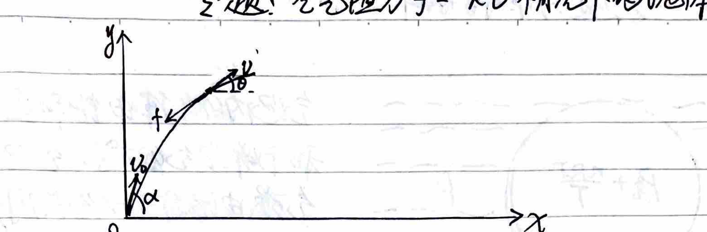
Taking any point during the motion for force analysis:
$$ \begin{cases} m \frac{dv_x}{dt} = -k v_x \\ m \frac{dv_y}{dt} = -(mg + k v_y) \end{cases} $$ $$ \therefore \begin{cases} \frac{dv_x}{v_x} = -\frac{k}{m} dt \\ \frac{d(k v_y)}{mg + k v_y} = -\frac{k}{m} dt \end{cases} \implies \begin{cases} \ln\frac{v_x}{v_0\cos\alpha} = -\frac{k}{m} t \\ \ln\left(\frac{mg + k v_y}{mg + k v_0\sin\alpha}\right) = -\frac{k}{m} t \end{cases} $$ $$ \therefore \begin{cases} v_x = (v_0\cos\alpha) e^{-\frac{k}{m}t} \\ v_y = \left(v_0\sin\alpha + \frac{mg}{k}\right) e^{-\frac{k}{m}t} - \frac{mg}{k} \end{cases} $$Integrating the two equations with respect to time, we get:
$$ \begin{cases} x = \frac{m}{k}(v_0\cos\alpha)(1 - e^{-\frac{k}{m}t}) \\ y = \frac{m}{k}\left(v_0\sin\alpha + \frac{mg}{k}\right)(1 - e^{-\frac{k}{m}t}) - \frac{mg}{k} t \end{cases} $$Eliminating $t$, we get the trajectory equation:
$$ y = \left(\tan\alpha + \frac{mg}{k v_0\cos\alpha}\right) x + \frac{m^2 g}{k^2} \ln\left(1 - \frac{kx}{m v_0\cos\alpha}\right) $$When $k \to 0$, $\frac{kx}{m v_0\cos\alpha} \ll 1$. Using Taylor expansion $\ln(1 - x) = -x - \frac{1}{2}x^2 - \dots$
Taking only the first two terms, we get:
$$ y \approx x\tan\alpha + \frac{mgx}{k v_0\cos\alpha} - \frac{m^2g}{k^2}\left(\frac{kx}{m v_0\cos\alpha} + \frac{1}{2}\left(\frac{kx}{m v_0\cos\alpha}\right)^2\right) $$ $$ = x\tan\alpha - \frac{g}{2 v_0^2\cos^2\alpha} x^2 $$This is the standard parabolic equation for projectile motion without air resistance.
1. Accelerating at constant power (Rated power $P_0$, constant resistance $f$, car mass $m$)
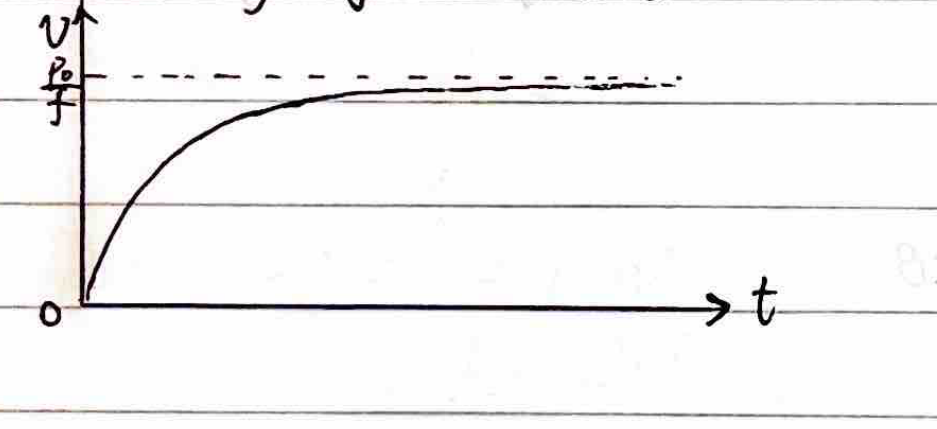
$$ \because P_0 = F_{\text{traction}} \cdot v $$ $$ \therefore a = \frac{F_{\text{traction}} - f}{m} = \frac{\frac{P_0}{v} - f}{m} = \frac{dv}{dt} $$Separating variables, we get:
$$ \frac{m \, dv}{\frac{P_0}{v} - f} = dt \implies \frac{mv \, dv}{P_0 - f v} = dt $$Rearranging yields:
$$ \frac{-\frac{m}{f}(P_0 - f v) + \frac{m P_0}{f}}{P_0 - f v} dv = \left(-\frac{m}{f} + \frac{m P_0/f}{P_0 - f v}\right) dv = dt $$Integrating gives:
$$ -\frac{m}{f} v - \frac{m P_0}{f^2} \ln\left(\frac{P_0 - fv}{P_0}\right) = t $$When $v = \frac{P_0}{f}$, $a = 0$ and $t \to \infty$.
2. Accelerating at constant acceleration (Constant acceleration $a_0$, rated power $P_0$, constant resistance $f$)
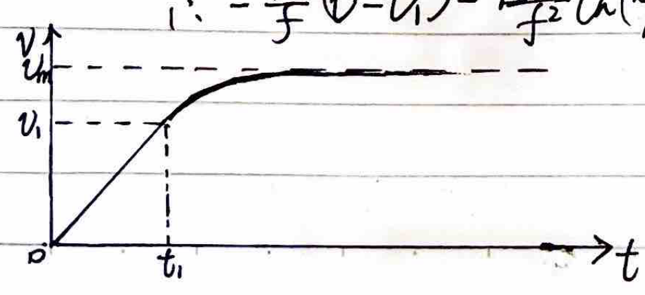
First stage: $v = a_0 t$.
$$ F_{\text{traction}} - f = m a_0 \implies F_{\text{traction}} = f + m a_0 $$Final state of the first stage:
$$ P_t = F_{\text{traction}} \cdot v_1 = (f + m a_0) v_1 = P_0 = f \cdot v_m $$ $$ \therefore v_1 = \frac{f}{f + m a_0} v_m $$At this time, $t_1 = \frac{v_1}{a_0} = \frac{f}{f + m a_0} \frac{v_m}{a_0}$.
Second stage: The uniformly accelerated rectilinear motion in the first stage has brought the car to its rated power, but not to its maximum speed. Therefore, in the second stage, the car must undergo variable acceleration rectilinear motion at the rated power $P_0$, gradually changing from $F_{\text{traction}} \cdot v_1$ to $f \cdot v_m$. This process is the same as the first mode.
$$ -\frac{m}{f}(v - v_1) - \frac{m P_0}{f^2} \ln\left(\frac{P_0 - f v}{P_0 - f v_1}\right) = t - t_1 $$1. With friction (Capstan equation)
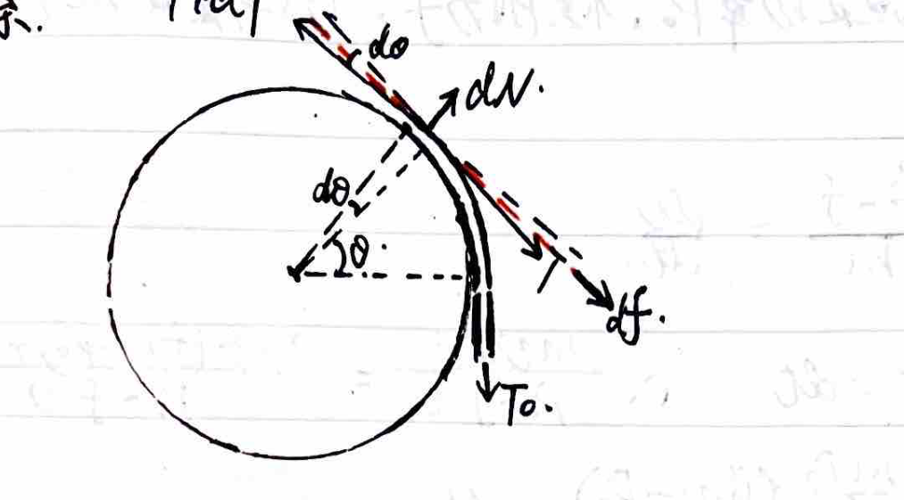
Taking a small segment of rope subtending angle $d\theta$, with tension $T+dT$ on one side and $T$ on the other, normal force $dN$, and friction $df = \mu dN$:
$$ \begin{cases} (T+dT)\sin\frac{d\theta}{2} + T\sin\frac{d\theta}{2} = dN \\ (T+dT)\cos\frac{d\theta}{2} - T\cos\frac{d\theta}{2} = \mu dN \end{cases} $$Omitting second-order infinitesimals and using $\sin\frac{d\theta}{2} \approx \frac{d\theta}{2}$, $\cos\frac{d\theta}{2} \approx 1$, we get:
$$ \begin{cases} T d\theta = dN \\ dT = \mu dN \end{cases} $$ $$ \therefore \frac{dT}{T} = \mu d\theta \implies \ln\frac{T}{T_0} = \mu\theta $$ $$ \therefore T = T_0 e^{\mu\theta} $$2. With gravity (Non-light rope over a cylinder)
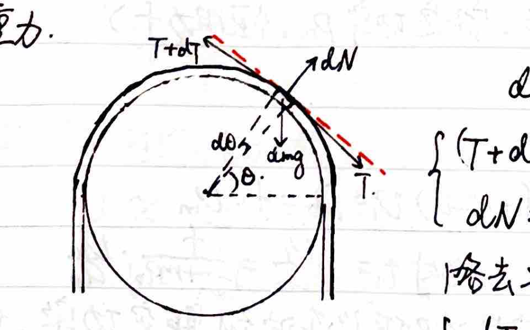
Taking a rope segment with mass $dm = \frac{M}{L} R d\theta$. Equilibrium in tangential and normal directions:
$$ dT = dm \, g \cos\theta = \frac{MgR}{L} \cos\theta \, d\theta $$ $$ dN = T d\theta + dm \, g \sin\theta = T d\theta + \frac{MgR}{L} \sin\theta \, d\theta $$From the first equation, integrating from $\theta=0$ (horizontal) gives:
$$ T - T_0 = \frac{MgR}{L} \sin\theta \implies T = T_0 + \frac{MgR}{L} \sin\theta $$Substituting into the normal force equation:
$$ dN = \left(T_0 + \frac{MgR}{L} \sin\theta\right) d\theta + \frac{MgR}{L} \sin\theta \, d\theta = T_0 d\theta + \frac{2MgR}{L} \sin\theta \, d\theta $$Integrating gives the total normal force from $0$ to $\theta$:
$$ N = T_0 \theta + \frac{2MgR}{L} (1 - \cos\theta) $$1. Expression of Measurement Results:
$$ Y = \bar{N} \pm \Delta N $$This includes: the numerical value, the unit, and the uncertainty $\Delta N$.
2. Meaning of Measurement Results:
The measurement result is a range $[N - \Delta N, N + \Delta N]$, and the true value falls in this range with a certain probability.
3. Calculation of Uncertainty:
Direct Measurement:
Indirect Measurement:
If the indirectly measured quantity $N$ is a function of mutually independent directly measured quantities $x_1, x_2, \dots$: $N = f(x_1, x_2, \dots)$; since $x_1, x_2, \dots$ have errors, $N$ must also have errors.
Combined Error:
| Function Expression | Standard Uncertainty ($\sigma$) | Limit Uncertainty ($e$) |
|---|---|---|
| $N = x \pm y$ | $\sigma_N = \sqrt{\sigma_x^2 + \sigma_y^2}$ | $e_N = e_x + e_y$ |
| $N = xy$ or $\frac{x}{y}$ | $\sigma_N = \sqrt{\left(\frac{\sigma_x}{x}\right)^2 + \left(\frac{\sigma_y}{y}\right)^2} |N|$ | $e_N = \left(\frac{e_x}{|x|} + \frac{e_y}{|y|}\right) |N|$ |
| $N = kx$ | $\sigma_N = |k|\sigma_x$ | $e_N = |k|e_x$ |
| $N = x^k$ | $\sigma_N = |k|\frac{\sigma_x}{|x|}|N|$ | $e_N = |k|\frac{e_x}{|x|}|N|$ |
(Where $x, y$ are directly measured quantities, corresponding to the measured values without uncertainties.)
Note: When expressing the result as $Y = \bar{N} \pm \sigma$, $\sigma$ is exact; when expressing it as $Y = N \pm e$, $e$ is an approximate uncertainty (combined limit uncertainty).
Experiment Objective: Measure the acceleration of uniformly accelerated rectilinear motion.
Equipment: Spark timer, paper tape, carbon paper, AC power supply, small cart, string, long wooden board with a pulley at one end, ruler, weights, two connecting wires.
Principle:
$$ S_1 = v_0 T + \frac{1}{2} a T^2 \quad \text{and} \quad S_2 = (v_0 + aT)T + \frac{1}{2} a T^2 $$ $$ \Delta S = S_2 - S_1 = a T^2 $$ $$ \therefore a_1 = \frac{S_4 - S_1}{3T^2}, \quad a_2 = \frac{S_5 - S_2}{3T^2}, \dots $$Then calculate the average value of $a_1, a_2 \dots$. Here, $T = 0.02n$ seconds ($n$ is the number of intervals between two counting points).
Procedure & Data Processing:
| Point | Segment $S/m$ | Difference $\Delta S/m$ | Segment Acceleration $a/(m\cdot s^{-2})$ | Cart Acceleration |
|---|---|---|---|---|
| 1 | $S_1$ | $a = \frac{a_1 + a_2 + a_3}{3}$ | ||
| 2 | $S_2$ | |||
| 3 | $S_3$ | |||
| 4 | $S_4$ | $S_4 - S_1$ | $\frac{S_4 - S_1}{3T^2} = a_1$ | |
| 5 | $S_5$ | $S_5 - S_2$ | $\frac{S_5 - S_2}{3T^2} = a_2$ | |
| 6 | $S_6$ | $S_6 - S_3$ | $\frac{S_6 - S_3}{3T^2} = a_3$ |
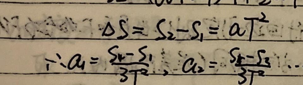
Experiment Objective: Verify the parallelogram rule of forces.
Equipment: Square wooden board, white paper, two spring scales, triangle ruler, ruler, several thumbtacks, pencil, rubber band, two thin string loops.
Principle: The effect of a single force $F'$ is the same as the combined effect of two concurrent forces $F_1$ and $F_2$ when they both stretch the rubber band to a certain point $O$; therefore $F'$ is the equivalent resultant force of $F_1$ and $F_2$. Draw the diagram of $F'$, then draw the diagram of the theoretical resultant force $F$ of $F_1$ and $F_2$ according to the parallelogram rule. Compare whether $F'$ and $F$ are equal in magnitude and same in direction (within the error range).
Procedure:
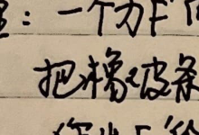
Precautions:
①
$$ \begin{cases} x = x' + vt' \\ y = y' \\ z = z' \\ t = t' \end{cases} $$②
$$ \vec{r} = \vec{r}' + \vec{r}_{origin} \quad \text{Absolute = Relative + Entrainment} $$ $$ \therefore \vec{v} = \vec{v}' + \vec{v}_{entrainment} $$ $$ \therefore \vec{a} = \vec{a}' + 0 \quad (\because m = m', \therefore \vec{F} = \vec{F}') $$Translational inertial force: $\vec{F}_{inertial} = -m\vec{a}$
Rotational inertial force (Centrifugal force): $\vec{F}_{centrifugal} = -m\vec{\omega} \times (\vec{\omega} \times \vec{r}')$
Coriolis force: $\vec{F}_{coriolis} = -2m\vec{\omega} \times \vec{v}'$
③ Doppler Effect:
1) Observer moving at speed $v_R$:
$$ \nu_R = \frac{v+v_R}{\lambda} = \frac{v+v_R}{v/\nu} = \frac{v+v_R}{v}\nu $$($v_R$ direction towards the source is positive, away is negative)
2) Source moving relative to the medium at speed $v_S$:
$$ \nu_S = \frac{v}{\lambda-\frac{v_S}{\nu}} = \frac{v}{\frac{v}{\nu}-\frac{v_S}{\nu}} = \frac{v}{v-v_S}\nu $$($v_S$ direction towards the observer is positive, away is negative)
3) General case:
 $$ \nu' = \frac{v+v_R\cos\theta}{v-v_S}\nu $$
$$ \nu' = \frac{v+v_R\cos\theta}{v-v_S}\nu $$
There is only a longitudinal Doppler effect.
There is no transverse Doppler effect.
① Basic Postulates:
1) All inertial frames are equivalent (reference frames where the law of inertia holds are inertial frames) — Principle of Relativity.
2) The speed of light in vacuum is constant in all inertial frames — Principle of the Constancy of the Speed of Light.
② Lorentz Transformation: ensures all physical laws have covariant coordinate transformation formulas.
1) Suppose inertial frame K' moves relative to inertial frame K along the $x$ direction with speed $v$.
When $x=x'=0$, $y=y'=0, z=z'=0, t=t'=0$.
2) The principle of relativity requires that the coordinate transformation from $K(x,y,z,t)$ to $K'(x',y',z',t')$ should be symmetric, i.e., both the forward and inverse transformations are the same kind of function. This requirement stems from the homogeneity of space. The transformation satisfying this requirement must be a linear function.
$$ \begin{cases} x' = ax + bt \\ t' = px + qt \end{cases} \Rightarrow \begin{cases} x = \frac{q}{aq-bp}x' - \frac{b}{aq-bp}t' \\ t = \frac{a}{aq-bp}x' - \frac{p}{aq-bp}t' \end{cases} $$Since the relative motion only occurs in the $x$ direction, thus:
$$ \begin{cases} y' = y \\ z' = z \end{cases} $$3) The principle of the constancy of the speed of light requires: if a flash of light is emitted from the origin at time $t=t'=0$, then in both inertial frames:
$$ \begin{cases} x^2+y^2+z^2-c^2t^2=0 \\ x'^2+y'^2+z'^2-c^2t'^2=0 \end{cases} $$For any arbitrary event, let $x+y^2+z^2-c^2t^2 = \lambda(x'^2+y'^2+z'^2-c^2t'^2+A)$.
Due to symmetry and continuity, we have $x'^2+y'^2+z'^2-c^2t'^2 = x^2+y^2+z^2-c^2t^2$.
4) In the K frame, the origin $O'$ of the K' frame satisfies:
 $$ \begin{cases} \frac{dx'}{dt} = a\frac{dx}{dt} + b \\ \frac{dt'}{dt} = p\frac{dx}{dt} + q \end{cases} $$
$$ \because \frac{dx'}{dt} = 0 $$
$$ \therefore dx = b \, dt, \quad dt' = q \, dt $$
$$ \therefore \frac{dx}{dt} = -\frac{b}{a} = v $$
$$ \begin{cases} \frac{dx'}{dt} = a\frac{dx}{dt} + b \\ \frac{dt'}{dt} = p\frac{dx}{dt} + q \end{cases} $$
$$ \because \frac{dx'}{dt} = 0 $$
$$ \therefore dx = b \, dt, \quad dt' = q \, dt $$
$$ \therefore \frac{dx}{dt} = -\frac{b}{a} = v $$
(The origin of K' moves towards the $+x$ direction in K, so $v$ is positive).
In the K' frame, the origin $O$ of the K frame satisfies:
$$ \begin{cases} \frac{dx}{dt'} = \frac{q}{aq-bp}\frac{dx'}{dt'} - \frac{b}{aq-bp} \\ \frac{dt}{dt'} = \frac{a}{aq-bp}\frac{dx'}{dt'} - \frac{p}{aq-bp} \end{cases} $$ $$ \because \frac{dx}{dt'} = 0 $$ $$ \therefore dx' = -\frac{b}{aq-bp} dt', \quad dt = \frac{a}{aq-bp} dt' $$ $$ \therefore \frac{dx'}{dt'} = -\frac{b}{a} = -v \quad \text{(The origin of K moves towards the $-x$ direction in K', so $-v$ is negative).} $$Therefore $b = -av, a = q$. Substituting into the transformation equations gives:
$$ \begin{cases} x' = ax - avt \\ t' = px + at \end{cases} $$Substitute into the spacetime interval invariance equation:
$$ x^2+y^2+z^2-c^2t^2 = (ax-avt)^2 + y^2 + z^2 - c^2(px+at)^2 $$Simplifying yields:
$$ x^2 - c^2t^2 = (a^2-c^2p^2)x^2 + (a^2v^2-a^2c^2)t^2 - (2a^2v+2apc^2)xt $$Because the coefficients of identical terms must be equal:
$$ \begin{cases} 1 = a^2 - c^2p^2 \\ -c^2 = a^2v^2 - a^2c^2 \\ 0 = 2a^2v + 2apc^2 \end{cases} \Rightarrow \begin{cases} a = \frac{1}{\sqrt{1-v^2/c^2}} \\ p = -\frac{v}{c^2}\frac{1}{\sqrt{1-v^2/c^2}} \end{cases} $$Substituting into the transformation equations, we get:
$$ \begin{cases} x' = \frac{1}{\sqrt{1-v^2/c^2}}(x-vt) \\ y' = y \\ z' = z \\ t' = \frac{1}{\sqrt{1-v^2/c^2}}\left(t-\frac{v}{c^2}x\right) \end{cases} \quad \begin{cases} x = \frac{1}{\sqrt{1-v^2/c^2}}(x'+vt') \\ y = y' \\ z = z' \\ t = \frac{1}{\sqrt{1-v^2/c^2}}\left(t'+\frac{v}{c^2}x'\right) \end{cases} $$Note: <1> Pay attention to the prerequisite of the derivation: $x=x'=0, y=y'=0, z=z'=0, t=t'=0$.
This prerequisite does not lose generality, but the equations derived from the two postulates only apply to this prerequisite.
For situations where the origins do not coincide at $t=t'=0$, they will not conform to this.
<2> Due to the homogeneity of space, all inertial frames are equivalent, only linear transformation equations can reflect this principle.
<3> The essence of the principle of the constancy of the speed of light is $(dx)^2+(dy)^2+(dz)^2-(c\,dt)^2 = (dx')^2+(dy')^2+(dz')^2-(c\,dt')^2 = ds^2 = \sqrt{(c\,d\tau)^2-(dl_0)^2}$. Because the intrinsic length $l_0$ has length, $\therefore dl_0 = 0$, $\therefore d\tau = \frac{ds}{c}$.
1) Relativity of Time Order and Causality.
Let events A and B occur in frame K' at locations and times $(x_1', t_1')$ and $(x_2', t_2')$.
Then in frame K, the times events A and B occur are:
$$ t_1 = \frac{t_1' + \frac{v}{c^2}x_1'}{\sqrt{1-v^2/c^2}}, \quad t_2 = \frac{t_2' + \frac{v}{c^2}x_2'}{\sqrt{1-v^2/c^2}} $$ $$ \therefore t_2 - t_1 = \frac{(t_2'-t_1') + \frac{v}{c^2}(x_2'-x_1')}{\sqrt{1-v^2/c^2}} = \frac{(t_2'-t_1')\left(1 + \frac{v}{c^2}\frac{x_2'-x_1'}{t_2'-t_1'}\right)}{\sqrt{1-v^2/c^2}} $$Timelike interval events: $\frac{x_2'-x_1'}{t_2'-t_1'} > -c$, there may be a causal relationship, and with causality the time order cannot reverse.
Spacelike interval events: $\frac{x_2'-x_1'}{t_2'-t_1'} < -c$, no causal relationship, the time order may reverse.
(If there were, it would mean superluminal causation is needed to overtake).
2) Relativity of Simultaneity:
If in frame K', two events A and B occur simultaneously at time $t'$ at locations $x_1'$ and $x_2'$. In frame K, we have:
$$ t_1 = \frac{t' + \frac{v}{c^2}x_1'}{\sqrt{1-v^2/c^2}}, \quad t_2 = \frac{t' + \frac{v}{c^2}x_2'}{\sqrt{1-v^2/c^2}} $$For frame K, these two events do not necessarily occur simultaneously. The time interval between A and B in frame K is:
$$ \Delta t = t_2 - t_1 = \frac{v}{c^2}\frac{x_2'-x_1'}{\sqrt{1-v^2/c^2}} $$Therefore, one can only synchronize clocks in one coordinate system, or synchronize clocks at two touching points in two coordinate systems.
③ Relativity of Time Intervals (Time Dilation):
If in frame K', two events A and B occur at location $x'$ at times $t_1'$ and $t_2'$. In frame K, we have:
$$ t_1 = \frac{t_1' + \frac{v}{c^2}x'}{\sqrt{1-v^2/c^2}}, \quad t_2 = \frac{t_2' + \frac{v}{c^2}x'}{\sqrt{1-v^2/c^2}} $$ $$ \therefore \Delta t = t_2 - t_1 = \frac{t_2'-t_1'}{\sqrt{1-v^2/c^2}} = \frac{\Delta t'}{\sqrt{1-v^2/c^2}} > \Delta t' $$For the same two events A and B measured in different reference frames, the time interval is shortest for the proper time (intrinsic time interval).
③ Relativity of Spatial Position (Length Contraction):
In frame K', there is a rigid ruler at rest along the $x'$ direction, with endpoints at coordinates $x_1', x_2'$. Its proper length is $L' = |x_2'-x_1'|$. In frame K, when measuring at time $t$ (clocks are synchronized differently in the moving reference frame), we have:
$$ x_1' = \frac{x_1-vt}{\sqrt{1-v^2/c^2}}, \quad x_2' = \frac{x_2-vt}{\sqrt{1-v^2/c^2}} $$ $$ \text{Thus in frame K, } L = |x_2-x_1| = |x_2'-x_1'|\sqrt{1-v^2/c^2} = L'\sqrt{1-v^2/c^2} < L' $$But in the rest frame K', $x_1'$ and $x_2'$ are measured simultaneously at time $t'$, with time difference $\Delta t' = \frac{1}{\sqrt{1-v^2/c^2}}(\Delta t - \frac{v}{c^2}\Delta x)$.
Because they are measured simultaneously at time $t$ in the moving frame K, so $\Delta t = 0$, $\therefore \Delta t' = -\frac{v/c^2}{\sqrt{1-v^2/c^2}}\Delta x = -\frac{v}{c^2}L'$.
[$U = (U_x, U_y, U_z, U_t)$: four-velocity; $\vec{v} = (v_x, v_y, v_z)$ three-velocity; $\vec{V}$: reference frame velocity]
1) Minkowski Space
$$ \begin{cases} x' = \gamma[x+i\beta(ict)] \\ y' = y \\ z' = z \\ ict' = \gamma[ict - i\beta x] \end{cases} $$Lorentz Invariant:
$$ x'^2 + y'^2 + z'^2 + (ict')^2 $$ $$ = \gamma^2(x-\beta ct)^2 + y^2 + z^2 + \gamma^2(-1)(ct-\beta x)^2 $$ $$ = x^2 + y^2 + z^2 + (ict)^2 = -S^2 $$2) Four-Velocity
Proper time $d\tau = \frac{ds}{c}$
Define four-velocity $U_x = \frac{dx}{d\tau}, U_y = \frac{dy}{d\tau}, U_z = \frac{dz}{d\tau}, U_t = \frac{d(ict)}{d\tau}$
$$ \therefore U_x = \frac{dx}{dt}\frac{dt}{d\tau} = \gamma \frac{dx}{dt} = \frac{v_x}{\sqrt{1-v^2/c^2}}, \quad \text{Similarly, } U_y = \frac{v_y}{\sqrt{1-v^2/c^2}}, \quad U_z = \frac{v_z}{\sqrt{1-v^2/c^2}} $$The above $v_x, v_y, v_z$ are the three-velocities of an object in frame K.
For the last component of the four-velocity, $U_t = \frac{d(ict)}{d\tau} = ic\gamma = \frac{ic}{\sqrt{1-v^2/c^2}}$.
$$ \therefore U = (U_x, U_y, U_z, U_t) = (\gamma v_x, \gamma v_y, \gamma v_z, ic\gamma) $$Since $dx, dy, dz, d(ict)$ obey the Lorentz transformation, and $d\tau$ is an invariant, therefore:
$$ \begin{cases} U_x' = \gamma (U_x + i\beta U_t) \\ U_y' = U_y \\ U_z' = U_z \\ U_t' = \gamma (U_t - i\beta U_x) \end{cases} $$Lorentz Invariant:
$$ U_x^2 + U_y^2 + U_z^2 + U_t^2 = \frac{v_x^2+v_y^2+v_z^2-c^2}{1-v^2/c^2} = \frac{v^2-c^2}{1-v^2/c^2} = -c^2 $$ $$ \therefore \gamma'v_x' = \gamma\gamma(v_x-c\beta) $$ $$ \gamma'v_y' = \gamma v_y $$ $$ \gamma'v_z' = \gamma v_z $$ $$ c\gamma' = \gamma\gamma(c-\beta v_x) $$where $\gamma_v = \frac{1}{\sqrt{1-\beta^2}}$, $\gamma = \frac{1}{\sqrt{1-(v/c)^2}}$ ($v$ is the speed in frame K), $\gamma' = \frac{1}{\sqrt{1-(v'/c)^2}}$ ($v'$ is the speed in frame K').
$$ \therefore \frac{\gamma}{\gamma'} = \frac{1}{1-\frac{\beta v_x}{c}} = \frac{1}{1-\frac{V v_x}{c^2}} \quad \text{($\beta = \frac{V}{c}$, $V$ is the relative speed of K and K')} $$Substituting this into the first three equations gives:
$$ \begin{cases} v_x' = \frac{v_x-V}{1-\frac{v_x V}{c^2}} \\ v_y' = \frac{v_y\sqrt{1-V^2/c^2}}{1-\frac{v_x V}{c^2}} \\ v_z' = \frac{v_z\sqrt{1-V^2/c^2}}{1-\frac{v_x V}{c^2}} \end{cases} $$(The velocity transformation can be directly derived by differentiating the Lorentz transformation, i.e., $dx = \frac{dx'+Vdt'}{\sqrt{1-V^2/c^2}}$, $dy=dy'$, $dz=dz'$, $dt = \frac{dt'+\frac{V}{c^2}dx'}{\sqrt{1-V^2/c^2}}$. Dividing these three equations gives the result. Just using the four-velocity to derive it is simpler and more representative.)
3) Four-Momentum
Define four-momentum $P_x = m_0 U_x, P_y = m_0 U_y, P_z = m_0 U_z, P_t = m_0 U_t$
$$ \therefore P = (P_x, P_y, P_z, P_t) = (\gamma m_0 v_x, \gamma m_0 v_y, \gamma m_0 v_z, im_0 c\gamma) $$Obviously, the four-momentum obeys the Lorentz transformation:
$$ \begin{cases} P_x' = \frac{P_x + i\beta P_t}{\sqrt{1-V^2/c^2}} = \frac{P_x - \frac{V}{c} \frac{E}{c}}{\sqrt{1-V^2/c^2}} \\ P_y' = P_y \\ P_z' = P_z \\ P_t' = \frac{P_t - i\beta P_x}{\sqrt{1-V^2/c^2}} = \frac{P_t - i\frac{V}{c} P_x}{\sqrt{1-V^2/c^2}} \end{cases} $$Lorentz Invariant:
$$ P_x^2 + P_y^2 + P_z^2 + P_t^2 = \frac{m_0^2(v_x^2+v_y^2+v_z^2-c^2)}{1-v^2/c^2} = -m_0^2 c^2 $$$U = (U_x, U_y, U_z, U_t)$: four-velocity, $v = (v_x, v_y, v_z)$: three-velocity; $V$: relative velocity of reference frames.
1) Mass: $m = \frac{m_0}{\sqrt{1-v^2/c^2}}$
2) Momentum: $\vec{P} = m\vec{v} = \frac{m_0\vec{v}}{\sqrt{1-v^2/c^2}}$, Force: $\vec{F} = \frac{d\vec{P}}{dt} = \frac{d}{dt}\left(\frac{m_0\vec{v}}{\sqrt{1-v^2/c^2}}\right)$
3) Energy: $dE_k = \vec{F}\cdot d\vec{s} = \frac{d(m\vec{v})}{dt}\cdot d\vec{s} = v^2dm + mvdv$
$$ \because m^2c^2 - m_0^2c^2 = m^2v^2, \therefore 2mc^2dm = 2mv^2dm + 2v m^2 dv $$ $$ \therefore c^2dm = v^2dm + mvdv \quad \text{Substituting into the previous equation gives:} $$ $$ dE_k = c^2dm $$ $$ \therefore E_k = mc^2 - m_0c^2 $$Total energy $E = mc^2$; Power $p = \frac{dE_k}{dt} = \vec{F}\cdot\vec{v}$
And $E^2 = m_0^2c^4 + p^2c^2$.
4) Force Transformation Equations:
Define four-force: $f_x = \frac{dP_x}{d\tau}, f_y = \frac{dP_y}{d\tau}, f_z = \frac{dP_z}{d\tau}, f_t = \frac{dP_t}{d\tau}$.
$$ \begin{cases} f_x = \frac{dP_x}{dt}\frac{dt}{d\tau} = \frac{dP_x}{dt}\frac{1}{\sqrt{1-v^2/c^2}} = F_x / \sqrt{1-v^2/c^2} \\ f_y = F_y / \sqrt{1-v^2/c^2}, \quad f_z = F_z / \sqrt{1-v^2/c^2} \\ f_t = \frac{dP_t}{dt}\frac{dt}{d\tau} = \frac{d(im_0c/\sqrt{1-v^2/c^2})}{dt}\frac{1}{\sqrt{1-v^2/c^2}} = \frac{imc}{\sqrt{1-v^2/c^2}} \frac{d(mc^2)}{dt} = \frac{i\vec{F}\cdot\vec{v}}{c\sqrt{1-v^2/c^2}} \end{cases} $$ $$ \because f_x' = \frac{f_x + i\beta f_t}{\sqrt{1-V^2/c^2}} = \frac{f_x - \frac{V}{c^2} \vec{F}\cdot\vec{v}}{\sqrt{1-V^2/c^2}} $$ $$ \therefore \frac{F_x'}{\sqrt{1-v'^2/c^2}} = \frac{\frac{F_x}{\sqrt{1-v^2/c^2}} - \frac{V}{c^2}\frac{\vec{F}\cdot\vec{v}}{\sqrt{1-v^2/c^2}}}{\sqrt{1-V^2/c^2}} $$According to $\frac{\gamma}{\gamma'} = \frac{1}{1-\frac{V v_x}{c^2}}$
$$ \therefore F_x' = \frac{F_x - \frac{V}{c^2}\vec{F}\cdot\vec{v}}{1-\frac{V v_x}{c^2}} $$ $$ \because f_y' = f_y $$ $$ \therefore \frac{F_y'}{\sqrt{1-v'^2/c^2}} = \frac{F_y}{\sqrt{1-v^2/c^2}} $$ $$ \therefore F_y' = \frac{F_y\sqrt{1-V^2/c^2}}{1-\frac{V v_x}{c^2}} $$Similarly $F_z' = \frac{F_z\sqrt{1-V^2/c^2}}{1-\frac{V v_x}{c^2}}$
$$ f_t' = \frac{f_t - i\beta f_x}{\sqrt{1-V^2/c^2}} \dots $$Combining the above equations, we have ($F_x, F_y, F_z$ are the three-force components):
$$ \begin{cases} F_x' = \frac{F_x - \frac{V}{c^2}\vec{F}\cdot\vec{v}}{1-\frac{V v_x}{c^2}} \\ F_y' = \frac{F_y\sqrt{1-V^2/c^2}}{1-\frac{V v_x}{c^2}} \\ F_z' = \frac{F_z\sqrt{1-V^2/c^2}}{1-\frac{V v_x}{c^2}} \end{cases} $$Application Example: Origin of the Magnetic Field:
A charged parallel plate capacitor moves with velocity $\vec{v}_0 = v_0\vec{i}$ in frame S. There is a charge $q$ between the plates moving with velocity $\vec{v} = v_x\vec{i} + v_y\vec{j} + v_z\vec{k}$. The plates are at rest in frame S'. In frame S', $q$ moves with velocity $\vec{v}' = v_x'\vec{i} + v_y'\vec{j} + v_z'\vec{k}$.

In frame S': $F_x' = qE_x' = q(\frac{\sigma}{\epsilon_0})_x = qE_x$
$$ F_y' = qE_y' = q(\frac{\sigma}{\epsilon_0})_y = q(\frac{\sigma_0}{\epsilon_0\sqrt{1-v_0^2/c^2}})_y = \frac{qE_y}{\sqrt{1-v_0^2/c^2}} $$ $$ F_z' = qE_z' = q(\frac{\sigma}{\epsilon_0})_z = q(\frac{\sigma_0}{\epsilon_0\sqrt{1-v_0^2/c^2}})_z = \frac{qE_z}{\sqrt{1-v_0^2/c^2}} $$ $$ v_x' = \frac{v_x - v_0}{1 - \frac{v_0 v_x}{c^2}} $$ $$ v_y' = \frac{v_y\sqrt{1-v_0^2/c^2}}{1 - \frac{v_0 v_x}{c^2}} $$ $$ v_z' = \frac{v_z\sqrt{1-v_0^2/c^2}}{1 - \frac{v_0 v_x}{c^2}} $$According to the force transformation equations, in frame S:
$$ F_x = \frac{F_x' + \frac{v_0}{c^2}(F_x'v_x' + F_y'v_y' + F_z'v_z')}{1 + \frac{v_0 v_x'}{c^2}} = \frac{qE_x + \frac{v_0}{c^2}\left[qE_x\frac{v_x-v_0}{1-\frac{v_0 v_x}{c^2}} + \left(\frac{qE_y v_y}{1-\frac{v_0 v_x}{c^2}} + \frac{qE_z v_z}{1-\frac{v_0 v_x}{c^2}}\right)(1-\frac{v_0^2}{c^2})\right]}{1 + \frac{v_0(v_x-v_0)}{c^2-v_0 v_x}} $$ $$ = qE_x + q(E_y v_y + E_z v_z)\frac{v_0}{c^2} $$ $$ F_y = \frac{qE_y \sqrt{1-v_0^2/c^2}\sqrt{1-v_0^2/c^2}}{1 + \frac{v_0(v_x-v_0)}{c^2-v_0 v_x}} = qE_y - \frac{qv_0 v_x E_y}{c^2} $$ $$ F_z = qE_z - \frac{qv_0 v_x E_z}{c^2} $$Define $\vec{B} = \frac{1}{c^2}\vec{v}_0 \times \vec{E}$.
$$ \therefore \vec{F} = F_x\vec{i} + F_y\vec{j} + F_z\vec{k} = q(E_x\vec{i} + E_y\vec{j} + E_z\vec{k}) + q\vec{v} \times \vec{B} = q\vec{E} + q\vec{v} \times \vec{B} $$1) Atomic Nucleus: $M = N + Z$ ($M$: mass number, $N$: number of neutrons, $Z$: number of protons)
$$ \begin{cases} \alpha \text{ decay: } {}^M_Z X \to {}^{M-4}_{Z-2} Y + {}^4_2 He \text{ (emits } \alpha \text{ particle)} \\ \beta \text{ decay: } {}^M_Z X \to {}^M_{Z+1} Y + {}^{0}_{-1} e \text{ (emits } \beta \text{ particle)} \end{cases} \text{ (emit particles)} $$$N = N_0 e^{-\lambda t}$, half-life $T$: $N = \frac{N_0}{2}$, $\therefore e^{-\lambda T} = \frac{1}{2}$, $T = \frac{\ln 2}{\lambda}$
$$ \therefore N = N_0 e^{t(-\frac{\ln 2}{T})} = N_0 (e^{\ln\frac{1}{2}})^{\frac{t}{T}} = N_0 \left(\frac{1}{2}\right)^{\frac{t}{T}} $$ $$ \begin{cases} \text{Discovery of proton: } {}^{14}_7 N + {}^4_2 He \to {}^{17}_8 O + {}^1_1 H \\ \text{Discovery of neutron: } {}^9_4 Be + {}^4_2 He \to {}^{12}_6 C + {}^1_0 n \\ \text{Discovery of positron: } {}^{30}_{15} P \to {}^{30}_{14} Si + {}^{0}_{1} e \\ \text{Nuclear fission: } {}^{235}_{92} U + {}^1_0 n \to {}^{144}_{56} Ba + {}^{89}_{36} Kr + 3 {}^1_0 n \\ \text{Nuclear fusion: } {}^2_1 H + {}^3_1 H \to {}^4_2 He + {}^1_0 n \end{cases} $$2) Two-body decay: $A \to A_1 + A_2$
$$ \begin{cases} P_1 = P_2 \\ m_0 c^2 = \sqrt{P_1^2 c^2 + m_{10}^2 c^4} + \sqrt{P_2^2 c^2 + m_{20}^2 c^4} \end{cases} $$Solving yields $P_1 = P_2 = \frac{c}{2m_0}\sqrt{[m_0^2-(m_{10}+m_{20})^2][m_0^2-(m_{10}-m_{20})^2]}$
$$ \begin{cases} E_1 = \sqrt{P_1^2 c^2 + m_{10}^2 c^4} = \frac{m_0^2+m_{10}^2-m_{20}^2}{2m_0} c^2 \\ E_2 = \sqrt{P_2^2 c^2 + m_{20}^2 c^4} = \frac{m_0^2+m_{20}^2-m_{10}^2}{2m_0} c^2 \end{cases} $$3) Two-body reaction threshold energy.
$$ A_1 + A_2 \to A_3 + A_4 + A_5 \dots $$In the center-of-momentum frame (CM frame: relatively centered, the CM frame generally does not coincide with the center-of-mass frame):
<1> $P_1' = P_2'$
<2> $P_1' = \gamma (P_1 - \beta \frac{E_1}{c})$ (high-energy particle 1)
<3> $E_1' = \gamma (E_1 - \beta P_1 c)$
<4> $P_2' = \gamma \beta m_{20} c$ (target particle 2, at rest in the laboratory frame)
<5> $E_2' = \gamma m_{20} c^2$
(From the last equation of the four-momentum transformation, we have $E' = (E-VP_x)/\sqrt{1-V^2/c^2}$.)
From <1>, <2>, <4> solving gives $\beta = \frac{P_1 c}{E_1 + m_{20} c^2}$.
$$ \therefore E_1' + E_2' = \gamma (E_1 - \beta P_1 c + m_{20} c^2) = \frac{1}{\sqrt{1-\beta^2}} \left(E_1 - \frac{P_1 c^2}{E_1 + m_{20} c^2} + m_{20} c^2\right) $$ $$ = \frac{1}{\sqrt{1 - \frac{E_1^2 - m_{10}^2 c^4}{(E_1 + m_{20} c^2)^2}}} \left(E_1 - \frac{E_1^2 - m_{10}^2 c^4}{E_1 + m_{20} c^2} + m_{20} c^2\right) $$ $$ = \sqrt{m_{10}^2 c^4 + m_{20}^2 c^4 + 2E_1 m_{20} c^2} $$This is the expression for the total energy $E'$ in the CM frame. In the CM frame, this part of the energy can be completely converted into the rest mass energy of the products, i.e., after the reaction, all products are at rest in the CM frame, with no kinetic energy. Therefore, this energy $E'$ is also called the available reaction energy.
When this threshold reaction occurs, the energy threshold of the incident particle $m_{10}$ is $E_{th}$, and its kinetic energy is $E_{k_{th}}$.
$$ \therefore \sqrt{m_{10}^2 c^4 + m_{20}^2 c^4 + 2E_{th} m_{20} c^2} = \sum_{i=3}^n m_i c^2 \text{ (Rest mass energy of all products after reaction)} $$Solving yields $E_{th} = \frac{(\sum m_i c^2)^2 - (m_{10}^2 c^4 + m_{20}^2 c^4)}{2m_{20} c^2}$
$$ \therefore E_{k_{th}} = E_{th} - m_{10} c^2 = \frac{(\sum m_i c^2)^2 - (m_{10} c^2 + m_{20} c^2)^2}{2m_{20} c^2} = \frac{(\sum m_i + m_{10} + m_{20})(\sum m_i - m_{10} - m_{20})c^2}{2m_{20}} $$ $$ = \left[-(m_{10}+m_{20}-\sum m_i)c^2\right] \frac{\sum m_i}{2m_{20}} \quad [Q = (m_{10}+m_{20}-\sum m_i)c^2 \text{ Reaction Energy}] $$Assume the light source is at rest in frame K, and the observer is at rest in frame K'. Frame K' moves with velocity $V$ along the positive x-axis of frame K. Let the angle between the light ray from the source to the observer and the x'-axis in frame K' be $\theta'$.

In frame K, the component of the photon along the x'-axis is $P_x' = P'\cos\theta' = \frac{E'}{c}\cos\theta' = \frac{h\nu'}{c}\cos\theta'$
From the Lorentz transformation $E = \frac{1}{\sqrt{1-\beta^2}}(E' - \beta c P_x')$
$$ \therefore h\nu = \frac{1}{\sqrt{1-\beta^2}}(h\nu' - h\nu'\beta\cos\theta') $$ $$ \therefore \nu' = \nu \frac{\sqrt{1-\beta^2}}{1 - \beta\cos\theta'} $$ $$ \begin{cases} \text{When } \theta' = 0 \text{ (approaching), } \nu' = \nu \sqrt{\frac{1+\beta}{1-\beta}} \approx \nu(1+\beta) \\ \text{When } \theta' = \frac{\pi}{2} \text{ (transverse), } \nu' = \nu \sqrt{1-\beta^2} \approx \nu(1-\frac{1}{2}\beta^2) \end{cases} $$Problem: A thought experiment inside a box undergoing uniform accelerated linear motion with acceleration $a$. A laser emitter and a laser receiver are installed at the bottom and top of the box, respectively. The distance between them in the box frame is $L$, and the period of laser emission from the emitter to the receiver is $T_0$. Prove that in the ground reference frame, the period $T$ of the laser received by the receiver at the top of the box is $T = T_0 \left(1 + \frac{aL}{c^2}\right)$.

Proof:
Let at $t=0$, the box starts accelerating from rest, and simultaneously the laser light wave is emitted from the emitter.
At any time $t$:
$$ \begin{cases} \text{Emitter position: } x = \frac{1}{2} a t^2 \\ \text{Receiver position: } x = L + \frac{1}{2} a t^2 \end{cases} $$ $$ \begin{cases} \text{Vibration state position of the examined wave: } x = ct \\ \text{Vibration state position one period } T_0 \text{ later: } x = \frac{1}{2} a T_0^2 + c(t - T_0) \end{cases} $$Let the examined vibration state reach the receiver at time $t_1$.
$$ ct_1 = L + \frac{1}{2} a t_1^2 \implies t_1 = \frac{c}{a}\left(1 - \sqrt{1 - \frac{2aL}{c^2}}\right) $$Let the vibration state exactly one period $T_0$ later reach the receiver at time $t_2$.
$$ \frac{1}{2} a T_0^2 + c(t_2 - T_0) = L + \frac{1}{2} a t_2^2 \implies t_2 = \frac{c}{a}\left(1 - \sqrt{1 - \frac{2aL}{c^2} - \frac{2aT_0}{c} + \frac{a^2 T_0^2}{c^2}}\right) $$Therefore, the received laser period in the ground frame is:
$$ T = t_2 - t_1 $$ $$ = \frac{c}{a} \sqrt{1 - \frac{2aL}{c^2}} - \frac{c}{a} \sqrt{1 - \frac{2aL}{c^2} - \frac{2aT_0}{c} + \frac{a^2 T_0^2}{c^2}} $$ $$ = \frac{c}{a} \sqrt{1 - \frac{2aL}{c^2}} \left[ 1 - \sqrt{1 - \frac{\frac{2aT_0}{c} - \frac{a^2 T_0^2}{c^2}}{1 - \frac{2aL}{c^2}}} \right] $$Using the Taylor expansion approximation $\sqrt{1-x} \approx 1 - \frac{1}{2}x$:
$$ T \approx \frac{c}{a}\left(1 - \frac{aL}{c^2}\right) \left[ 1 - \left(1 - \frac{\frac{aT_0}{c} - \frac{a^2 T_0^2}{2c^2}}{1 - \frac{2aL}{c^2}}\right) \right] $$ $$ \approx \frac{c}{a}\left(1 - \frac{aL}{c^2}\right) \left( \frac{aT_0}{c} - \frac{a^2 T_0^2}{2c^2} \right) \left(1 + \frac{2aL}{c^2}\right) $$ $$ = \left(1 - \frac{aL}{c^2}\right)\left(1 + \frac{2aL}{c^2}\right)\left(T_0 - \frac{aT_0^2}{2c}\right) $$ $$ \approx \left(1 + \frac{2aL}{c^2} - \frac{aL}{c^2}\right) T_0 \left(1 - \frac{aT_0}{2c}\right) \quad \text{The } \frac{aT_0}{c} \text{ term is relatively negligible.} $$ $$ \approx T_0 \left(1 + \frac{aL}{c^2}\right) $$Since $a$ can be equivalent to gravitational field strength $g$, we get $T = T_0 \left(1 + \frac{gL}{c^2}\right)$.
1. Spring oscillator with massive spring
The central point mass of the spring oscillator is $M$, the spring mass is $m$, the stiffness coefficient is $k$, the oscillation period of the system is:
$$ T = 2\pi \sqrt{\frac{M + m/3}{k}} $$Proof: When the spring is at its original length $l_0$, take a line element $ds$ at coordinate $s$. Its mass is $dm = \frac{m}{l_0} ds$.
When $M$ undergoes displacement $x$, let the displacement of $dm$ be $p$. Due to the uniform distribution of the spring's mass, $\frac{p}{x} = \frac{s}{l_0}$.
Taking the derivative of the above with respect to time:
$$ \frac{dp}{dt} = \frac{s}{l_0} \frac{dx}{dt} = \frac{s}{l_0} v $$$\therefore$ The kinetic energy of $dm$ is $dE_k = \frac{1}{2} dm \left(\frac{dp}{dt}\right)^2 = \frac{1}{2} \frac{m}{l_0} ds \frac{s^2}{l_0^2} v^2 = \frac{mv^2}{2l_0^3} s^2 ds$
$\therefore$ The kinetic energy of the entire spring is $E_{k1} = \frac{mv^2}{2l_0^3} \int_0^{l_0} s^2 ds = \frac{1}{6} m v^2$
And the kinetic energy of the small ball is $E_{k2} = \frac{1}{2} M v^2$.
$\therefore$ The mechanical energy of the system is $E = \frac{1}{2}\left(M + \frac{m}{3}\right)\left(\frac{dx}{dt}\right)^2 + \frac{1}{2} k x^2$.
Taking the derivative with respect to time $t$:
$$ \frac{dE}{dt} = \frac{1}{2}\left(M + \frac{m}{3}\right) \cdot 2 \left(\frac{dx}{dt}\right) \frac{d}{dt}\left(\frac{dx}{dt}\right) + \frac{1}{2} k \cdot 2x \frac{dx}{dt} = 0 $$ $$ \therefore \frac{d^2 x}{dt^2} + \frac{k}{M + m/3} x = 0 $$ $$ \therefore T = 2\pi \sqrt{\frac{M + m/3}{k}} $$2. Simple pendulum with massive string

1. Model: $A_1 + A_2 \to A_3 + A_4 + A_5 \dots$
In the laboratory frame (L-frame): $A_1$ is the high-energy particle, with momentum $P_1$, and energy $E_1 = m_1 c^2$. $A_2$ is the target particle, with momentum 0, and energy $E_2 = m_{20} c^2$.
In the center-of-momentum frame (C-frame): Let the relative velocity of the C-frame to the L-frame be $V$, $\beta = \frac{V}{c}$, $\gamma = \frac{1}{\sqrt{1-\beta^2}}$.
Define the four-momentum $P = m_0 U$, where $U$ is the four-velocity, and its magnitude squared is $-c^2$.
Define the three-momentum $p = m v$, since $m = \gamma m_0, v = \frac{dx}{dt}$, the spatial components of the four-momentum correspond to the three-momentum. From the Lorentz transformation:
$$ \begin{cases} P_1' = \gamma (P_1 - \beta m_1 c) \\ P_2' = \gamma (P_2 - \beta m_2 c) \end{cases} $$$\because P_2 = 0, m_2 = m_{20} \implies P_2' = -\gamma \beta m_{20} c$.
2. Process: In threshold reactions, the high-energy particle has a threshold energy in the L-frame, allowing the reaction to just occur. At this time, the total energy of the generated particles after the collision in the L-frame is minimum.
Let $P_3, P_4, P_5 \dots$ be the momenta of the generated particles in the L-frame. Assume $P_i < P_{i+1}$ ($i \ge 3$).
If we increase $P_i$ by $\Delta P$ and decrease $P_{i+1}$ by $\Delta P$ ($\Delta P < P_{i+1} - P_i$), the total momentum remains unchanged. The change in total kinetic energy is roughly proportional to $c^2[(P_i + \Delta P)^2 - P_i^2] - c^2[P_{i+1}^2 - (P_{i+1} - \Delta P)^2]$:
$$ = c^2[2\Delta P (P_i - P_{i+1} + \Delta P)] < 0 $$$\therefore P_i \ne P_{i+1}$ does not correspond to the minimum total energy. $\therefore$ All products in the L-frame must have equal momentum, i.e., $P_3 = P_4 = P_5 = \dots$
Let $P_3', P_4', P_5' \dots$ be the momenta of the generated particles in the C-frame.
Since $P_i' = \gamma(P_i - \beta m_i c)$, and $\sum P_i' = 0$,
$$ \therefore \sum P_i - \beta c \sum m_i = 0 $$Also $\sum P_i = P_1 + P_2 = P_1$, $\sum m_i c^2 = m_1 c^2 + m_{20} c^2$.
$$ \therefore P_1 = \beta c (m_1 + m_{20}) $$ $$ P_i = \frac{1}{n} P_1 = \frac{\beta c}{n} (m_1 + m_{20}) $$ $$ E_1^2 = m_{10}^2 c^4 + P_1^2 c^2 = m_{10}^2 c^4 + (\beta c)^2 (m_1 + m_{20})^2 $$3. Essence:
From the last term of the four-momentum transformation: $P_t' = \frac{P_t - v \beta P_x}{\sqrt{1 - V^2/c^2}} = \gamma (P_t - v \beta P_x)$.
Since $P_t = im_0 c \gamma, P_t' = im_0 c \gamma'$, we get:
$$ E' = \gamma (E - \beta c P_x) $$Let $E_1, E_2$ be the energies of $A_1, A_2$ in the L-frame, $E_1', E_2'$ be the energies of $A_1, A_2$ in the C-frame.
$$ \therefore \begin{cases} E_1' = \gamma(E_1 - \beta c P_1) \\ E_2' = \gamma(m_{20} c^2 - \beta c \cdot 0) = \gamma m_{20} c^2 \end{cases} $$$\therefore$ Total energy in the C-frame $E' = E_1' + E_2' = \gamma(E_1 - \beta c P_1 + m_{20} c^2)$.
From previously, $\beta = \frac{P_1 c}{E_1 + m_{20} c^2}$, substituting into the above gives:
$$ E' = \frac{1}{\sqrt{1-\beta^2}} \left(E_1 - \frac{P_1 c}{E_1 + m_{20} c^2} P_1 c + m_{20} c^2\right) $$ $$ = \frac{1}{\sqrt{1 - \left(\frac{P_1 c}{E_1 + m_{20} c^2}\right)^2}} \frac{(E_1 + m_{20} c^2)^2 - (P_1 c)^2}{E_1 + m_{20} c^2} $$ $$ = \sqrt{(E_1 + m_{20} c^2)^2 - (P_1 c)^2} = \sqrt{E_1^2 - P_1^2 c^2 + m_{20}^2 c^4 + 2E_1 m_{20} c^2} $$ $$ = \sqrt{m_{10}^2 c^4 + m_{20}^2 c^4 + 2E_1 m_{20} c^2} $$Because the total energy in the C-frame remains unchanged after the reaction, and after the threshold reaction only the rest mass energy of the products remains in the C-frame (requirement for threshold reaction), we have:
$$ \sqrt{m_{10}^2 c^4 + m_{20}^2 c^4 + 2E_1 m_{20} c^2} = \sum m_{i0} c^2 $$ $$ \therefore E_1 = \frac{\left(\sum m_{i0} c^2\right)^2 - \left[(m_{10} c^2)^2 + (m_{20} c^2)^2\right]}{2 m_{20} c^2} $$4. Q-value and Threshold Kinetic Energy:
In the process of particle decay or particle reaction, the difference between the total kinetic energy of the particles before and after the process is the Q-value of the process.
$$ Q = E_{kt} - E_{k0} = \left(\sum_{\text{after}} m_i c^2 - \sum_{\text{after}} m_{i0} c^2\right) - \left(\sum_{\text{before}} m_j c^2 - \sum_{\text{before}} m_{j0} c^2\right) $$ $$ = \left(\sum_{\text{before}} m_{j0} - \sum_{\text{after}} m_{i0}\right) c^2 $$This is equal to the difference in total rest mass energy before and after the reaction. For a threshold reaction:
$$ E_{k1} = E_1 - m_{10} c^2 = \frac{\left(\sum m_{i0} c^2\right)^2 - \left[(m_{10} c^2)^2 + (m_{20} c^2)^2 + 2m_{10} m_{20} c^4\right]}{2m_{20} c^2} $$ $$ = \frac{\left(\sum m_{i0} c^2\right)^2 - \left(\sum_{\text{before}} m_{0} c^2\right)^2}{2m_{20} c^2} $$ $$ = \frac{\left(\sum m_{i0} c^2 + \sum_{\text{before}} m_{0} c^2\right)\left(\sum m_{i0} c^2 - \sum_{\text{before}} m_{0} c^2\right)}{2 m_{20} c^2} = -Q \frac{\sum m_{i0} c^2 + \sum_{\text{before}} m_{0} c^2}{2 m_{20} c^2} $$5. Center-of-mass frame and Center-of-momentum frame:
Center-of-mass frame definition: $\sum m_i \vec{r}_i = 0$.
Center-of-momentum frame definition: $\sum m_i \vec{v}_i = 0$.
$\because \frac{d}{dt} \left(\sum m_i \vec{r}_i\right) \ne \sum m_i \vec{v}_i$ (since $m_i$ is relativistic mass, which depends on velocity and time if particles interact or decay).
$\therefore$ The center-of-mass frame and the center-of-momentum frame do not coincide.
In threshold reactions, in the C-frame, we can specifically solve for the values of $P_1', P_2', E_1', E_2', E_i'$.
① $\because P_1' + P_2' = 0$, and $P_2' = -\gamma \beta m_{20} c \implies P_1' = \gamma \beta m_{20} c$
$$ = \frac{\beta}{\sqrt{1-\beta^2}} m_{20} c = \frac{\frac{P_1 c}{E_1 + m_{20} c^2}}{\sqrt{1 - \left(\frac{P_1 c}{E_1 + m_{20} c^2}\right)^2}} m_{20} c = \frac{P_1 c}{\sqrt{(E_1 + m_{20} c^2)^2 - (P_1 c)^2}} m_{20} c $$ $$ = \frac{\sqrt{E_1^2 - m_{10}^2 c^4}}{\sum m_{i0} c^2} m_{20} c $$② And $P_1' = \frac{\sqrt{E_1'^2 - m_{10}^2 c^4}}{c} \dots$
③ From the invariance of the squared four-momentum:
$$ P_1^2 + P_t^2 = P_1'^2 + P_t'^2 $$ $$ \text{i.e., } \left(\frac{1}{c}P_1\right)^2 - (m_1 c)^2 = P_1'^2 - (m_{10} c)^2 = -m_{10}^2 c^2 $$ $$ \therefore P_1' = 0 \quad \text{(in C-frame for the products)} $$ $$ \therefore E_0 = \sqrt{\left(\frac{1}{c}P_1\right)^2 + (m_{20} c^2)^2} $$ $$ \text{and } E_1' = \sqrt{m_{10}^2 c^4 + P_1'^2 c^2} = m_{10} c^2 $$1. Light path, interference principle:

If the two arms are purely under conditions without an "ether wind", the apparatus can produce equal-thickness interference fringes caused by $G$.
2. Null result:

If there is an "ether wind", light in paths $GM_1$ and $GM_2$ will have an extra phase difference due to different propagation times, thereby causing the interference fringes to shift.
The time taken for light to make a round trip on the arm $GM_2$ parallel to $v$:
$$ t_1 = \frac{L}{c-v} + \frac{L}{c+v} = \frac{L(c+v+c-v)}{c^2-v^2} = \frac{2L}{c} \frac{1}{1-v^2/c^2} \approx \frac{2L}{c}\left(1+\frac{v^2}{c^2}\right) $$The actual path of light traveling on the arm $GM_1$ perpendicular to $v$ is $GM_1'G'$. Let the time taken for $G \to M_1'$ be $t_0$, then
$$ (c \cdot t_0)^2 = L^2 + (v \cdot t_0)^2 \implies t_0 = \frac{L}{\sqrt{c^2-v^2}} $$ $$ \therefore t_2 = 2t_0 = \frac{2L}{\sqrt{c^2-v^2}} \approx \frac{2L}{c}\left(1+\frac{v^2}{2c^2}\right) $$From the expressions for $t_1$ and $t_2$, we get the additional path difference:
$$ \delta' = c(t_1 - t_2) = L \cdot \frac{v^2}{c^2} $$If the whole apparatus is rotated by $90^\circ$, the change in path difference is twice the above value, which is $\frac{2L v^2}{c^2}$, causing the total number of shifted fringes to be:
$$ x = \frac{2L v^2/c^2}{\lambda} $$From the experiment, $x = 0$, thus refuting the existence of the "ether wind"!
Restoring force $\vec{F} = -k\vec{x}$, Damping force $\vec{F}' = -\gamma\vec{v} = -\gamma\frac{d\vec{x}}{dt}$.
$$ \therefore m\frac{d^2\vec{x}}{dt^2} + k\vec{x} + \gamma\frac{d\vec{x}}{dt} = 0 $$Let $2\beta = \frac{\gamma}{m}$ and $\omega_0^2 = \frac{k}{m}$,
$$ \therefore \frac{d^2x}{dt^2} + 2\beta\frac{dx}{dt} + \omega_0^2 x = 0 \quad \text{①} $$We can write equation ① as $r\frac{d}{dt}\left(\frac{dx}{dt} + qx\right) + p\left(\frac{dx}{dt} + qx\right) = 0$, where $p, q, r$ are undetermined coefficients.
$$ \therefore r\frac{d^2x}{dt^2} + (p + qr)\frac{dx}{dt} + pq x = 0 $$Equating coefficients with ① gives:
$$ \begin{cases} r = 1 \\ p + qr = 2\beta \\ pq = \omega_0^2 \end{cases} $$Since $r = 1$ and $q = \frac{\omega_0^2}{p}$:
$$ \therefore p + \frac{\omega_0^2}{p} = 2\beta \implies p^2 - 2\beta p + \omega_0^2 = 0 \implies p = \frac{2\beta \pm \sqrt{4\beta^2 - 4\omega_0^2}}{2} = \beta \pm \sqrt{\beta^2 - \omega_0^2} $$ $$ \therefore q = 2\beta - p = 2\beta - (\beta \pm \sqrt{\beta^2 - \omega_0^2}) = \beta \mp \sqrt{\beta^2 - \omega_0^2} $$ $$ \therefore \begin{cases} r = 1 \\ p = \beta \pm \sqrt{\beta^2 - \omega_0^2} \\ q = \beta \mp \sqrt{\beta^2 - \omega_0^2} \end{cases} \quad \text{②} $$Substituting into the factorized equation, we have $d\left(\frac{dx}{dt} + qx\right) = -p\left(\frac{dx}{dt} + qx\right)dt$. Also, at $t=0$, $\frac{dx}{dt} = 0, x = A_0$ (assuming release from rest at $A_0$).
$$ \therefore \ln\left(\frac{dx}{dt} + qx\right) \Big|_{qA_0} = -pt \implies \frac{dx}{dt} + qx = qA_0 e^{-pt} \quad \text{③} $$For a first-order linear differential equation of the form $\frac{dx}{dt} + q(t)x = P(t)$, the solution method via an integrating factor states that since $x$ is a function of $t$, it can be represented as $x = c(t)e^{-\int q(t)dt}$ ④.
Substitute ④ into the original differential equation $\frac{dx}{dt} + q(t)x = P(t)$:
$$ \frac{dc(t)}{dt} e^{-\int q(t)dt} + c(t) \frac{d}{dt}\left(e^{-\int q(t)dt}\right) + q(t) c(t) e^{-\int q(t)dt} = P(t) $$ $$ \because c(t) \frac{d}{dt}\left(e^{-\int q(t)dt}\right) = -q(t) c(t) e^{-\int q(t)dt} $$Therefore, the original equation becomes $\frac{dc(t)}{dt} e^{-\int q(t)dt} = P(t)$.
$$ \therefore c(t) = \int P(t) e^{\int q(t)dt} dt + C_2 \quad \text{⑤} $$Compare equation ③ with the differential equation $\frac{dx}{dt} + q(t)x = P(t)$, we get $q(t) = q$ and $P(t) = qA_0 e^{-pt}$. Substituting into ⑤ gives:
$$ c(t) = \int q A_0 e^{-pt} e^{qt} dt + C_2 = q A_0 \int e^{(q-p)t} dt + C_2 = \frac{q A_0}{q-p} e^{(q-p)t} + C_2 $$Combining ③, ④, and ⑤ gives:
$$ x = e^{-qt} \left[ \frac{q A_0}{q-p} e^{(q-p)t} + C_2 \right] = \frac{q A_0}{q-p} e^{-pt} + C_2 e^{-qt} $$Substitute the initial conditions ($t=0, x=A_0$): $A_0 = \frac{q A_0}{q-p} + C_2 \implies C_2 = -\frac{p A_0}{q-p}$.
$$ \therefore x = \frac{q A_0}{q-p} e^{-pt} - \frac{p A_0}{q-p} e^{-qt} \quad \text{⑦} $$Substitute ② into ⑦, we get the general solution:
$$ x = \frac{\beta \mp \sqrt{\beta^2-\omega_0^2}}{\mp 2\sqrt{\beta^2-\omega_0^2}} A_0 e^{-(\beta \pm \sqrt{\beta^2-\omega_0^2})t} + \frac{-(\beta \pm \sqrt{\beta^2-\omega_0^2})}{\mp 2\sqrt{\beta^2-\omega_0^2}} A_0 e^{-(\beta \mp \sqrt{\beta^2-\omega_0^2})t} \quad \text{⑧} $$Then $\sqrt{\beta^2-\omega_0^2} = i\sqrt{\omega_0^2-\beta^2} = i\omega_r$.
$$ \therefore x = \frac{A_0}{2} e^{-\beta t} \left( \frac{\omega_r \pm i\beta}{\omega_r} e^{\mp i\omega_r t} + \frac{\omega_r \mp i\beta}{\omega_r} e^{\pm i\omega_r t} \right) $$Since $\frac{\omega_r \pm i\beta}{\omega_r} = 1 \pm i\frac{\beta}{\omega_r} = A(\cos\theta \pm i\sin\theta)$, we can deduce $\tan\theta = \frac{\beta}{\omega_r}$ and $A = \frac{\sqrt{\beta^2+\omega_r^2}}{\omega_r} = \frac{\omega_0}{\omega_r}$.
$$ \therefore \frac{\omega_r \pm i\beta}{\omega_r} = \frac{\omega_0}{\omega_r} e^{\pm i \arctan(\beta/\omega_r)} \quad \text{⑨} $$Substitute ⑨ back into $x(t)$:
$$ x = \frac{A_0}{2} e^{-\beta t} \frac{\omega_0}{\omega_r} \left[ e^{\mp i(\omega_r t - \arctan(\beta/\omega_r))} + e^{\pm i(\omega_r t - \arctan(\beta/\omega_r))} \right] $$Using Euler's formula, the imaginary sine parts cancel out, leaving the cosine parts:
$$ x = A_0 e^{-\beta t} \frac{\omega_0}{\omega_r} \cos\left(\omega_r t - \arctan\frac{\beta}{\omega_r}\right) \quad \text{⑩} $$From ⑧, let $\beta_r = \sqrt{\beta^2-\omega_0^2}$:
$$ x = \frac{\beta \mp \beta_r}{\mp 2\beta_r} A_0 e^{-(\beta \pm \beta_r)t} + \frac{-(\beta \pm \beta_r)}{\mp 2\beta_r} A_0 e^{-(\beta \mp \beta_r)t} \quad \text{⑪} $$From ③, we get $\frac{dx}{dt} + \beta x = \beta A_0 e^{-\beta t}$. Using the integrating factor approach directly:
$$ x = e^{-\int \beta dt} \left( \beta A_0 \int e^{-\beta t} e^{\beta t} dt + C_3 \right) = e^{-\beta t} (\beta A_0 t + C_3) $$Substitute $t=0, x=A_0 \implies C_3 = A_0$.
$$ \therefore x = A_0 (1 + \beta t) e^{-\beta t} \quad \text{⑫} $$Restoring force $\vec{F} = -k\vec{x}$, Damping force $\vec{F}' = -\gamma\vec{v} = -\gamma\frac{d\vec{x}}{dt}$, Driving force $\vec{F}_{\text{ext}} = \vec{F}_0 \cos\omega t$.
$$ \therefore m\frac{d^2\vec{x}}{dt^2} + k\vec{x} + \gamma\frac{d\vec{x}}{dt} = \vec{F}_0 \cos\omega t $$ $$ \text{i.e., } \frac{d^2x}{dt^2} + 2\beta\frac{dx}{dt} + \omega_0^2 x = \frac{F_0}{m} \cos\omega t $$From the factorized conclusion earlier, we have $p\left(\frac{dx}{dt} + qx\right) + \frac{d}{dt}\left(\frac{dx}{dt} + qx\right) = \frac{F_0}{m} \cos\omega t$, where $p = \beta \pm \sqrt{\beta^2-\omega_0^2}$ and $q = \beta \mp \sqrt{\beta^2-\omega_0^2}$.
Let $y = \frac{dx}{dt} + qx \implies py + \frac{dy}{dt} = \frac{F_0}{m} \cos\omega t \quad \text{⑬}$.
From the integrating factor solution ⑤, we get:
$$ y = e^{-pt} \left[ \int e^{pt} \frac{F_0}{m} \cos\omega t dt + C_6 \right] = e^{-pt} \left[ \frac{F_0}{2m} \int e^{pt} (e^{i\omega t} + e^{-i\omega t}) dt + C_6 \right] $$ $$ = e^{-pt} \left[ \frac{F_0}{2m} \left( \frac{1}{p+i\omega} e^{(p+i\omega)t} + \frac{1}{p-i\omega} e^{(p-i\omega)t} \right) + C_6 \right] $$ $$ = \frac{F_0}{2m} \frac{e^{i\omega t}}{p+i\omega} + \frac{F_0}{2m} \frac{e^{-i\omega t}}{p-i\omega} + C_6 e^{-pt} $$ $$ = \frac{F_0}{2m\sqrt{p^2+\omega^2}} \left[ e^{i(\omega t - \arctan\frac{\omega}{p})} + e^{-i(\omega t - \arctan\frac{\omega}{p})} \right] + C_6 e^{-pt} $$ $$ = \frac{F_0}{m\sqrt{p^2+\omega^2}} \cos\left(\omega t - \arctan\frac{\omega}{p}\right) + C_6 e^{-pt} \quad \text{⑭} $$Since $y(t) = \frac{dx}{dt} + qx$, we use the integrating factor again:
$$ x = e^{-\int q dt} \left[ \int e^{\int q dt} y(t) dt + C_8 \right] = e^{-qt} \left[ \int e^{qt} \frac{F_0}{m\sqrt{p^2+\omega^2}} \cos\left(\omega t - \arctan\frac{\omega}{p}\right) dt + \int C_6 e^{(q-p)t} dt + C_8 \right] $$Solving the integral similarly introduces an $\arctan\frac{\omega}{q}$ phase shift, and combining terms with the initial condition ⑧ yields the steady-state forced oscillation:
$$ x = \frac{F_0}{m\sqrt{(\omega_0^2-\omega^2)^2 + 4\beta^2\omega^2}} \cos\left(\omega t - \arctan\frac{2\beta\omega}{\omega_0^2-\omega^2}\right) + \text{transient terms} \quad \text{⑮} $$1) Displacement Resonance:
The displacement amplitude is $A = \frac{F_0}{m\sqrt{(\omega_0^2-\omega^2)^2 + 4\beta^2\omega^2}}$.
Setting the derivative $\frac{dA}{d\omega} = 0$ gives $\omega = \sqrt{\omega_0^2 - 2\beta^2}$.
$$ \therefore A_{\max} = \frac{F_0}{2m\beta\sqrt{\omega_0^2-\beta^2}} $$2) Velocity Resonance:
Taking the derivative of ⑮, the velocity is $v = \frac{dx}{dt} = -\frac{\omega F_0}{m\sqrt{(\omega_0^2-\omega^2)^2 + 4\beta^2\omega^2}} \sin(\omega t - \dots)$.
The velocity amplitude is $V = \frac{\omega F_0}{m\sqrt{(\omega_0^2-\omega^2)^2 + 4\beta^2\omega^2}}$.
Setting the derivative $\frac{dV}{d\omega} = 0$ gives $\omega = \omega_0$.
$$ \therefore V_{\max} = \frac{F_0}{2m\beta} $$Problem: In a uniform gravitational field $g$, establish a horizontal rightward x-axis and a vertically downward y-axis in a vertical plane. Pick a point $P$ in this plane, its coordinates are $x_P = a > 0, y_P = b > 0$. Try to find a smooth curved track from the origin $O$ to $P$, so that the time required for a particle starting from rest at $O$ to slide frictionlessly along this track to $P$ is minimized.

By Fermat's Principle of least time, $n_y \sin\left(\frac{\pi}{2} - \alpha\right) = \text{const} \implies n_y \cos\alpha = \text{const}$.
For the speed of light $v_y$ at depth $y$, $v_y = \frac{c}{n_y} \implies \frac{\cos\alpha}{v_y} = \text{const}$.
Analogous to the velocity of the particle, $v_y = \sqrt{2gy} \implies \frac{\cos\alpha}{\sqrt{y}} = \text{const}$.
And since $\cos\alpha = \frac{1}{\sqrt{1+(y')^2}} \implies y[1+(y')^2] = \text{const} = A$.
Let $y = A\sin^2\beta$,
$$ \therefore A\left[1+\left(\frac{dy}{dx}\right)^2\right] = \frac{A}{\sin^2\beta} \implies \left(\frac{dy}{dx}\right)^2 = \frac{1}{\sin^2\beta} - 1 = \cot^2\beta \implies \frac{dy}{dx} = \cot\beta $$On the other hand, differentiating $y$ gives $dy = 2A\sin\beta\cos\beta d\beta$.
Combining the two expressions gives $dx = 2A\sin^2\beta d\beta$.
Since at $x=0$, $y=0$, corresponding to $\beta=0$, integrating the above equations gives:
$$ x = \frac{A}{2}(2\beta - \sin 2\beta) \quad \text{and} \quad y = \frac{A}{2}(1 - \cos 2\beta) $$Let $R = \frac{A}{2}$ and $\varphi = 2\beta$.
$$ \therefore \begin{cases} x = R(\varphi - \sin\varphi) \\ y = R(1 - \cos\varphi) \end{cases} $$This means the path of fastest descent (Brachistochrone) is a cycloid!

For a cart of mass $m$ and a sand bucket of mass $M$, the equations of motion are:
$$ \begin{cases} Mg - T = Ma \\ T = ma \end{cases} \implies a = \frac{M}{M+m} g $$1. Relationship between Acceleration and Force:
Take $m \gg M$, meaning the mass of the cart is much greater than the sand bucket, so $a \approx \frac{M}{m}g$. Continuously change $M$, meaning the external force $Mg$ continuously changes; from the paper tape hit by the timer, $a$ continuously changes. This verifies that $a \propto F$.
2. Relationship between Acceleration and Mass:
Keeping $a \approx \frac{M}{m}g$, add weights on the cart to change its mass $m$. From the paper tape, $a$ decreases. By plotting an $a - \frac{1}{m}$ graph, we find that $a \propto \frac{1}{m}$.

Experiment Objective: Verify the law of conservation of mechanical energy.
Equipment: Iron stand (with iron clamp), electromagnetic spark timer, heavy hammer (with paper tape clamp), paper tape, carbon paper, ruler, low voltage AC power supply ($4\sim 6\text{V}$, $50\text{Hz}$).
Principle: In free-fall motion where only gravity does work, potential energy $E_p$ and kinetic energy $E_k$ convert into each other, but the total mechanical energy is conserved. Using the velocity $v$ calculated from the points hit by the timer, verify whether the decrease in potential energy $\Delta E_p = mgh$ and the increase in kinetic energy $\Delta E_k = \frac{1}{2}mv^2$ are equal during the fall.
Procedure:
Measure the drop height $h_n$ directly with a ruler. Calculate the instantaneous velocity $v_n$ at point $n$ using the formula for the average velocity of the surrounding interval:
$$ v_n = \frac{h_{n+1} - h_{n-1}}{2T} $$Experiment Objective: Use a simple pendulum to determine the local gravitational acceleration $g$.
Equipment: Small steel ball with a hole, thin string ($\approx 1\text{m}$), iron stand, meter stick, stopwatch, vernier caliper.
Principle: We can derive the period $T$ from the equations of motion:
$$ \begin{cases} mg\sin\theta dt = m dv \\ mgL(\cos\theta - \cos\varphi) = \frac{1}{2}mv^2 \end{cases} \implies v = \sqrt{2gL(\cos\theta - \cos\varphi)} $$The time differential $dt$ is:
$$ dt = \frac{ds}{v} = \frac{-L d\theta}{\sqrt{2gL(\cos\theta - \cos\varphi)}} $$For small angles, $\cos\theta \approx 1 - \frac{1}{2}\theta^2$ and $\cos\varphi \approx 1 - \frac{1}{2}\varphi^2$:
$$ dt \approx \frac{-L d\theta}{\sqrt{gL(\varphi^2 - \theta^2)}} $$Let $\theta = \varphi\cos\alpha \implies d\theta = -\varphi\sin\alpha d\alpha$:
$$ \therefore dt = \frac{-L(-\varphi\sin\alpha d\alpha)}{\sqrt{gL\varphi^2\sin^2\alpha}} = \sqrt{\frac{L}{g}} d\alpha $$Integrating over a full cycle ($2\pi$) yields the period $T = 2\pi\sqrt{\frac{L}{g}}$. Thus, $g = \frac{4\pi^2 L}{T^2}$. By measuring the pendulum length and the period of oscillation, $g$ can be found.

Procedure:
Precautions: Start timing when the pendulum passes through the lowest (equilibrium) position, and only count oscillations when it passes through the lowest position moving in the same direction.
Experiment Objective: Verify the conservation of momentum during a collision.
Equipment: Slanted track, two steel balls of the same size but different masses ($m_1, m_2$), plumb bob, white paper, carbon paper, balance, ruler, compass, triangle ruler.
Principle & Procedure: Using a two-dimensional collision off a slanted track, the initial and final velocities are proportional to the horizontal distances $OP, OM, ON$ traveled by the balls before hitting the ground.

Quantities to measure: The masses of the incident and target balls $m_1, m_2$ (using the balance), the radii of the balls $r$, and the horizontal distances $OP, OM, ON$. The conservation of momentum is verified if the following relationship holds:
$$ m_1 \overline{OP} = m_1 \overline{OM} + m_2 \overline{ON} $$Optical Path: $\Delta = ct = nvt = ns$
Optical Path Difference: $\delta = n_1 s_1 - n_2 s_2$
(Speed of light $c = \frac{1}{\sqrt{\epsilon_0 \mu_0}}$, $v = \frac{1}{\sqrt{\epsilon\mu}}$, $n = \sqrt{\epsilon_r\mu_r}$)
Fermat's Principle: Light travels along the path with the shortest or longest optical path, $\int_A^B n ds = \text{extremum}$.

Let points be $(x_1, y_1)$ and $(x_2, y_2)$ and the point of reflection be $(x, 0)$.
$$ \Delta = n \sqrt{(x_1-x)^2+y_1^2} + n \sqrt{(x_2-x)^2+y_2^2} $$ $$ \frac{d\Delta}{dx} = n\frac{1}{2}\frac{2(x_1-x)(-dx)}{\sqrt{(x_1-x)^2+y_1^2}} + n\frac{1}{2}\frac{2(x_2-x)(-dx)}{\sqrt{(x_2-x)^2+y_2^2}} = 0 $$ $$ \therefore \frac{x-x_1}{\sqrt{(x-x_1)^2+y_1^2}} = \frac{x_2-x}{\sqrt{(x_2-x)^2+y_2^2}} $$ $$ \therefore \sin i_1 = \sin i_2 $$ $$ \Delta = n_1 \sqrt{(x_1-x)^2+y_1^2} + n_2 \sqrt{(x_2-x)^2+y_2^2} $$
$$ \frac{d\Delta}{dx} = n_1 \frac{1}{2}\frac{-2(x_1-x)dx}{\sqrt{(x_1-x)^2+y_1^2}} + n_2 \frac{1}{2}\frac{-(x_2-x)dx}{\sqrt{(x_2-x)^2+y_2^2}} = 0 $$
$$ \therefore n_1 \frac{x-x_1}{\sqrt{(x-x_1)^2+y_1^2}} = n_2 \frac{x_2-x}{\sqrt{(x_2-x)^2+y_2^2}} $$
$$ \therefore \sin i_1 \cdot n_1 = \sin i_2 \cdot n_2 $$
$$ \Delta = n_1 \sqrt{(x_1-x)^2+y_1^2} + n_2 \sqrt{(x_2-x)^2+y_2^2} $$
$$ \frac{d\Delta}{dx} = n_1 \frac{1}{2}\frac{-2(x_1-x)dx}{\sqrt{(x_1-x)^2+y_1^2}} + n_2 \frac{1}{2}\frac{-(x_2-x)dx}{\sqrt{(x_2-x)^2+y_2^2}} = 0 $$
$$ \therefore n_1 \frac{x-x_1}{\sqrt{(x-x_1)^2+y_1^2}} = n_2 \frac{x_2-x}{\sqrt{(x_2-x)^2+y_2^2}} $$
$$ \therefore \sin i_1 \cdot n_1 = \sin i_2 \cdot n_2 $$
$\frac{\sin i_1}{\sin i_2} = \frac{n_2}{n_1}$. When $\sin i_2 = 1$, i.e., the angle of refraction is $90^\circ$, total internal reflection occurs.
At this time $\sin\alpha = \frac{n_2}{n_1}$, $\alpha = \arcsin \frac{n_2}{n_1}$ ($n_1 = \frac{c}{v_1}$, the optically denser medium has larger $n$, the optically rarer medium has smaller $n$).
Momentum of a group of photons $P = \frac{Nh\nu}{c} = \frac{\Phi}{c}$
If the reflection coefficient of the wall is $\rho$, then $\Delta I_1 = P\frac{\Phi}{c} - (-P\frac{\Phi}{c}) = 2\rho\frac{\Phi}{c}$.
The remaining $(1-\rho)N$ photons are absorbed by the wall, then $\Delta I_2 = (1-\rho)\frac{\Phi}{c}$.
$$ \therefore \text{Light Pressure } = \Delta I_1 + \Delta I_2 = (1+\rho)\frac{\Phi}{c} $$ $$ \begin{cases} h\nu + \frac{1}{2}MV^2 = h\nu' + \frac{1}{2}MV'^2 \quad (1) \\ MV - \frac{h\nu\cos\alpha}{c} = MV' + \frac{h\nu'\cos\alpha'}{c} \quad (2) \\ \frac{h\nu\sin\alpha}{c} = \frac{h\nu'\sin\alpha'}{c} \quad (3) \end{cases} $$
$$ \begin{cases} h\nu + \frac{1}{2}MV^2 = h\nu' + \frac{1}{2}MV'^2 \quad (1) \\ MV - \frac{h\nu\cos\alpha}{c} = MV' + \frac{h\nu'\cos\alpha'}{c} \quad (2) \\ \frac{h\nu\sin\alpha}{c} = \frac{h\nu'\sin\alpha'}{c} \quad (3) \end{cases} $$
From (1) we get $h(\nu-\nu') = \frac{1}{2}M(V'^2-V^2)$
From (2) we get $\frac{h}{c}(\nu\cos\alpha + \nu'\cos\alpha') = M(V-V')$
$$ \therefore c\frac{\nu-\nu'}{\nu\cos\alpha + \nu'\cos\alpha'} = \frac{1}{2}(V+V') \approx V $$From (3) we get $\nu' = \frac{\sin\alpha}{\sin\alpha'}\nu$, substitute into the above equation:
$$ V = \frac{\frac{\sin\alpha}{\sin\alpha'}-1}{\cos\alpha + \frac{\sin\alpha}{\sin\alpha'}\cos\alpha'} c = \frac{\sin\alpha-\sin\alpha'}{\sin\alpha'\cos\alpha+\sin\alpha\cos\alpha'} c = \frac{\sin\alpha-\sin\alpha'}{\sin(\alpha+\alpha')} c $$ $$ \text{i.e. } \sin\alpha - \sin\alpha' = \beta \sin(\alpha+\alpha') \text{. If } V \text{ is in the opposite direction, then } \sin\alpha - \sin\alpha' = \beta\sin\alpha\sin(\alpha+\alpha') $$ $$ \begin{cases} \frac{h}{\lambda} + MV = -\frac{h}{\lambda'} + MV' \\ \frac{hc}{\lambda} + \frac{1}{2}MV^2 = \frac{hc}{\lambda'} + \frac{1}{2}MV'^2 \end{cases} $$
$$ \therefore h(\frac{1}{\lambda} + \frac{1}{\lambda'}) = M(V'-V) $$
$$ \therefore hc(\frac{1}{\lambda} - \frac{1}{\lambda'}) = \frac{1}{2}M(V'^2-V^2) $$
$$ \therefore c \frac{\frac{1}{\lambda}-\frac{1}{\lambda'}}{\frac{1}{\lambda}+\frac{1}{\lambda'}} = \frac{1}{2}(V'+V) \approx V $$
$$ \therefore V = \frac{\lambda'-\lambda}{\lambda'+\lambda} c $$
$$ \begin{cases} \frac{h}{\lambda} + MV = -\frac{h}{\lambda'} + MV' \\ \frac{hc}{\lambda} + \frac{1}{2}MV^2 = \frac{hc}{\lambda'} + \frac{1}{2}MV'^2 \end{cases} $$
$$ \therefore h(\frac{1}{\lambda} + \frac{1}{\lambda'}) = M(V'-V) $$
$$ \therefore hc(\frac{1}{\lambda} - \frac{1}{\lambda'}) = \frac{1}{2}M(V'^2-V^2) $$
$$ \therefore c \frac{\frac{1}{\lambda}-\frac{1}{\lambda'}}{\frac{1}{\lambda}+\frac{1}{\lambda'}} = \frac{1}{2}(V'+V) \approx V $$
$$ \therefore V = \frac{\lambda'-\lambda}{\lambda'+\lambda} c $$
Define redshift $Z = \frac{\lambda'-\lambda}{\lambda}$, $\therefore V = (\frac{Z}{2+Z}) c$
 $$ h\nu - \frac{GmM}{r} = h\nu' - \frac{GmM}{r'} $$
$$ \therefore h\nu(1 - \frac{GM}{c^2r}) = h\nu'(1 - \frac{GM}{c^2r'}) $$
$$ \therefore \nu' = \frac{1 - \frac{GM}{c^2r}}{1 - \frac{GM}{c^2r'}} \nu $$
$$ h\nu - \frac{GmM}{r} = h\nu' - \frac{GmM}{r'} $$
$$ \therefore h\nu(1 - \frac{GM}{c^2r}) = h\nu'(1 - \frac{GM}{c^2r'}) $$
$$ \therefore \nu' = \frac{1 - \frac{GM}{c^2r}}{1 - \frac{GM}{c^2r'}} \nu $$

From conservation of momentum and the law of cosines:
$$ (mv)^2 = (\frac{h\nu}{c})^2 + (\frac{h\nu'}{c})^2 - 2\frac{h\nu}{c}\frac{h\nu'}{c}\cos\theta $$From conservation of energy:
$$ m_0c^2 + h\nu = mc^2 + h\nu' $$From $m = \frac{m_0}{\sqrt{1-v^2/c^2}}$, we get $m^2c^2 = m^2v^2 + m_0^2c^2$. $\therefore (mc^2)^2 = (mv)^2c^2 + m_0^2c^4$.
Substitute the previous two equations into this equation:
$$ (m_0c^2 + h\nu - h\nu')^2 = \left[ (\frac{h\nu}{c})^2 + (\frac{h\nu'}{c})^2 - \frac{2h^2\nu\nu'\cos\theta}{c^2} \right] c^2 + m_0^2c^4 $$Expanding yields: $m_0^2c^4 + 2m_0c^2h(\nu-\nu') + h^2(\nu-\nu')^2 = h^2\nu^2 + h^2\nu'^2 - 2h^2\nu\nu'\cos\theta + m_0^2c^4$
$$ \therefore m_0c^2(\nu-\nu') = h\nu\nu'(1-\cos\theta) $$ $$ \therefore \frac{\nu-\nu'}{\nu\nu'} \approx \frac{\Delta\nu}{\nu^2} = \frac{2h}{m_0c^2}\sin^2\frac{\theta}{2} $$
Neglecting the change in atomic mass, from conservation of energy and conservation of momentum, we get:
$$ \begin{cases} \frac{P_n^2}{2M} + E_n = \frac{P_m^2}{2M} + E_m + h\nu \\ P_m^2 = P_n^2 + P^2 - 2P_n P\cos\alpha \end{cases} $$ $$ \therefore \nu = \frac{E_n-E_m}{h} + \frac{2P_n P}{2Mh}\cos\alpha - \frac{P^2}{2Mh} \quad (\because P_n = Mv_n, P = \frac{h\nu}{c}) $$ $$ \therefore \nu = \nu_0 + \frac{v_n}{c}\nu\cos\alpha - \frac{h\nu^2}{2Mc^2} \approx \nu_0 + \frac{v_n}{c}\nu_0\cos\alpha - \frac{h\nu_0^2}{2Mc^2} $$The first term is the Bohr frequency.
The second term is the Doppler effect. When $v_n = 0$, this term is zero. $\nu = \nu_0 - \frac{h\nu_0^2}{2Mc^2}$.
The third term is the result of atomic recoil.
① Plane Mirror:
Determine the number of virtual images: Let the object emit a light ray to each mirror, let the light ray reflect between the mirrors until it exits the system. The reverse extension of each reflected ray must pass through a virtual image.

Real Image: The image formed by the convergence of actual light rays.
Virtual Image: The image formed by the convergence of the backward extensions of light rays.
② Spherical Mirror:


From the figure, $\frac{y}{-v} = \frac{y'}{u} \approx \frac{u-R+\frac{R}{2}}{\frac{R}{2}} = \frac{u-\frac{R}{2}}{\frac{R}{2}}$
$$ \text{Yields } \frac{1}{u} + \frac{1}{v} = \frac{2}{R} = \frac{1}{f} \quad (f = \frac{R}{2} \text{, paraxial approximation}) $$Sign Convention: Object is in front of the mirror (the side that can reflect light), $u > 0$; object is behind the mirror, $u < 0$.
Real image, $v > 0$; Virtual image, $v < 0$ (Do not add signs when calculating, determine the sign after solving).
Concave mirror $f > 0$; Convex mirror $f < 0$.
Magnification: Magnification of an upright image
$$ K = \frac{y'}{y} = \frac{v-R}{u-R} = \frac{v - \frac{2uv}{u+v}}{u - \frac{2uv}{u+v}} = \frac{v^2-uv}{u^2-uv} = -\frac{v}{u} $$ $$ \text{i.e. } K = -\frac{v}{u} $$① Single Spherical Surface Refraction

According to Fermat's principle, the optical path of ray $QMQ'$ is equal to that of $QAHCQ'$.
$$ \therefore QU \cdot n + MQ \cdot n' = QA \cdot n + AQ' \cdot n' $$ $$ \because QH \approx QP, \quad Q'H \approx Q'O $$ $$ \therefore QP \cdot n + PM \cdot n + MO \cdot n' = QA \cdot n + AH \cdot n' = (QH-AH)n + AH \cdot n' $$ $$ \therefore PM \cdot n + MO \cdot n' = AH(n'-n) \quad (1) $$According to the paraxial approximation formula in geometry, for the paraxial ray $QMQ'$:
$$ PM \approx \frac{h^2}{2u}, \quad MO \approx \frac{h^2}{2v} \quad (2) $$And from the intersecting chords theorem $AH(2R-AH) = h^2 \approx AH \cdot 2R$
$$ \therefore AH = \frac{h^2}{2R} \quad (3) $$Substituting (2) and (3) into (1) gives $\frac{h^2}{2u} n + \frac{h^2}{2v} n' = \frac{h^2}{2R}(n'-n)$
$$ \because s \approx u, \quad s' \approx v $$ $$ \therefore \frac{n}{u} + \frac{n'}{v} = \frac{n'-n}{R} $$Focal length: $\begin{cases} \text{Object focal length: } v \to \infty, u = \frac{Rn}{n'-n} = f_1 \\ \text{Image focal length: } u \to \infty, v = \frac{Rn'}{n'-n} = f_2 \end{cases}$
Sign Convention: The order of $n'-n$ in the formula is unchanged, only the signs of $u, v, R$ change.
$$ \begin{cases} Q \text{ (object) is to the left of vertex } A, u > 0, \text{ otherwise negative.} \\ Q' \text{ (image) is to the right of vertex } A, v > 0, \text{ otherwise negative.} \\ C \text{ (center of curvature) is to the right of } A, \text{defined as } R > 0, \text{ otherwise negative.} \end{cases} $$Magnification: $K = \frac{y'}{y} = -\frac{v/n'}{u/n} = -\frac{nv}{n'u}$.
② Thin Lens Imaging

For the left spherical surface: $\frac{n_1}{u} + \frac{n}{v_1} = \frac{n-n_1}{R_1}$
For the right spherical surface: $-\frac{n}{v_1} + \frac{n_2}{v} = \frac{n_2-n}{R_2}$
$$ \therefore \frac{n_1}{u} + \frac{n_2}{v} = (n-1)\left(\frac{1}{R_1} + \frac{1}{R_2}\right) \quad (\text{Special case: } n_1 = n_2 = 1, f = \frac{1}{(n-1)(\frac{1}{R_1}+\frac{1}{R_2})}) $$For the general case: $\frac{n_1}{u} + \frac{n_2}{v} = \frac{n-n_1}{R_1} - \frac{n_2-n}{-R_2}$
$$ \therefore \frac{n_1}{u} + \frac{n_2}{v} = \frac{n-n_1}{R_1} + \frac{n-n_2}{R_2} $$When $\frac{n-n_1}{R_1} + \frac{n-n_2}{R_2} > 0$, it is a converging lens, conversely a diverging lens.
Focal length: $\begin{cases} \text{Object focal length: } v \to \infty, u = \frac{n_1}{\frac{n-n_1}{R_1} + \frac{n-n_2}{R_2}} = f_1 \\ \text{Image focal length: } u \to \infty, v = \frac{n_2}{\frac{n-n_1}{R_1} + \frac{n-n_2}{R_2}} = f_2 \end{cases}$
$$ \therefore \frac{f_1}{u} + \frac{f_2}{v} = 1 $$Let $u = x_1 + f_1$, $v = x_2 + f_2$
$$ \therefore \frac{f_1}{x_1+f_1} + \frac{f_2}{x_2+f_2} = 1 \implies f_1 x_2 + f_1 f_2 + f_2 x_1 + f_2 f_1 = x_1 x_2 + x_1 f_2 + f_1 x_2 + f_1 f_2 $$ $$ \text{Yields } x_1 x_2 = f_1 f_2 $$Sign Convention: Real object $u > 0$, virtual object $u < 0$. Real image $v > 0$, virtual image $v < 0$. Convex lens $f > 0$, concave lens $f < 0$.
Magnification: $K = K_1 \cdot K_2 = \left(-\frac{v_1/n}{u/n_1}\right) \cdot \left(-\frac{v/n_2}{-v_1/n}\right) = -\frac{n_1 v}{n_2 u}$.
Proof of equal optical path for paraxial rays in thin lenses:
 $$ \Delta(PAA'P') - \Delta(POO'P') = (PA + n \cdot AA' + A'P') - (PO + n \cdot OO' + O'P') $$
$$ = (PE + EA + n \cdot AA' + A'F + FP') - [PM - OM + n(OM + MN + NO) + NP' - NO'] $$
$$ \Delta(PAA'P') - \Delta(POO'P') = (PA + n \cdot AA' + A'P') - (PO + n \cdot OO' + O'P') $$
$$ = (PE + EA + n \cdot AA' + A'F + FP') - [PM - OM + n(OM + MN + NO) + NP' - NO'] $$
$\because P'A' \approx MN = b, \quad PE \approx PM, \quad P'F \approx P'N$
$$ \text{Original expression } = EA + A'F + OM + NO' - n \cdot OM - n \cdot NO' $$ $$ \approx \frac{h^2}{2 \cdot PA} + \frac{h^2}{2 \cdot P'A'} + \frac{h^2}{2r_1} + \frac{h^2}{2r_2} - n\frac{h^2}{2r_1} - n\frac{h^2}{2r_2} $$ $$ = \frac{h^2}{2} \left[ \frac{1}{u} + \frac{1}{v} + (1-n)\left(\frac{1}{r_1} + \frac{1}{r_2}\right) \right] = \frac{h^2}{2} \left( \frac{1}{u} + \frac{1}{v} - \frac{1}{f} \right) = 0 $$ $$ \therefore \Delta(PAA'P') = \Delta(POO'P') $$Proof of $\Delta \approx \frac{h^2}{2s}$:
$$ \because \sqrt{s^2-h^2} = s - \Delta $$ $$ \therefore s^2 - h^2 = s^2 - 2s\Delta + \Delta^2 $$ $$ \because \Delta^2 \approx 0 \quad \therefore \Delta = \frac{h^2}{2s} $$③ Graphical Method
1) Characteristic Ray Method:

2) Arbitrary Ray Method:
Rays parallel to the secondary optical axis pass through the intersection of the focal plane and the secondary optical axis after refraction by the lens.
Explanation: Treat $M$ as a real object. Since it is on the focal plane, it cannot form an image. This means the rays emitted from it must be parallel to the ray passing through the optical center after refraction. As shown in the figure:


(The diagram shows the plane surface silvered, and the ray enters from the convex surface).
$$ \frac{1}{u} + \frac{n}{v_1} = \frac{n-1}{R}, \text{ after reflection } u' = -v_1 \implies -\frac{n}{v_1} + \frac{1}{v} = \frac{1-n}{-R} \text{ (positive direction reversed)} $$ $$ \text{Solving yields } v = \frac{1}{-\frac{1}{u} + \frac{2(n-1)}{R}} $$ $$ \text{Magnification } K = \left(-\frac{v_1/n}{u/1}\right) \cdot \left(-\frac{v/1}{-v_1/n}\right) = -\frac{v}{u} $$Focal length: When parallel light enters:
$$ \begin{cases} \frac{1}{\infty} + \frac{n}{v_1} = \frac{n-1}{R} \\ -\frac{n}{v_1} + \frac{1}{f} = \frac{1-n}{-R} \end{cases} \implies f = \frac{R}{2(n-1)} $$ $$ \frac{1}{u} + \frac{n}{v_1} = \frac{n-1}{-R}, \text{ after reflection } u' = -v_1 \implies -\frac{n}{v_1} + \frac{1}{v} = \frac{1-n}{R} \text{ (positive direction reversed)} $$
$$ \text{Solving yields } v = \frac{1}{-\frac{1}{u} - \frac{2(n-1)}{R}} $$
$$ \text{Magnification } K = \left(-\frac{v_1/n}{u/1}\right) \cdot \left(-\frac{v/1}{-v_1/n}\right) = -\frac{v}{u} $$
$$ \frac{1}{u} + \frac{n}{v_1} = \frac{n-1}{-R}, \text{ after reflection } u' = -v_1 \implies -\frac{n}{v_1} + \frac{1}{v} = \frac{1-n}{R} \text{ (positive direction reversed)} $$
$$ \text{Solving yields } v = \frac{1}{-\frac{1}{u} - \frac{2(n-1)}{R}} $$
$$ \text{Magnification } K = \left(-\frac{v_1/n}{u/1}\right) \cdot \left(-\frac{v/1}{-v_1/n}\right) = -\frac{v}{u} $$
Focal length: When parallel light enters:
$$ \begin{cases} \frac{1}{\infty} + \frac{n}{v_1} = \frac{n-1}{-R} \\ -\frac{n}{v_1} + \frac{1}{f} = \frac{1-n}{R} \end{cases} \implies f = -\frac{R}{2(n-1)} $$ $$ \because \frac{v_1}{u} \approx \frac{v_1/n}{u/1} = n \implies u' = nu $$
$$ \text{Or: } \frac{1}{u} + \frac{n}{v_1} = \frac{n-1}{\infty} = 0 \implies v_1 = -nu, \quad \therefore u' = -v_1 = nu $$
$$ \because \frac{n}{u'} + \frac{n}{v''} = -\frac{2n}{-R} \implies \frac{1}{v''} = -\frac{2}{R} - \frac{1}{u'} $$
$$ \because v = \frac{v''}{n} = \frac{1}{n} \left( -\frac{2}{R} - \frac{1}{nu} \right)^{-1} $$
$$ \text{Focal length: } \frac{1}{f} \approx n\left(-\frac{2}{R}\right) \implies f = -\frac{R}{2n} $$
$$ \text{Magnification: } K = -\frac{v''}{u'} = \frac{nv}{nu} \dots \implies K = -\frac{v}{u} $$
$$ \because \frac{v_1}{u} \approx \frac{v_1/n}{u/1} = n \implies u' = nu $$
$$ \text{Or: } \frac{1}{u} + \frac{n}{v_1} = \frac{n-1}{\infty} = 0 \implies v_1 = -nu, \quad \therefore u' = -v_1 = nu $$
$$ \because \frac{n}{u'} + \frac{n}{v''} = -\frac{2n}{-R} \implies \frac{1}{v''} = -\frac{2}{R} - \frac{1}{u'} $$
$$ \because v = \frac{v''}{n} = \frac{1}{n} \left( -\frac{2}{R} - \frac{1}{nu} \right)^{-1} $$
$$ \text{Focal length: } \frac{1}{f} \approx n\left(-\frac{2}{R}\right) \implies f = -\frac{R}{2n} $$
$$ \text{Magnification: } K = -\frac{v''}{u'} = \frac{nv}{nu} \dots \implies K = -\frac{v}{u} $$
 $$ \because \frac{v_1}{u} \approx \frac{v_1/n}{u/1} = n \implies u' = nu $$
$$ \text{Or: } \frac{1}{u} + \frac{n}{v_1} = 0 \implies v_1 = -nu, \quad \therefore u' = -v_1 = nu $$
$$ \because \frac{n}{u'} + \frac{n}{v''} = \frac{2n}{R} \implies \frac{1}{v''} = \frac{2}{R} - \frac{1}{u'} $$
$$ \because v = \frac{v''}{n} = \frac{1}{n} \left( \frac{2}{R} - \frac{1}{nu} \right)^{-1} $$
$$ \text{Focal length: } \frac{1}{f} \approx n\left(\frac{2}{R}\right) \implies f = \frac{R}{2n} $$
$$ \text{Magnification: } K = -\frac{v''}{u'} = \dots \implies K = -\frac{v}{u} $$
$$ \because \frac{v_1}{u} \approx \frac{v_1/n}{u/1} = n \implies u' = nu $$
$$ \text{Or: } \frac{1}{u} + \frac{n}{v_1} = 0 \implies v_1 = -nu, \quad \therefore u' = -v_1 = nu $$
$$ \because \frac{n}{u'} + \frac{n}{v''} = \frac{2n}{R} \implies \frac{1}{v''} = \frac{2}{R} - \frac{1}{u'} $$
$$ \because v = \frac{v''}{n} = \frac{1}{n} \left( \frac{2}{R} - \frac{1}{nu} \right)^{-1} $$
$$ \text{Focal length: } \frac{1}{f} \approx n\left(\frac{2}{R}\right) \implies f = \frac{R}{2n} $$
$$ \text{Magnification: } K = -\frac{v''}{u'} = \dots \implies K = -\frac{v}{u} $$
 $$ \frac{1}{u} + \frac{n}{v_1} = \frac{n-1}{R_1}, \quad u_2 = -v_1, \quad \frac{n}{u_2} + \frac{n}{v_2} = -\frac{2n}{R_2} $$
$$ u_3 = -v_2, \quad \frac{n}{u_3} + \frac{1}{v} = \frac{1-n}{-R_1} \text{ (positive direction reversed)} $$
$$ \therefore \frac{1}{v} = \frac{2(n-1)}{R_1} + \frac{2n}{R_2} - \frac{1}{u} $$
$$ \text{Focal length: } u \to \infty, \quad f = \frac{1}{\frac{2(n-1)}{R_1} + \frac{2n}{R_2}} $$
$$ \text{Magnification: } K = \left(-\frac{v_1/n}{u/1}\right) \left(-\frac{v_2/n}{-v_1/n}\right) \left(-\frac{v/1}{-v_2/n}\right) = -\frac{v}{u} $$
$$ \frac{1}{u} + \frac{n}{v_1} = \frac{n-1}{R_1}, \quad u_2 = -v_1, \quad \frac{n}{u_2} + \frac{n}{v_2} = -\frac{2n}{R_2} $$
$$ u_3 = -v_2, \quad \frac{n}{u_3} + \frac{1}{v} = \frac{1-n}{-R_1} \text{ (positive direction reversed)} $$
$$ \therefore \frac{1}{v} = \frac{2(n-1)}{R_1} + \frac{2n}{R_2} - \frac{1}{u} $$
$$ \text{Focal length: } u \to \infty, \quad f = \frac{1}{\frac{2(n-1)}{R_1} + \frac{2n}{R_2}} $$
$$ \text{Magnification: } K = \left(-\frac{v_1/n}{u/1}\right) \left(-\frac{v_2/n}{-v_1/n}\right) \left(-\frac{v/1}{-v_2/n}\right) = -\frac{v}{u} $$
① Human Eye

Distance of distinct vision: $d = 25\text{cm}$
This is the minimum distance at which the eye can see an image clearly. It is generally the distance from the image to the eye or eyepiece in optical instruments.
② Magnifying Glass
 $$ K = \frac{\beta}{\alpha} \approx \frac{\tan\beta}{\tan\alpha} \approx \frac{y/f}{y/d} = \frac{d}{f} \quad (d: \text{distance of distinct vision}, f: \text{focal length}) $$
$$ K = \frac{\beta}{\alpha} \approx \frac{\tan\beta}{\tan\alpha} \approx \frac{y/f}{y/d} = \frac{d}{f} \quad (d: \text{distance of distinct vision}, f: \text{focal length}) $$
③ Microscope
 $$ K = \frac{\beta}{\alpha} \approx \frac{A_2 B_2 / d}{AB / d} \approx \frac{A_1 B_1 / f_2}{AB / d} = \frac{v_1}{u_1} \cdot \frac{d}{f_2} \approx \frac{L}{f_1} \cdot \frac{d}{f_2} = \frac{L d}{f_1 f_2} $$
$$ K = \frac{\beta}{\alpha} \approx \frac{A_2 B_2 / d}{AB / d} \approx \frac{A_1 B_1 / f_2}{AB / d} = \frac{v_1}{u_1} \cdot \frac{d}{f_2} \approx \frac{L}{f_1} \cdot \frac{d}{f_2} = \frac{L d}{f_1 f_2} $$
④ Keplerian Telescope
 $$ K = \frac{\beta}{\alpha} \approx \frac{A_1 B_1 / f_2}{A_1 B_1 / f_1} \approx \frac{f_1}{f_2} \quad \therefore \text{The smaller the eyepiece } f_2 \text{ and the larger the objective } f_1, \text{ the larger } K \text{ is.} $$
$$ K = \frac{\beta}{\alpha} \approx \frac{A_1 B_1 / f_2}{A_1 B_1 / f_1} \approx \frac{f_1}{f_2} \quad \therefore \text{The smaller the eyepiece } f_2 \text{ and the larger the objective } f_1, \text{ the larger } K \text{ is.} $$
⑤ Galilean Telescope
 $$ K = \frac{\beta}{\alpha} \approx \frac{A_1 B_1 / f_2}{A_1 B_1 / f_1} \approx \frac{f_1}{f_2} \quad \therefore \text{The smaller the eyepiece } f_2, \text{ the larger } K \text{ is.} $$
$$ K = \frac{\beta}{\alpha} \approx \frac{A_1 B_1 / f_2}{A_1 B_1 / f_1} \approx \frac{f_1}{f_2} \quad \therefore \text{The smaller the eyepiece } f_2, \text{ the larger } K \text{ is.} $$
① Young's Double Slit Interference

For point P, $\varphi_1 = A_1 \cos(\omega t - \frac{r_1}{v}) + \varphi_{01}, \quad \varphi_2 = A_2 \cos(\omega t - \frac{r_2}{v}) + \varphi_{02}$
$$ \therefore \Delta\varphi = \omega \frac{r_2-r_1}{v} + \varphi_{01} - \varphi_{02} $$ $$ \because \varphi_{01} = \varphi_{02} \quad \therefore \Delta\varphi = \frac{\omega}{v}(r_2-r_1) = \frac{2\pi}{\lambda}(r_2-r_1) = \frac{2\pi}{\lambda}\delta $$ $$ \therefore \delta = \frac{\Delta\varphi}{2\pi}\lambda $$ $$ \begin{cases} \text{If } \delta = k\lambda, \text{ i.e. } \frac{\Delta\varphi}{2\pi} = k, \text{ constructive interference.} \\ \text{If } \delta = \frac{2k+1}{2}\lambda, \text{ i.e. } \frac{\Delta\varphi}{2\pi} = \frac{2k+1}{2}, \text{ destructive interference.} \end{cases} $$ $$ \text{Also } \delta \approx \Delta s_1 = d\sin\theta \approx d\tan\theta = d\frac{y}{r_0} $$ $$ \therefore \begin{cases} \text{If } d\frac{y}{r_0} = k\lambda, \text{ i.e. } y = k\frac{r_0\lambda}{d}, \text{ constructive interference.} \\ \text{If } d\frac{y}{r_0} = \frac{2k+1}{2}\lambda, \text{ i.e. } y = \frac{2k+1}{2}\frac{r_0\lambda}{d}, \text{ destructive interference.} \end{cases} $$ $$ \therefore \text{Distance between bright/dark fringes } \Delta y = \frac{r_0\lambda}{d}. $$2) Exact Solution:
If point P has constructive interference, i.e., maximum vibration, then the distance difference from P to the two point sources $S_1, S_2$ is
$$ \delta = 2k \cdot \frac{\lambda}{2} \quad (k = 0, 1, 2 \dots) $$If $\lambda$ is constant, then $\delta$ is a constant. The locus of points with a constant distance difference to two fixed points is a hyperbola. The two light sources are the two foci of the hyperbola. With the line connecting $S_1 S_2$ as the y-axis, and the perpendicular bisector $OP_0$ as the x-axis:
$$ \because 2a = \delta = 2k \cdot \frac{\lambda}{2} \quad \therefore a = k\frac{\lambda}{2} $$ $$ \text{Also } c = \frac{d}{2} $$ $$ \therefore \frac{y^2}{(k\lambda/2)^2} - \frac{x^2}{(d/2)^2 - (k\lambda/2)^2} = 1 $$ $$ \text{When } x = r_0, \quad y = \pm k\frac{\lambda}{2} \sqrt{1 + \frac{r_0^2}{(d/2)^2 - (k\lambda/2)^2}} $$Similarly, if point P has destructive interference, i.e., minimum vibration, we have:
$$ \frac{y^2}{(\frac{2k+1}{2}\frac{\lambda}{2})^2} - \frac{x^2}{(d/2)^2 - (\frac{2k+1}{2}\frac{\lambda}{2})^2} = 1 $$ $$ \text{When } x = r_0, \quad y = \pm \frac{2k+1}{2}\frac{\lambda}{2} \sqrt{1 + \frac{r_0^2}{(d/2)^2 - (\frac{2k+1}{2}\frac{\lambda}{2})^2}} $$② Fresnel Biprism Interference

Take the upper half as the object of study: $n\sin i_1' \approx ni_1', \quad n\sin i_2' \approx ni_2', \quad i_1' + i_2' = A$.
$$ \therefore \theta = (i_1 - i_1') + (i_2 - i_2') \approx (n-1)i_1' + (n-1)i_2' = (n-1)A $$ $$ \text{Also } \theta \approx \frac{d/2}{l} \quad \therefore d = 2l(n-1)A $$ $$ \therefore \begin{cases} 2l(n-1)A \cdot \frac{y}{L+l} = k\lambda, \text{ constructive interference.} \\ 2l(n-1)A \cdot \frac{y}{L+l} = \frac{2k+1}{2}\lambda, \text{ destructive interference.} \end{cases} $$ $$ \Delta y = \frac{L+l}{2l(n-1)A} \cdot \lambda $$③ Newton's Rings Interference
 $$ \delta = 2h - \frac{\lambda}{2} $$
$$ \delta = 2h - \frac{\lambda}{2} $$
(Because the light reflecting off the flat glass plate after passing through the convex lens undergoes a half-wave loss, the optical path difference decreases by $\frac{\lambda}{2}$.)
$$ \therefore \begin{cases} 2h - \frac{\lambda}{2} = 2k \cdot \frac{\lambda}{2}, \text{ i.e. } h = (2k+1)\frac{\lambda}{4}, \text{ constructive interference.} \\ \quad \text{At this time } r^2 = h(2R-h) \approx 2Rh, \quad r = \sqrt{2R(2k+1)\frac{\lambda}{4}} \\ 2h - \frac{\lambda}{2} = (2k-1)\frac{\lambda}{2}, \text{ i.e. } h = (2k)\frac{\lambda}{4}, \text{ destructive interference.} \\ \quad \text{At this time } r = \sqrt{2R \cdot 2k \frac{\lambda}{4}} = \sqrt{Rk\lambda} \end{cases} $$④ Thin Film Interference
1) Equal Inclination Interference (Parallel light obliquely incident on a glass plate with parallel faces)
 $$ \delta = n \cdot \frac{2h}{\cos\theta_2} - 2h\tan\theta_2\sin\theta_1 - \frac{\lambda}{2} \quad \text{(Light reflecting on the upper surface undergoes half-wave loss)} $$
$$ \because \sin\theta_1 = n\sin\theta_2 $$
$$ \therefore \delta = \frac{2nh - 2nh\sin^2\theta_2}{\cos\theta_2} - \frac{\lambda}{2} = \frac{2nh(1-\sin^2\theta_2)}{\cos\theta_2} - \frac{\lambda}{2} = 2nh\cos\theta_2 - \frac{\lambda}{2} $$
$$ \therefore \begin{cases} 2nh\cos\theta_2 - \frac{\lambda}{2} = 2k \cdot \frac{\lambda}{2}, \text{ i.e. } 2nh\cos\theta_2 = (2k+1)\frac{\lambda}{2}, \text{ constructive interference.} \\ 2nh\cos\theta_2 - \frac{\lambda}{2} = (2k-1)\frac{\lambda}{2}, \text{ i.e. } 2nh\cos\theta_2 = 2k\frac{\lambda}{2}, \text{ destructive interference.} \end{cases} $$
$$ \delta = n \cdot \frac{2h}{\cos\theta_2} - 2h\tan\theta_2\sin\theta_1 - \frac{\lambda}{2} \quad \text{(Light reflecting on the upper surface undergoes half-wave loss)} $$
$$ \because \sin\theta_1 = n\sin\theta_2 $$
$$ \therefore \delta = \frac{2nh - 2nh\sin^2\theta_2}{\cos\theta_2} - \frac{\lambda}{2} = \frac{2nh(1-\sin^2\theta_2)}{\cos\theta_2} - \frac{\lambda}{2} = 2nh\cos\theta_2 - \frac{\lambda}{2} $$
$$ \therefore \begin{cases} 2nh\cos\theta_2 - \frac{\lambda}{2} = 2k \cdot \frac{\lambda}{2}, \text{ i.e. } 2nh\cos\theta_2 = (2k+1)\frac{\lambda}{2}, \text{ constructive interference.} \\ 2nh\cos\theta_2 - \frac{\lambda}{2} = (2k-1)\frac{\lambda}{2}, \text{ i.e. } 2nh\cos\theta_2 = 2k\frac{\lambda}{2}, \text{ destructive interference.} \end{cases} $$
2) Equal Thickness Interference (Parallel light perpendicularly incident on a glass plate with a small angle of inclination)
 $$ \begin{cases} h = (2k+1)\frac{\lambda}{4n\cos\theta_2} \approx (2k+1)\frac{\lambda}{4n}, \text{ constructive interference.} \\ h = 2k \cdot \frac{\lambda}{4n\cos\theta_2} \approx 2k \cdot \frac{\lambda}{4n}, \text{ destructive interference.} \end{cases} $$
$$ \therefore \Delta h = \frac{\lambda}{2n}, \quad \Delta x = \frac{\Delta h}{\sin\phi} \approx \frac{\Delta h}{\phi} = \frac{\lambda}{2n\phi}. $$
$$ \begin{cases} h = (2k+1)\frac{\lambda}{4n\cos\theta_2} \approx (2k+1)\frac{\lambda}{4n}, \text{ constructive interference.} \\ h = 2k \cdot \frac{\lambda}{4n\cos\theta_2} \approx 2k \cdot \frac{\lambda}{4n}, \text{ destructive interference.} \end{cases} $$
$$ \therefore \Delta h = \frac{\lambda}{2n}, \quad \Delta x = \frac{\Delta h}{\sin\phi} \approx \frac{\Delta h}{\phi} = \frac{\lambda}{2n\phi}. $$
The distance between adjacent bright fringes is $\Delta x = \frac{\lambda}{2n\phi}$.
⑤ Fresnel Equations

The velocity $\vec{v}$, electric vector $\vec{E}$, and magnetic vector $\vec{B}$ of the incident, reflected, and refracted light form a right-handed spiral relationship.
In the figure, $\vec{v}, \vec{v}_1, \vec{v}_2$ are known. Once a set of $\vec{E}_1, \vec{E}_2, \vec{E}_3$ or $\vec{B}_1, \vec{B}_2, \vec{B}_3$ is arbitrarily given, the other set can be given by decomposing each vector into components.
From the continuity of the components (they do not change abruptly after reflection and refraction at the interface), we get:
$$ E_{s1} = E_{s1}' + E_{s2}, \quad E_{p1}\cos\alpha = -E_{p1}'\cos\alpha - E_{p2}\cos\beta \quad (1) $$ $$ B_{s1} = B_{s1}' - B_{s2}, \quad B_{p1}\cos\alpha = -B_{p1}'\cos\alpha + B_{p2}\cos\beta \quad (2) $$ $$ \text{Also } \because B_{s1} = \sqrt{\epsilon_1\mu_1} E_{p1}, \quad B_{s1}' = \sqrt{\epsilon_1\mu_1} E_{p1}', \quad B_{s2} = \sqrt{\epsilon_2\mu_2} E_{p2}. \quad \text{For light waves, } \mu_1 = \mu_2 = \mu_0. $$ $$ \therefore \sqrt{\epsilon_1} E_{p1} = \sqrt{\epsilon_1} E_{p1}' - \sqrt{\epsilon_2} E_{p2} \implies n_1 E_{p1} = n_1 E_{p1}' - n_2 E_{p2} $$ $$ \text{Also } \because n_1 \sin\alpha = n_2 \sin\beta \quad \therefore E_{p1} = E_{p1}' - \frac{\sin\beta}{\sin\alpha} E_{p2} \quad (3) $$Combining (1) and (3) yields $E_{p1}\cos\alpha = -\cos\alpha\left(E_{p1} + \frac{\sin\beta}{\sin\alpha} E_{p2}\right) - E_{p2}\cos\beta$
$$ \therefore \frac{E_{p2}}{E_{p1}} = -\frac{2\cos\alpha \sin\beta}{\sin\alpha\cos\alpha + \sin\beta\cos\beta} = -\frac{2\cos\alpha \sin\beta}{\frac{1}{2}(\sin 2\alpha + \sin 2\beta)} = -\frac{2\cos\alpha \sin\beta}{\sin(\alpha+\beta)\cos(\alpha-\beta)} $$Similarly, $E_{p1}\cos\alpha = -E_{p1}'\cos\alpha - \frac{\sin\alpha}{\sin\beta}(E_{p1} - E_{p1}')\cos\beta$
$$ \therefore \frac{E_{p1}'}{E_{p1}} = \frac{\sin\alpha\cos\beta - \cos\alpha\sin\beta}{\sin\alpha\cos\beta + \cos\alpha\sin\beta} = \frac{\tan(\alpha-\beta)}{\tan(\alpha+\beta)} $$Also it can be proven:
$$ \frac{E_{s1}'}{E_{s1}} = -\frac{\sin(\alpha-\beta)}{\sin(\alpha+\beta)} $$ $$ \frac{E_{s2}}{E_{s1}} = \frac{2\sin\beta\cos\alpha}{\sin(\alpha+\beta)} $$This explains the half-wave loss when light reflecting from an optically denser medium.
According to Huygens' principle, every point on the wavefront of light emitted by a source becomes a wavelet source emitting spherical wavelets. For the localized wavefront, these wavelets are coherent, and the amplitude vector of the light wave at a certain point in front of the wavefront is the superposition of the amplitude vectors of these wavelets at that point.
$$ E_1 = E_{10} \cos(\omega t - kr_1 + \varphi_1) $$ $$ E_2 = E_{20} \cos(\omega t - kr_2 + \varphi_2) $$ $$ \therefore E_0^2 = E_{10}^2 + E_{20}^2 + 2E_{10}E_{20}\cos[\varphi_1 - \varphi_2 - k(r_1-r_2)] $$ $$ \because I \propto E^2 \quad \therefore I = I_1 + I_2 + 2\sqrt{I_1 I_2}\cos\Delta\varphi $$① Fraunhofer Single Slit Diffraction

Intensity at point P: $I = I_0 \left(\frac{\sin\beta}{\beta}\right)^2, \quad \beta = \frac{\pi a}{\lambda}\sin\theta \implies \sin\theta = \frac{\beta}{\pi}\frac{\lambda}{a}$. (Can be derived using Fresnel zones)
$$ \begin{cases} \text{Dark fringes: } \sin\beta = 0, \text{ taking } \beta = \pm\pi, \pm 2\pi \dots \\ \quad \text{Yields } \sin\theta = 0 \text{ (central maximum)}, \quad \sin\theta = \pm 1.43\frac{\lambda}{a}, \pm 2.46\frac{\lambda}{a}, \pm 3.47\frac{\lambda}{a} \dots \\ \text{Bright fringes: } \beta = \pm n\pi, \text{ giving } I = 0 \\ \quad \text{Yields } \sin\theta = \pm n\frac{\lambda}{a} \end{cases} $$Define central bright fringe width as the distance between the centers of the two adjacent first-order dark fringes. Then $\Delta x \approx 2f \cdot \theta \approx 2f \cdot \frac{\lambda}{a}$ (when $n=1$).
② Diffraction Grating
(An optical element composed of a large number of parallel slits of equal width and equal spacing is called a grating)

Grating constant $d = a+b$
Principal maxima: $d\sin\theta = \pm k\lambda \quad \left(\text{i.e. } \delta = 2k \cdot \frac{\lambda}{2}\right)$
③ Circular Aperture Diffraction
 $$ d\sin\theta_1 = 1.22\lambda \implies \theta_1 \approx 1.22\frac{\lambda}{d} $$
$$ d\sin\theta_1 = 1.22\lambda \implies \theta_1 \approx 1.22\frac{\lambda}{d} $$
According to geometrical optics, as long as a lens has an appropriate focal length, any tiny object can be magnified to any extent. But the fact is not so! Because the light emitted from an object point S passing through the lens (circular aperture), its image is no longer a point, but an Airy disk.
Therefore, the minimum angular separation of two object points that the human eye can resolve is $\Delta\theta = \theta_1 = 1.22\frac{\lambda}{d}$. The linear resolution is $\Delta l = d \cdot \Delta\theta = d \cdot 1.22\frac{\lambda}{x}$
($d$: distance of distinct vision $25\text{cm}$, $x$: pupil diameter $2-3\text{mm}$, $\lambda$: wavelength of incident light)
④ X-ray Diffraction
Used to study the internal structure of crystals by diffraction of X-rays in the crystal lattice.
 $$ \delta = 2d\sin\varphi $$
$$ \therefore 2d\sin\varphi = k\lambda, \quad \text{constructive interference fringes. — Bragg's law.} $$
$$ \delta = 2d\sin\varphi $$
$$ \therefore 2d\sin\varphi = k\lambda, \quad \text{constructive interference fringes. — Bragg's law.} $$
 $$ I_1 = \sqrt{\frac{\epsilon}{\mu}} \Sigma E_{1i}^2 $$
$$ I_2 = \sqrt{\frac{\epsilon}{\mu}} \Sigma (E_{1i}\cos\alpha)^2 $$
$$ \therefore I_2 = I_1\cos^2\alpha \quad \text{(Malus's law)} $$
$$ I_1 = \sqrt{\frac{\epsilon}{\mu}} \Sigma E_{1i}^2 $$
$$ I_2 = \sqrt{\frac{\epsilon}{\mu}} \Sigma (E_{1i}\cos\alpha)^2 $$
$$ \therefore I_2 = I_1\cos^2\alpha \quad \text{(Malus's law)} $$
① Hypotheses:
② Inferences and Derivations:
$$ r = \frac{\epsilon_0 h^2}{\pi m e^2}n^2 = n^2 r_1, \quad v = \frac{e^2}{2\epsilon_0 h}\frac{1}{n} = \frac{1}{n}v_1, \quad E = -\frac{me^4}{8\epsilon_0^2 h^2}\frac{1}{n^2} = \frac{1}{n^2}E_1 $$1) $E = \frac{1}{2}mv^2 - \frac{ke^2}{r}$
$$ \because \frac{ke^2}{r^2} = m\frac{v^2}{r} \implies \frac{1}{2}mv^2 = \frac{ke^2}{2r}, \quad v = \sqrt{\frac{ke^2}{mr}} $$ $$ \therefore E = -\frac{ke^2}{2r} $$Substitute $v = \sqrt{\frac{ke^2}{mr}}$ into $mvr = n\frac{h}{2\pi}$, we get $m^2 r^2 \frac{ke^2}{mr} = n^2\frac{h^2}{4\pi^2}$
Solving for $r$: $r = \frac{\epsilon_0 h^2}{\pi m e^2}n^2$. $E = -\frac{me^4}{8\epsilon_0^2 h^2}\frac{1}{n^2} \quad (E_1 = -13.6\text{eV})$.
$v = \frac{e^2}{2\epsilon_0 h}\frac{1}{n}$. $\therefore h\nu = \frac{me^4}{8\epsilon_0^2 h^2}\left(\frac{1}{n^2} - \frac{1}{m^2}\right)$. Work function $n \to \infty, W = \frac{me^4}{8\epsilon_0^2 h^2}$.
2) $\because pr = n\hbar$
$$ \therefore E = \frac{p^2}{2m} - \frac{ke^2}{r} = \frac{p^2}{2m} - \frac{ke^2 p}{n\hbar} = \frac{1}{2m}\left(p - \frac{kme^2}{n\hbar}\right)^2 - \frac{k^2 me^4}{2n^2\hbar^2} $$ $$ \because \text{The energy is most stable when it is minimum,} \quad \therefore E_{\text{min}} = -\frac{k^2 me^4}{2n^2\hbar^2} = -\frac{me^4}{16\pi^2\epsilon_0^2 \cdot 2\hbar^2}\frac{1}{n^2} = -\frac{me^4}{8\epsilon_0^2 h^2}\frac{1}{n^2}. $$3) From uncertainty principle: $\Delta p \cdot \Delta r \approx h, \quad p \cdot r = n\hbar$.
$$ \therefore E = \frac{p^2}{2m} - \frac{ke^2}{r} = \frac{1}{2m}\frac{n^2\hbar^2}{r^2} - \frac{ke^2}{r} = \frac{n^2\hbar^2}{2m}\left(\frac{1}{r^2} - \frac{2mke^2}{n^2\hbar^2}\frac{1}{r} + \frac{m^2 k^2 e^4}{n^4\hbar^4}\right) - \frac{mk^2 e^4}{2n^2\hbar^2} \ge -\frac{k^2 me^4}{2n^2\hbar^2}. $$4) Matter wave condition: $2\pi r = n\lambda$.
$$ \therefore r = \frac{n\lambda}{2\pi} = \frac{n\hbar}{p} \implies pr = \frac{n\hbar}{2\pi} \times 2\pi = n\hbar. $$(Matter wave: de Broglie wave $E = mc^2 = h\nu, p = \frac{h\nu}{c} = \frac{h}{\lambda} = mv$).

① Cutoff frequency (red limit): When $v=0$, $\nu_0 = \frac{W}{h}$. For a specific metal, $W$ is constant.
② Saturation current: $\because$ Incident light intensity $\phi = Nh\nu$, and photocurrent intensity $I = nev\Delta S = \frac{N}{\Delta S v \Delta t} \cdot e \Delta S v = \frac{Ne}{\Delta t}$. $\therefore \frac{\phi}{h\nu} = \frac{I\Delta t}{e}$.
③ Reverse stopping voltage: When $eU_0 = \frac{1}{2}mv^2$, the photocurrent reduces to zero, $\therefore U_0 = \frac{h\nu - W}{e}$
 $$ E = E' + h\nu $$
$$ E = E' + h\nu $$
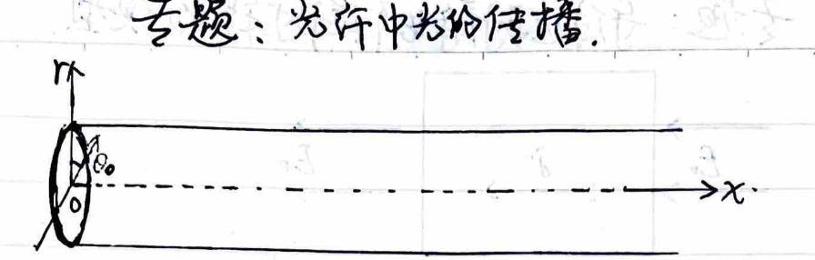
The radial distribution of refractive index is $n^2 = n_0^2(1 - \alpha^2 r^2)$.
$$ \begin{cases} n \sin\theta = n_0 \sin\theta_0 \\ \sin\theta = \cos\left(\frac{\pi}{2} - \theta\right) = \frac{1}{\sqrt{1 + \tan^2\left(\frac{\pi}{2} - \theta\right)}} = \frac{1}{\sqrt{1 + \left(\frac{dr}{dx}\right)^2}} \end{cases} $$ $$ \therefore \left(\frac{dr}{dx}\right)^2 = \frac{n^2}{n_0^2 \sin^2\theta_0} - 1 $$Taking the derivative with respect to $x$:
$$ 2 \left(\frac{dr}{dx}\right) \frac{d^2 r}{dx^2} = \frac{1}{n_0^2 \sin^2\theta_0} \frac{d(n^2)}{dr} \cdot \frac{dr}{dx} $$ $$ \therefore 2 \frac{d^2 r}{dx^2} = \frac{1}{n_0^2 \sin^2\theta_0} (-2n_0^2 \alpha^2 r) $$i.e., $\frac{d^2 r}{dx^2} + \frac{\alpha^2}{\sin^2\theta_0} r = 0$. Solving this differential equation yields $r = A \sin\left(\frac{\alpha}{\sin\theta_0} x + \varphi_0\right)$.
At $x = 0$, $r = 0$, so $A \sin\varphi_0 = 0$.
And at $x = 0$, $\frac{dr}{dx} = A \frac{\alpha}{\sin\theta_0} \cos\varphi_0$; therefore $A \frac{\alpha}{\sin\theta_0} \cos\varphi_0 = \frac{\cos\theta_0}{\sin\theta_0} \implies A\alpha \cos\varphi_0 = \cos\theta_0$.
Solving gives $\varphi_0 = 0, A = \frac{\cos\theta_0}{\alpha}$.
Therefore, the trajectory equation of the light ray is $r = \frac{\cos\theta_0}{\alpha} \sin\left(\frac{\alpha}{\sin\theta_0} x\right)$.
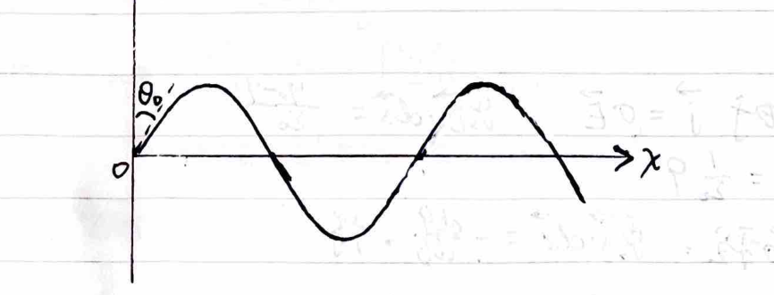
1. Photon causes bound electron to jump (Bound atom)
$$ h\nu = \frac{me^4}{8\varepsilon_0^2 h^2} \left(\frac{1}{m^2} - \frac{1}{n^2}\right) $$2. Photon causes free atom to jump (Free atom)
$$ h\nu = E_j - E_i + \frac{P_{\text{atom}} \cdot \frac{h\nu}{c}}{M} \cos\alpha - \frac{\left(\frac{h\nu}{c}\right)^2}{2M} $$ $$ = \frac{me^4}{8\varepsilon_0^2 h^2} \left(\frac{1}{m^2} - \frac{1}{n^2}\right) + \frac{P_{\text{atom}} h\nu}{Mc} \cos\alpha - \frac{(h\nu)^2}{2Mc^2} $$3. Photon causes electron to escape (Photoelectric effect)
$$ h\nu = \frac{1}{2}mv^2 + W = \frac{1}{2}mv^2 + \frac{me^4}{8\varepsilon_0^2 h^2} $$4. Photon causes electron to scatter (Compton effect on free electron at rest)
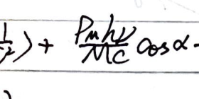
1. Basic duality of neutron waves and particles:
$$ \Psi(\vec{r}, t) = C e^{i(\vec{p}\cdot\vec{r} - E\cdot t)/\hbar} $$Its phase $(\vec{p}\cdot\vec{r} - E\cdot t)/\hbar$ is invariant under Lorentz transformation, requiring that $(\vec{p}, iE/c)$ form a four-vector, therefore $E=mc^2$, $p=mv$.
2. Neutron gravity interferometer:
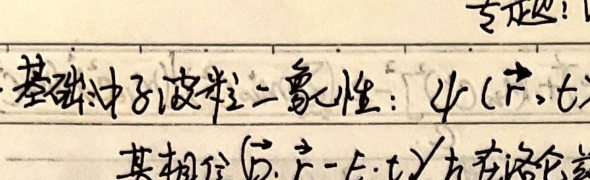
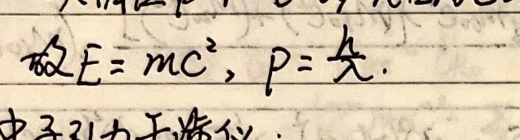
A neutron beam enters the interferometer from $A$. It is split into two beams by the beam splitter. Let the de Broglie wavelength of the neutron at this time be $\lambda_0$.
The neutrons in the $AB$ and $DC$ segments are subjected to gravity, so their momentum becomes smaller, hence their wavelength becomes longer. Also because the optical path is $N_{\text{opt}} = \int \frac{ds}{\lambda}$:
$\therefore$ The two neutron beams have the same optical path in segments $AB$ and $DC$, but a path difference is produced in segments $AD$ and $BC$.
Let the wavelength of the two neutron beams at point $C$ be $\lambda$. Since the optical path of one beam in $BC$ is $\frac{a}{\lambda_0}$, and the optical path of the other beam in $AD$ is $\frac{a}{\lambda}$, an optical path difference $AD\left(\frac{1}{\lambda_0} - \frac{1}{\lambda}\right)$ is produced, and the two neutron beams interfere at $C$.
3. Optical path difference calculation:
$\because$ The height difference is $H = \left(\frac{a}{\cos\theta}\right) \cdot \sin2\theta \cdot \sin\varphi = 2a \sin\theta \sin\varphi$.
$$ \therefore \frac{1}{2m} \left(\frac{h}{\lambda_0}\right)^2 - \frac{1}{2m} \left(\frac{h}{\lambda}\right)^2 = mgH = mg \cdot 2a \sin\theta \sin\varphi $$(Since slow neutrons are used in the experiment, the non-relativistic $p-E$ relation can be used).
$$ \therefore \left(\frac{1}{\lambda_0} - \frac{1}{\lambda}\right)\left(\frac{1}{\lambda_0} + \frac{1}{\lambda}\right) \approx \left(\frac{1}{\lambda_0} - \frac{1}{\lambda}\right) \cdot \frac{2}{\lambda_0} = \frac{4m^2 g a \sin\theta \sin\varphi}{h^2} $$ $$ \therefore \frac{1}{\lambda_0} - \frac{1}{\lambda} = \frac{2m^2 g a \sin\theta \sin\varphi \lambda_0}{h^2} $$ $$ \therefore \Delta N_{\text{opt}} = \left(\frac{1}{\lambda_0} - \frac{1}{\lambda}\right) \cdot \frac{a}{\cos\theta} = \frac{2m^2 g a^2 \lambda_0 \tan\theta \sin\varphi}{h^2} $$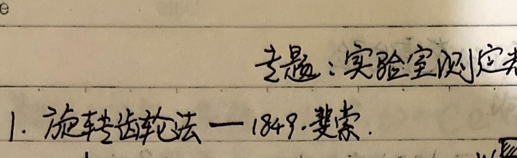
The light emitted from the point light source $S$ will converge and pass through the gap between two teeth of $W$ after being reflected by the half-silvered mirror $A$.
After reflection by $M$, it converges again at the toothed wheel. At this time, if the wheel has rotated exactly such that the light is blocked by a tooth, the observer will not see the light.
Let the speed of the wheel when the light reflected from mirror $M$ is blocked for the first time be $n$; the time required for one tooth to rotate to the next gap is $\Delta t$, and the total number of teeth on the wheel is $N$.
$$ \because \Delta \theta = \omega \Delta t \implies \frac{2\pi}{2N} = \omega \Delta t $$ $$ \text{Also } \omega = 2\pi n $$Solving gives $\Delta t = \frac{1}{2nN}$.
Since the light has traveled back and forth over a distance $l$, $\Delta t = \frac{2l}{c}$.
$$ \therefore \frac{2l}{c} = \frac{1}{2nN} \implies c = 4nNl $$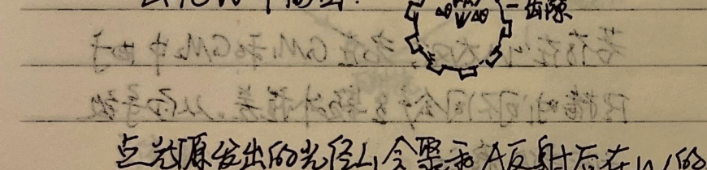
Let the angle the mirror $M_1$ rotated in time $\Delta t$ be $\Delta\alpha$; the reflected light will rotate by $2\Delta\alpha$. Therefore, the displacement of the image is $\Delta s = 2\Delta\alpha \cdot l$ (where $l$ is the distance from the lens $L$ to $S$ or $S'$).
Also, the light has traveled back and forth once between $M_2$ and $M_1$, so $\Delta t = \frac{2l_0}{c}$ (where $l_0$ is the distance between $M_2$ and $M_1$).
$$ \text{And } \because \Delta\alpha = \omega \Delta t $$ $$ \therefore \Delta s = 2\Delta\alpha \cdot l = 2\omega l \Delta t = \frac{4\omega l l_0}{c} $$ $$ \therefore c = \frac{4\omega l l_0}{\Delta s} $$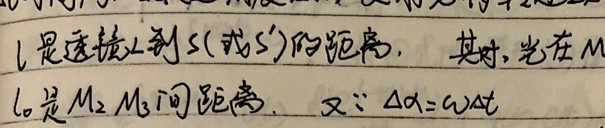
Let the distance between stations $A$ and $B$ be $L$. To get the light reflected from face $b$ to face $b'$ (to maintain the stationary image), the time taken is $\Delta t = \frac{\Delta\theta}{\omega}$, and the travel time of light is $\Delta t = \frac{2L}{c}$.
$$ \therefore c = \frac{2L\omega}{\Delta\theta} $$For an octagonal prism, $\Delta\theta = \frac{2\pi}{8} = \frac{\pi}{4}$.
Speed of Light:
$$ c = \frac{1}{\sqrt{\varepsilon\mu}} \quad \text{where } \varepsilon = \varepsilon_r \varepsilon_0, \; \mu = \mu_r \mu_0 \quad \text{and } \lambda\nu = c $$Speed of Sound:
$$ v = \sqrt{\frac{\gamma RT}{\mu}} $$(where $\mu$ is the macroscopic average molar mass of the air)
① Optical Doppler Effect
In the Michelson-Morley experiment, the interference fringes did not shift, which indicates that from frame $S$ to frame $S'$ (inertial frames), the phase of the wave does not change: $A(x,y,z,t) = A_0 e^{i(\vec{k}\cdot\vec{r} - \omega t)}$, i.e.,
$$ \vec{k}'\cdot\vec{r}' - \omega' t' = \vec{k}\cdot\vec{r} - \omega t $$Since $k = \frac{2\pi}{\lambda}$ and $\omega = 2\pi\nu$, the four-components of the wave vector $(k_x, k_y, k_z, i\frac{\omega}{c})$ obey the Lorentz transformation. Thus we have:
$$ \frac{\omega}{c} = \gamma\left(-\beta k_x' + \frac{\omega'}{c}\right) $$Substituting $k_x' = \frac{2\pi}{\lambda'}\cos\theta = \frac{2\pi\nu'}{c}\cos\theta$ and $\omega' = 2\pi\nu'$, we get:
$$ \frac{2\pi\nu}{c} = \gamma\left(-\beta \frac{2\pi\nu'}{c}\cos\theta + \frac{2\pi\nu'}{c}\right) $$Solving for $\nu'$ yields the relativistic optical Doppler effect formula:
$$ \nu' = \frac{\nu}{\gamma(1-\beta\cos\theta)} = \nu \frac{\sqrt{1-\beta^2}}{1-\beta\cos\theta} $$(where $\beta = \frac{v}{c}$, and $v$ is the velocity of the observer relative to the source.)
② Acoustic Doppler Effect
If the wave source moves relative to the medium with velocity $v_S$, then the wave speed is unchanged relative to the medium, but the wavelength changes:
$$ \nu' = \frac{v}{\lambda'} = \frac{v}{\frac{v}{\nu} - \frac{v_S\cos\alpha}{\nu}} = \nu \frac{v}{v - v_S\cos\alpha} $$If the observer moves relative to the medium with velocity $v_R$, then the wavelength is unchanged, but the wave speed changes relative to the observer:
$$ \nu'' = \frac{v + v_R\cos\beta}{\lambda} = \nu' \frac{v + v_R\cos\beta}{v} $$Combining the above, the general acoustic Doppler effect formula is:
$$ \nu_{obs} = \frac{v + v_R\cos\beta}{v - v_S\cos\alpha} \cdot \nu $$Experiment Objective: Measure the refractive index of a glass block.
Equipment: White paper, parallel-sided glass block, thumbtacks, pins, pencil, compass, triangle ruler.
Principle: Based on Snell's Law, $n = \frac{\sin i}{\sin r}$. By placing pins to trace the path of a light ray passing through the glass block and drawing the incident and refracted rays, we can measure the angles and calculate the refractive index.
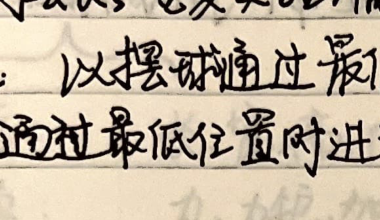
Experiment Objective: Measure the wavelength of monochromatic light.
Equipment: Light source, color filter, single slit, double slit, light shield tube (with screen and optical bench), measuring microscope.
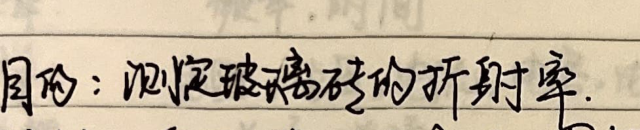
Principle & Procedure:
The distance between adjacent bright (or dark) fringes is given by:
$$ \Delta x = \frac{L}{d}\lambda $$The distance between fringes is measured using the measuring microscope (consisting of a graduated reticle, eyepiece, handwheel, and micrometer). Measuring the distance between two adjacent fringes directly as $\Delta x = |a_1 - a_2|$ has a large error. Usually, we measure the distance $a$ spanning across $n$ fringes, so:
$$ \Delta x = \frac{a}{n-1} $$Use a ruler to measure the distance $L$ from the double slit to the screen. The slit spacing $d$ is a known parameter of the apparatus.
$$ \therefore \lambda = \frac{d}{L}\Delta x $$ $$ p = \frac{\Delta F}{\Delta S} = \frac{\Sigma I_i}{\Delta S \Delta t} = \frac{\frac{1}{2}\Sigma (m \cdot n \cdot v_{ix} \Delta t \cdot \Delta S) \cdot 2v_{ix}}{\Delta S \cdot \Delta t} $$
$$ p = \frac{\Delta F}{\Delta S} = \frac{\Sigma I_i}{\Delta S \Delta t} = \frac{\frac{1}{2}\Sigma (m \cdot n \cdot v_{ix} \Delta t \cdot \Delta S) \cdot 2v_{ix}}{\Delta S \cdot \Delta t} $$
In the above equation, $m(n v_{ix} \Delta t \Delta S)$ is the mass of the molecules in a cuboid hitting the container wall in time $\Delta t$.
$\frac{1}{2}$ represents that the probability of $v_{ix}$ in the $\pm x$ directions are both $\frac{1}{2}$. Since we only study the case of molecules hitting the right wall, we only take $\frac{1}{2}$.
$$ \therefore p = n m \frac{\Sigma v_{ix}^2 \cdot n_i}{n} $$ $$ \because \overline{v_x^2} = \frac{\Sigma v_{ix}^2 n_i}{n} = \frac{1}{3}\overline{v^2} $$ $$ \therefore P = \frac{1}{3} n m \overline{v^2} = \frac{2}{3} n \left(\frac{1}{2} m \overline{v^2}\right) $$
After two molecules undergo elastic collision, the kinetic energy lost by molecule $M$:
$$ \Delta E = \frac{1}{2}M(v_{ox}^2 - v_x^2) \quad (v_{oy} = v_y) $$ $$ = \frac{1}{2}M(v_{ox}-v_x)(v_{ox}+v_x) $$From conservation of momentum:
$$ v_x = \frac{M v_{ox} + m v_{ox}'}{M+m} - \frac{m(v_{ox}-v_{ox}')}{M+m} = \frac{(M-m)v_{ox} + 2m v_{ox}'}{M+m} $$ $$ \therefore v_{ox} - v_x = \frac{2m(v_{ox}-v_{ox}')}{M+m}, \quad v_{ox} + v_x = \frac{2M v_{ox} + 2m v_{ox}'}{M+m} $$ $$ \therefore \Delta E = \frac{2mM}{(M+m)^2} [M v_{ox}^2 - m v_{ox}'^2 - (M-m)v_{ox}' v_{ox}] $$Taking the average for a large number of molecules $M$, we get:
$$ \overline{\Delta E} = \frac{2mM}{(M+m)^2} [M \overline{v_{ox}^2} - m \overline{v_{ox}'^2} - (M-m)\overline{v_{ox}' v_{ox}}] $$ $$ \because \overline{v_{ox}} = \overline{v_{ox}'} = 0 \quad \therefore \overline{v_{ox}' v_{ox}} = 0 $$ $$ \therefore \overline{\Delta E} = \frac{2mM}{3(M+m)^2} (M \overline{v^2} - m \overline{v'^2}) \quad \left(\overline{v_x^2} = \frac{1}{3}\overline{v^2}\right) $$ $$ \propto \frac{1}{2}M\overline{v^2} - \frac{1}{2}m\overline{v'^2} $$From the zeroth law of thermodynamics, the average kinetic energy of molecules has the macroscopic characteristic of temperature, so we set:
$$ \frac{1}{2}m\overline{v^2} = B \cdot T $$From $P = \frac{2}{3}n\left(\frac{1}{2}m\overline{v^2}\right)$ and $BT = \frac{1}{2}m\overline{v^2}$, we have
$$ P = \frac{2}{3}nBT = \frac{2}{3}\frac{N}{V}BT = \frac{2}{3}\frac{\nu N_A}{V}BT \quad (n: \text{number density}, \nu: \text{moles}) $$ $$ \therefore PV = \frac{2}{3}\nu N_A BT $$Let $R = \frac{2}{3}N_A B$, we get:
$$ PV = \nu RT. \quad \therefore T = \frac{1}{B}\left(\frac{1}{2}m\overline{v^2}\right) = \frac{2N_A}{3R}\left(\frac{1}{2}m\overline{v^2}\right). $$Deduction: $PV = \frac{M}{\mu}RT = \frac{\rho V}{\mu}RT$, $\therefore \mu P = \rho RT$.
For the same gas: $\frac{P_1 V_1}{T_1} = \frac{P_2 V_2}{T_2}, \quad \frac{P_1}{\rho_1 T_1} = \frac{P_2}{\rho_2 T_2}$.
For all gases in the same system: $\frac{P_{\text{total}} V_{\text{total}}}{T_{\text{total}}} = R \sum \nu_i = \sum \frac{P_i V_i}{T_i}$.
($\nu$: number of moles)
① Thermodynamic processes: The process of the system state changing with time (state variables: $P, T, V$).
$$ \begin{cases} \text{Quasi-static: } \text{every intermediate state is approximately an equilibrium state.} \\ \text{Non-quasi-static: } \text{intermediate states cannot be considered equilibrium states (cannot be represented on a P-V diagram).} \end{cases} $$1) Work: $dW = F dl = PS dl = P dV$.
2) Heat: $dQ = \nu C dT \quad (C: \text{molar heat capacity. For solids } C \text{ is constant. For gases } C \text{ can vary})$.
3) Internal energy: $dU = \frac{i}{2}\nu R dT$ (Molecular thermal motion: translation, rotation, vibration + potential energy between atoms in molecule).
$i = t + r + 2s \quad (t: \text{translational degrees of freedom} = 3; r: \text{rotational degrees of freedom} = 2, 1, 0; s: \text{vibrational degrees of freedom} = 3N-6)$.
For monoatomic molecules: $U = N \cdot \left(\frac{1}{2}m\overline{v^2}\right) = N \cdot \frac{3}{2}BT = \frac{3}{2}\nu RT$.
First Law of Thermodynamics: $U_0 + Q - W = U_t, \quad dQ = dU + dW$.
(Heat absorbed $Q$ is positive, work done by system on surroundings $W$ is positive).
② Analysis of various processes: $dQ = P dV + \frac{i}{2} \nu R dT, \quad PV = \nu RT$.
1) Isochoric process: $P = \frac{\nu R}{V} \cdot T$.
$$ \begin{cases} \text{Work done by system on surroundings: } W = \int P dV = 0. \\ \text{Change in system internal energy: } \Delta U = \frac{i}{2} \nu R \Delta T. \\ \text{Heat absorbed by system from surroundings: } Q = \frac{i}{2} \nu R \Delta T = \nu C_V \Delta T. \end{cases} $$2) Isobaric process: $V = \frac{\nu R}{P} \cdot T$.
$$ \begin{cases} \text{Work done by system on surroundings: } W = \int P dV = P \Delta V = \nu R \Delta T. \\ \text{Change in system internal energy: } \Delta U = \frac{i}{2} \nu R \Delta T = \nu C_V \Delta T. \\ \text{Heat absorbed by system from surroundings: } Q = \nu(C_V+R)\Delta T = \nu C_P \Delta T. \end{cases} $$3) Isothermal process: $P = \frac{\nu RT}{V}$.
$$ \begin{cases} \text{Work done by system on surroundings: } W = \int_{V_1}^{V_2} P dV = \nu RT \int_{V_1}^{V_2} \frac{dV}{V} = \nu RT \ln\frac{V_2}{V_1} = -\nu RT \ln\frac{P_2}{P_1}. \\ \text{Change in system internal energy: } \Delta U = \frac{i}{2} \nu R \Delta T = 0. \\ \text{Heat absorbed by system from surroundings: } Q = \nu RT \ln\frac{V_2}{V_1}. \end{cases} $$4) Adiabatic process: $PV^\gamma = P_0 V_0^\gamma$.
From $P dV + V dP = \nu R dT$ and $\nu C_V dT + P dV = dU + dW = 0$, we get:
$$ \frac{C_V}{R} (P dV + V dP) + P dV = 0 \implies \frac{R+C_V}{C_V} \frac{dV}{V} = -\frac{dP}{P}. $$Integrating gives $\ln\frac{V}{V_0} = -\frac{C_V}{C_P} \ln\frac{P}{P_0} \dots \implies PV^{\frac{C_P}{C_V}} = P_0 V_0^{\frac{C_P}{C_V}} \implies PV^\gamma = P_0 V_0^\gamma$.
$$ \begin{cases} \text{Work done by system: } W = \int_{V_1}^{V_2} P dV = \int_{V_1}^{V_2} \frac{P_0 V_0^\gamma}{V^\gamma} dV = \left. P_0 V_0^\gamma \frac{1}{1-\gamma} V^{1-\gamma} \right|_{V_1}^{V_2} \\ \quad = -\frac{C_V}{R} P_0 V_0^\gamma (V_2^{-\frac{R}{C_V}} - V_1^{-\frac{R}{C_V}}) = \dots \\ \quad = \frac{C_V}{R} (P_1 V_1 - P_2 V_2) = \frac{C_V}{R} (\nu R T_1 - \nu R T_2) = \nu C_V (T_1 - T_2). \\ \text{Internal energy change: } \Delta U = \nu C_V (T_2 - T_1) = \nu C_V \Delta T. \\ \text{Heat absorbed: } Q = 0. \end{cases} $$5) Carnot cycle of ideal gas:

(1) $Q_1 = \nu R T_1 \ln\frac{V_b}{V_a}$: Isothermal expansion $ab$ absorbs heat $Q_1$ from high temp source $T_1$.
(2) $T_1 V_b^{\gamma-1} = T_2 V_c^{\gamma-1}$: Adiabatic process $bc$.
(3) $Q_2 = \nu R T_2 \ln\frac{V_c}{V_d}$: Isothermal compression $cd$ releases heat $Q_2$ to low temp source $T_2$.
(4) $T_2 V_d^{\gamma-1} = T_1 V_a^{\gamma-1}$: Adiabatic process $da$.
From (2) and (4) we get: $\frac{V_b}{V_a} = \frac{V_c}{V_d}$. Substituting into (3) yields:
$$ Q_2 = \nu R T_2 \ln\frac{V_b}{V_a} $$Comparing with (1) we get: $\frac{Q_1}{T_1} = \frac{Q_2}{T_2}$
$$ \therefore \eta = \frac{A}{Q_1} = \frac{Q_1 - Q_2}{Q_1} = 1 - \frac{T_2}{T_1}. $$($n_{\text{evap}} = n_{\text{cond}}$ vs $n_{\text{evap}} > n_{\text{cond}}$)
Properties:
Calculation: According to Dalton's law of partial pressures: gas pressure in a closed container $P = P_{\text{gas}} + P_{\text{vapor}}$.
When there is liquid water in the container and it's in an equilibrium state, $P_{\text{vapor}} = P_{\text{sat}}$, which corresponds to 100% relative humidity.
For a mixture of air and water vapor, when the vapor is unsaturated, it approximately follows the ideal gas equation of state, i.e., $P_{\text{gas}} V = \nu_{\text{gas}} R T$, $P_{\text{vapor}} V = \nu_{\text{vapor}} R T$, and $PV = \nu_{\text{total}}RT$.
When temperature drops, water vapor turns into saturated vapor; if temperature drops further or pressure increases, water vapor will partially liquefy. At this time $P_{\text{sat}} V' = \nu_{\text{vapor}}' R T$, and $P_{\text{gas}}' V' = \nu_{\text{gas}} R T$.
For a mixture of air and water vapor, if there is no liquid water present, it can be calculated using the ideal gas equation of state.
$$ \rho = \frac{M_{\text{gas}} \cdot \nu_{\text{gas}} + M_{\text{vapor}} \cdot \nu_{\text{vapor}}}{V} \quad (M_{\text{gas}} = 28.8 \text{ g/mol}, M_{\text{vapor}} = 18 \text{ g/mol}). $$And definitions: Absolute humidity = $P_{\text{vapor}}$, Relative humidity = $\frac{P_{\text{vapor}}}{P_{\text{sat}}}$ (where $P_{\text{sat}}$ is the saturated vapor pressure at that temperature).
Property: For a non-planar liquid surface, surface tension will cause a pressure difference between inside and outside. As shown in the figure:

Let $\widehat{AB} = \widehat{EF} = \widehat{HG} = \Delta l_1$, $\widehat{A_1B_1} = \widehat{HE} = \widehat{GF} = \Delta l_2$.
Because the horizontal components of $\Delta f_1$ and $\Delta f_2$ cancel each other,
$$ \therefore \text{The combined effect of } \Delta f_1 \text{ and } \Delta f_2 \text{ is } (\Delta f_1 + \Delta f_2)\Delta\varphi = 2\sigma \Delta l_2 \Delta\varphi = 2\sigma \Delta l_2 \cdot \frac{A_1B_1}{2R_1} = \frac{\sigma}{R_1} \Delta l_1 \Delta l_2 = \frac{\sigma}{R_1} \Delta S. $$Similarly, for $\widehat{A_2B_2}$ there is a combined force $\frac{\sigma}{R_2}\Delta S$.
$$ \therefore \Delta f_{\text{total}} = \sigma\left(\frac{1}{R_1} + \frac{1}{R_2}\right)\Delta S $$$\therefore$ The pressure difference caused by the curved surface is $p = \frac{\Delta f_{\text{total}}}{\Delta S} = \sigma\left(\frac{1}{R_1} + \frac{1}{R_2}\right)$.
Where $R_1, R_2$ are the principal radii of curvature of two mutually perpendicular normal sections.
$$ \begin{cases} \text{For a spherical surface, additional pressure } p_1 = \frac{2\sigma}{R} \\ \text{For a spherical bubble film, additional pressure } p_2 = 2p_1 = \frac{4\sigma}{R} \end{cases} $$① Capillary Phenomenon
For a wetting liquid:
 $$ \because p_A = p_0 - \frac{2\sigma}{R}. $$
$$ p_B = p_A + \rho g h = p_0. $$
$$ \therefore h = \frac{2\sigma}{\rho g R}. \quad \text{Also } \because R\cos\theta = r, \quad \therefore h = \frac{2\sigma\cos\theta}{\rho g r}. $$
$$ \because p_A = p_0 - \frac{2\sigma}{R}. $$
$$ p_B = p_A + \rho g h = p_0. $$
$$ \therefore h = \frac{2\sigma}{\rho g R}. \quad \text{Also } \because R\cos\theta = r, \quad \therefore h = \frac{2\sigma\cos\theta}{\rho g r}. $$
② Vibration of a Soap Bubble

When the soap bubble radius expands by $x$, the surface has:
$$ df_{\text{total}} = P_0 ds + \frac{4\sigma}{R+x} ds - p' ds \quad (P_0 \text{ is atmospheric pressure}). $$At equilibrium, $P_0 ds + \frac{4\sigma}{R} ds = P ds$. $\therefore P = P_0 + \frac{4\sigma}{R}$.
Due to isothermal change, $\therefore P \cdot \frac{4}{3}\pi R^3 = P' \cdot \frac{4}{3}\pi (R+x)^3$. $\therefore P' = \left(\frac{R}{R+x}\right)^3 \cdot \left(P_0 + \frac{4\sigma}{R}\right)$.
$$ \therefore df_{\text{total}} = P_0\left[1 - \left(\frac{R}{R+x}\right)^3\right] ds + 4\sigma\left[\frac{1}{R+x} - \frac{R^2}{(R+x)^3}\right] ds $$ $$ \approx P_0\left[1 - \frac{R^3}{R^3+3R^2x}\right] ds + 4\sigma\left[\frac{1}{R+x} - \frac{R^2}{R^3+3R^2x}\right] ds $$ $$ \approx P_0\left(1 - \frac{R-3x}{R}\right) ds + 4\sigma\left(\frac{R-x}{R^2} - \frac{R-3x}{R^2}\right) ds $$ $$ = \frac{3x}{R}P_0 ds + \frac{2x}{R^2} 4\sigma ds. $$ $$ \therefore dk = \frac{3P_0 ds}{R} + \frac{8\sigma ds}{R^2}. $$ $$ \therefore T = 2\pi \sqrt{\frac{dm}{dk}} = 2\pi \sqrt{\frac{\frac{ds}{4\pi R^2} m}{\left(\frac{3P_0}{R} + \frac{8\sigma}{R^2}\right) ds}} = 2\pi \sqrt{\frac{m}{12\pi R P_0 + 32\pi \sigma}}. $$The work done by surface tension during this process:
$$ W = \int_{R_1}^{R_2} \frac{4\sigma}{R} \cdot 4\pi R^2 \cdot dR = 16\pi\sigma \int_{R_1}^{R_2} R dR = 8\pi\sigma(R_2^2 - R_1^2). $$Similarly, calculating with surface free energy:
$$ W = (2\sigma)(S_2 - S_1) = 2\sigma(4\pi R_2^2 - 4\pi R_1^2) = 8\pi\sigma(R_2^2 - R_1^2) $$(Because a liquid film has two surfaces, each surface doing work $\sigma\Delta S$, two surfaces doing work to overcome surface tension is $2\sigma\Delta S$).
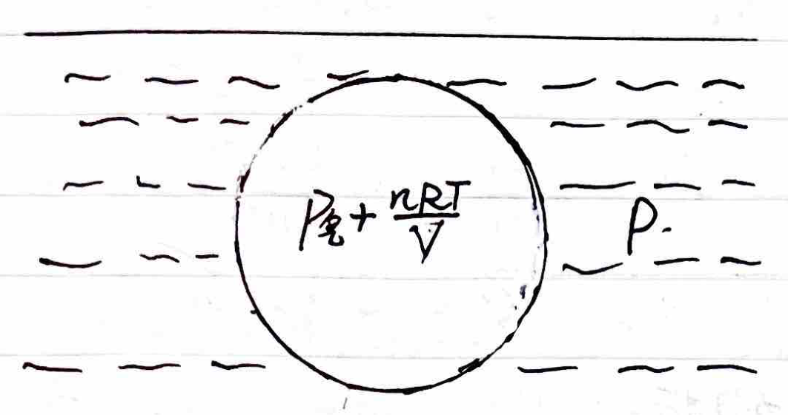
The gas inside the bubble consists of saturated vapor and dry air. The pressure outside the bubble is generated jointly by the liquid and the atmosphere.
Let the saturated vapor pressure be $P_{\text{sat}}$ and the dry air pressure be $\frac{nRT}{V}$.
The pressure inside the bubble is the sum of the liquid's saturated vapor pressure and the air pressure: $\frac{nRT}{V} + P_{\text{sat}}$.
Let the pressure outside the bubble be $P$, and assume the bubble radius is not too small.
$$ \therefore P_{\text{sat}} + \frac{nRT}{V} - P = \frac{2\sigma}{r} \approx 0 $$When the temperature rises, $P_{\text{sat}}$ increases; at this time, the bubble volume increases, causing $\frac{nRT}{V}$ to decrease. The bubble can reach a new equilibrium.
When $P_{\text{sat}}$ increases to equal $P$, no matter how much the volume increases, equilibrium cannot be maintained, and boiling occurs.
Therefore, when $P_{\text{sat}} = P$, i.e., the temperature at which the saturated vapor pressure of the liquid inside the bubble equals the external pressure, is the boiling point.
If in a closed container, the total pressure above the liquid surface (liquid saturated vapor pressure + other gas pressures) is consistently greater than the liquid's saturated vapor pressure, the liquid in the container cannot boil.
① Crystal Types:
② Thermal Expansion:
Let the length of a solid at $0^\circ\text{C}$ and $t^\circ\text{C}$ be $l_0$ and $l$. We have:
$$ l = l_0(1 + \alpha t), \quad dl = \alpha l_0 dt. $$Let the volume of a solid at $0^\circ\text{C}$ and $t^\circ\text{C}$ be $V_0$ and $V$. We have:
$$ V = V_0(1 + \beta t), \quad dV = \beta V_0 dt. $$And $\beta = 3\alpha$.
③ Phase Changes:
For the same solid: heat of fusion $Q_1 = \lambda m$; heat of vaporization $Q_2 = L m$.
Heat of sublimation $Q_3 = Q_1 + Q_2 = (\lambda + L)m$.
④ Heat Conduction:
Let there be a plate of cross-sectional area $S$ and thickness $x$. The two sides of the plate maintain a temperature difference $\Delta T$.
The heat $dQ$ flowing perpendicular to the plate surface in time $dt$ is:
$$ H = \frac{dQ}{dt} = -k S \cdot \frac{\Delta T}{x} $$ $$ \begin{cases} \text{Multi-layer plates in series: } H = \frac{-S\Delta T}{\sum (x_i/k_i)} \\ \text{Multi-layer plates in parallel: } H = -\frac{\Delta T}{x} \sum (k_i S_i) \end{cases} \quad \text{(Similar to the series and parallel connections of resistors, capacitors, inductors, and springs)}. $$Experiment Objective: Estimate the diameter of (oleic acid) molecules.
Equipment: Oleic acid, alcohol, shallow tray, talcum powder, graduated cylinder (two), dropper (or syringe), glass plate, pen, coordinate paper.
Principle: Oleic acid molecules form a monomolecular layer on the water surface. By calculating the area of the film formed by a certain known volume of pure oleic acid on the water, we can calculate the size (diameter) of the oleic acid molecule.
Procedure:
The film thickness (molecular diameter) is then:
$$ D = \frac{V_{\text{pure}}}{S} $$(The calculated order of magnitude for the molecular diameter should be around $10^{-10}\text{ m}$).
In Electrostatic Fields:
① Electric field distribution of a point charge:
$$ E = \frac{1}{4\pi\varepsilon_0} \frac{Q}{r^2} $$② Electric field distribution of a uniformly charged solid sphere (Charge volume density is equal everywhere, charges cannot move freely):
$$ \begin{cases} \text{When } r < R, \quad E \cdot 4\pi r^2 = \frac{1}{\varepsilon_0} \frac{r^3}{R^3} Q \\ \quad \therefore E = \frac{Q r}{4\pi\varepsilon_0 R^3} \\ \text{When } r \ge R, \quad E \cdot 4\pi r^2 = \frac{1}{\varepsilon_0} Q \\ \quad \therefore E = \frac{Q}{4\pi\varepsilon_0 r^2} \end{cases} $$
③ Electric field distribution of a hollow spherical shell (Thin conducting spherical shell or solid conducting sphere, charges distribute on the outer surface due to electrostatic equilibrium, charges can move freely):
$$ \begin{cases} \text{When } r < R, \quad E \cdot 4\pi r^2 = 0 \\ \quad \therefore E = 0 \\ \text{When } r \ge R, \quad E \cdot 4\pi r^2 = \frac{1}{\varepsilon_0} Q \\ \quad \therefore E = \frac{Q}{4\pi\varepsilon_0 r^2} \end{cases} $$
④ Electric field distribution of an infinitely long conducting wire (Charge linear density $\lambda$):

⑤ Electric field distribution of an infinitely wide flat plate (Charge surface density $\sigma$):

⑥ Surface of a conductor in electrostatic equilibrium:

⑦ Electric Dipole: (Dipole moment $\vec{p} = q\vec{l}$, where $\vec{l}$ points from $-q$ to $+q$).
1) On the perpendicular bisector:

2) On the line connecting the charges:
 $$ E = \frac{kq}{(r - \frac{l}{2})^2} - \frac{kq}{(r + \frac{l}{2})^2} = kq \frac{r^2 + rl + \frac{l^2}{4} - r^2 + rl - \frac{l^2}{4}}{\left[r^2 - (\frac{l}{2})^2\right]^2} \approx kq \cdot \frac{2rl}{r^4} = \frac{2kql}{r^3} $$
$$ \therefore E \approx \frac{2kp}{r^3} $$
$$ E = \frac{kq}{(r - \frac{l}{2})^2} - \frac{kq}{(r + \frac{l}{2})^2} = kq \frac{r^2 + rl + \frac{l^2}{4} - r^2 + rl - \frac{l^2}{4}}{\left[r^2 - (\frac{l}{2})^2\right]^2} \approx kq \cdot \frac{2rl}{r^4} = \frac{2kql}{r^3} $$
$$ \therefore E \approx \frac{2kp}{r^3} $$
3) Arbitrary point:

⑧ Electric field in the overlapping region of overlapping solid spheres (Volume density $\rho$ and $-\rho$):

⑨ Electric field distribution on the axis of a charged ring:

⑩ Electric field distribution on the axis of a charged disk:

1. Generalizing from the electric field at the center of a uniformly charged semi-circle to an arc with subtended angle $\varphi$:


2. Generalizing from the electric field at the center of a uniformly charged hemispherical shell to a spherical cap with subtended angle $\varphi$:


3. Generalizing from the electric field at distance R from an infinitely long uniformly charged line to a finite line:

4. Generalizing from the electric field at distance R from an infinitely wide uniformly charged plate to a finite plate:


When infinity is non-conducting, potential at infinity is zero. If not considering the charge of the Earth, Earth is regarded as potential zero.
① Electric potential distribution of a point charge:
$$ \varphi_a = \frac{q}{4\pi\varepsilon_0} \int_a^\infty \frac{dr}{r^2} = \frac{q}{4\pi\varepsilon_0} \left(-\frac{1}{r}\right)_a^\infty = \frac{q}{4\pi\varepsilon_0 a} $$ $$ U_{ab} = \varphi_a - \varphi_b = \frac{q}{4\pi\varepsilon_0}\left(\frac{1}{a} - \frac{1}{b}\right) $$② Solid sphere:
$$ \begin{cases} r \ge R, \quad \varphi = \int_r^\infty E dr = \frac{q}{4\pi\varepsilon_0 r} \\ r < R, \quad \varphi = \frac{q}{4\pi\varepsilon_0 R} + \int_r^R \frac{q \cdot r dr}{4\pi\varepsilon_0 R^3} = \frac{q}{4\pi\varepsilon_0 R} + \frac{q(R^2 - r^2)}{8\pi\varepsilon_0 R^3} = \frac{q(3R^2 - r^2)}{8\pi\varepsilon_0 R^3} \end{cases} $$③ Hollow spherical shell:

④ Electric Dipole:

⑤ Electric potential distribution of infinitely long uniformly charged line:

⑥ Electric field lines and equipotential lines equations for a finite length uniformly charged straight line:
1) Electric field line equation:

From the previous derivation, the effect of AB on P is equivalent to that of arc MN (with the same linear density $\lambda$) on P. $\therefore$ The direction of the electric field at point P is along the angle bisector of $\angle MPN$, which is also the tangent direction of the electric field line.
Due to the arbitrariness of point P, the direction of the electric field at any point on the $xy$ plane is along the bisector of $\angle APB$.
From the properties of a hyperbola (the tangent direction at any point on it is the same as the angle bisector of the lines connecting the two foci to that point), it can be known that the electric field lines are a family of confocal hyperbolas. Their equation is:
$$ \frac{x^2}{a^2} - \frac{y^2}{\frac{l^2}{4} - a^2} = 1 \quad \left(\text{where } 0 < a < \frac{l}{2}\right) $$2) Equipotential line equation:

⑦ Electric potential distribution on the axis of a charged ring:

⑧ Electric potential distribution on the axis of a charged disk:
Using the above result:
$$ \varphi = \int \frac{dq}{4\pi\varepsilon_0\sqrt{x^2+r^2}} = \int_0^R \frac{2\pi r dr \sigma}{4\pi\varepsilon_0\sqrt{x^2+r^2}} $$ $$ = \frac{\sigma}{2\varepsilon_0} \int_0^R \frac{r dr}{\sqrt{x^2+r^2}} = \frac{\sigma}{4\varepsilon_0} \int_0^R \frac{d(x^2+r^2)}{\sqrt{x^2+r^2}} = \frac{\sigma}{2\varepsilon_0}\left(\sqrt{x^2+R^2} - x\right) $$⑨ Electric potential distribution of an infinitely wide uniformly charged flat plate:
Choosing the charged plane itself as the zero potential point, the potential at a distance $r$ from the plate is:
$$ \varphi = -\int_0^r \frac{\sigma}{2\varepsilon_0} dr = -\frac{\sigma r}{2\varepsilon_0} $$① Electric Potential Energy:
Because the electrostatic field is a conservative field, when moving a charge in an electrostatic field, the work done by the electrostatic field force is independent of the path. Therefore, any charge in an electrostatic field has electrostatic potential energy.
$$ W = q\varphi $$ $$ A_{12} = W_1 - W_2 = q(\varphi_1 - \varphi_2) $$The electric potential energy of a charge in an external electric field is shared by the charge and the charge system that produces the electric field. It is an interaction energy. Similarly, the electric potential energy of a point charge system in an external electric field is $W = \sum q_i \varphi_i$.
(Note: $\varphi_i$ does not include the potential produced by the charges within this charge system at that point.)
② Electrostatic Energy:
1) Mutual energy: The work done by electrostatic forces between charges when they are scattered from their current positions to infinity. i.e., the interaction energy of a point charge system.
2) Self-energy: The work done by electrostatic forces when a charged body is divided into infinite charge elements and scattered to infinity from each other.
$$ E = \frac{1}{2} \int \varphi dq $$Therefore, the total electrostatic energy in space = mutual energy + self-energy = $\frac{1}{2} \int \varphi dq$.
$$ = \int w dV = \frac{1}{2} \varepsilon_0 \int E^2 dV \quad (w: \text{energy density}) $$③ Applications of Energy
1) Electric potential energy of an electric dipole in an external uniform electric field $\vec{E}$:

2) Electrostatic energy of a parallel plate capacitor:
$$ \begin{cases} W = \frac{1}{2} \int \varphi dq = \frac{1}{2} q(U_1 - U_2) = \frac{1}{2} qU \\ W = \frac{1}{2}\varepsilon_0 \int E^2 dV = \frac{1}{2}\varepsilon_0 E^2 S \cdot d = \frac{1}{2}\varepsilon_0 \frac{U^2}{d^2} S \cdot d = \frac{1}{2} C U^2 \\ W = \int q dU = \int \frac{q dq}{C} = \frac{1}{2} \frac{q^2}{C} \end{cases} $$3) Solid sphere:

4) Hollow spherical shell:

① Conductors in electrostatic equilibrium:
$$ \begin{cases} \text{Inside: } \vec{E} = \vec{E}_{\text{external}} + \vec{E}_{\text{induced}} = 0 \\ \text{Outside: } \text{Field strength at outer surface } \vec{E} = \frac{\sigma}{\varepsilon_0} \vec{n} \perp \text{outer surface} \end{cases} $$The conductor is an equipotential body, its surface is an equipotential surface, and induced charges distribute on the surface.
Conductor with a cavity:
1) Charges outside cavity, conductor ungrounded, no charge on inner wall, no electric field inside cavity.

2) Charges outside cavity, conductor grounded, no charge on inner wall, only one type of charge on outer surface, no electric field inside cavity.

3) Charge inside cavity, conductor ungrounded, inner and outer wall charges are $-q$ and $+q$ respectively, electric field exists outside cavity.

4) Charge inside cavity, conductor grounded, inner wall charge $-q$, outer wall charge $0$, no electric field outside cavity.

In summary: Cases 1) and 2): outside does not affect inside. Case 3): inside does not affect outside. If charges exist both inside and outside simultaneously (grounded or ungrounded), then superpose the respective cases.
② Dielectrics in electrostatic equilibrium:
$$ \begin{cases} \text{Polar molecules } \to \text{inherent electric moment } \to \text{inherent moments align in external field} \\ \text{Non-polar molecules } \to \text{induced electric moment } \to \text{external field separates centers of positive and negative charges} \end{cases} $$Macroscopic effect: generates surface polarization charges.
Let the external field be $\vec{E}_0$. The surface density of polarization charges is $\sigma'$. The field induced by it is $\vec{E}'$. The relative permittivity of the dielectric is $\varepsilon_r$. Therefore, the resultant field in space is $\vec{E} = \vec{E}_0 + \vec{E}'$.
Take a rectangular cuboid dielectric as an example:

In summary: From initial conditions $E_0$ and $\varepsilon_r$, by Gauss's law:
$$ \begin{cases} \varepsilon_0 \oint_S \vec{E} \cdot d\vec{S} = q_{\text{free}} + q_{\text{polarization}} \\ \varepsilon_0 \oint_S (\varepsilon_r \vec{E}) \cdot d\vec{S} = q_{\text{free}} \end{cases} $$(Note: A dielectric is generally not an equipotential body, its surface is generally not an equipotential surface, and polarization charges distribute on the surface.)
We can solve for:
$$ E = \frac{E_0}{\varepsilon_r}, \quad E' = \frac{\varepsilon_r-1}{\varepsilon_r} E_0, \quad \sigma' = \frac{\varepsilon_0(\varepsilon_r-1)}{\varepsilon_r} E_0 $$Define polarization $\vec{P} = \varepsilon_0(\varepsilon_r-1)\vec{E}$, then $\sigma' = \frac{\vec{P} \cdot d\vec{S}}{dS} = \vec{P} \cdot \hat{n}$.
1) Sphere of radius R, charge q immersed in a dielectric $\varepsilon_r$:

2) Half space between two parallel metal plates ($+\sigma_0, -\sigma_0$) is filled with dielectric $\varepsilon_r$. (See next page)
2) Half space between two parallel metal plates ($+\sigma_0, -\sigma_0$) is filled with dielectric $\varepsilon_r$.
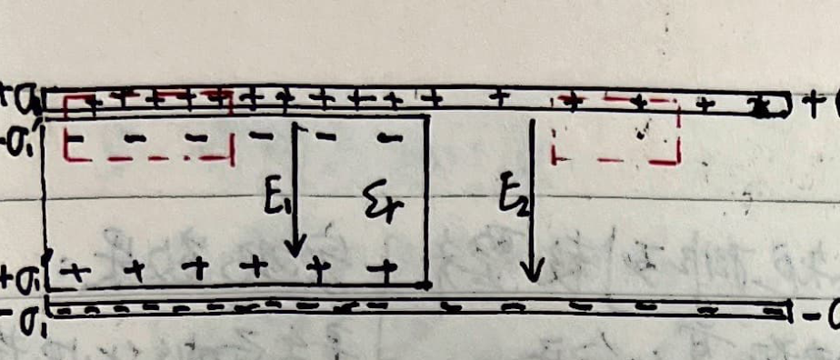
From charge conservation: $\sigma_1 + \sigma_2 = 2\sigma_0$.
From Gauss's law:
Also $\because U_1 = U_2 \quad \therefore E_1 = E_2$.
Thus from the equations we get:
$$ \begin{cases} \sigma_1 = \frac{2\varepsilon_r}{1+\varepsilon_r} \sigma_0 \\ \sigma_2 = \frac{2}{1+\varepsilon_r} \sigma_0 \\ \sigma_1' = \frac{2(\varepsilon_r-1)}{1+\varepsilon_r} \sigma_0 \end{cases} \quad \text{and} \quad E_1 = E_2 = \frac{2\sigma_0}{\varepsilon_0(1+\varepsilon_r)} = \frac{2}{1+\varepsilon_r} E_0 $$3) Dielectric sphere of radius R, relative permittivity $\varepsilon_r$ in a uniform field $E_0$:
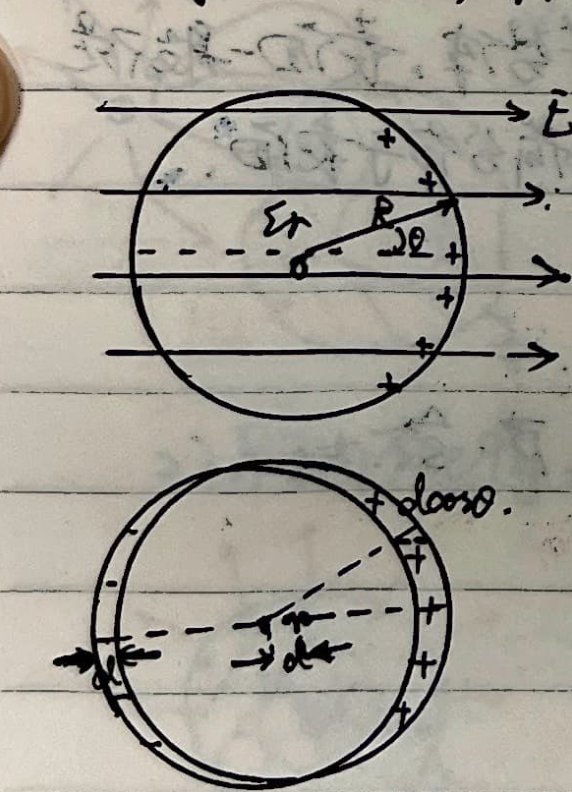
Principle: Replace the effect of induced charges with one or several point charges.
Essence: In the space where the original charges are located, the spatial electric field strength and potential distribution remain unchanged.
Reason: Uniqueness Theorem.
1. Infinite grounded flat plate:
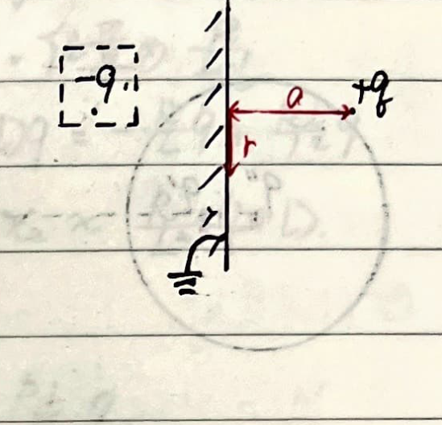
2. Grounded conducting spherical shell:
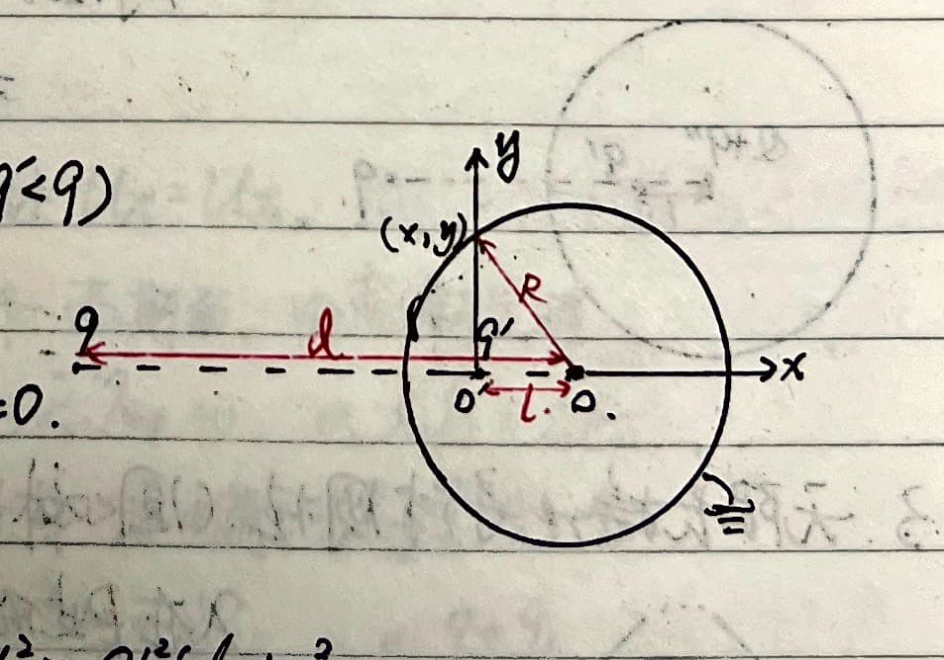
Also, since the potential at the center $O$ is $0$ in a grounded shell, $\frac{k q'}{l} + \frac{k q_{\text{induced}}}{R} = 0$, thus the total induced charge on the spherical surface equals the image charge $q'$.
Discussion:
① If initially the spherical shell is ungrounded and uncharged, and $+q$ is placed outside:
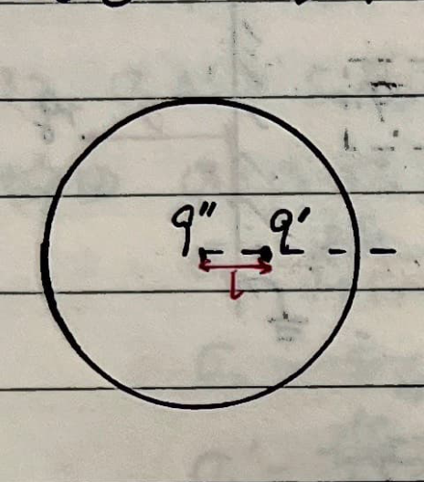
② If initially the shell is ungrounded and carries charge $Q$, and $+q$ is added outside:
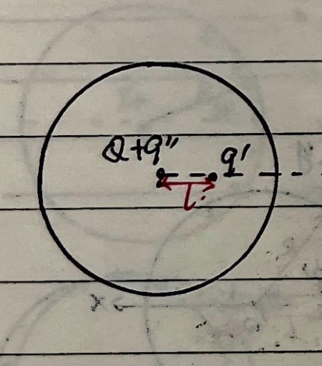
3. Infinitely long grounded conducting cylinder (with line charge $\lambda$ at distance $d$ outside):
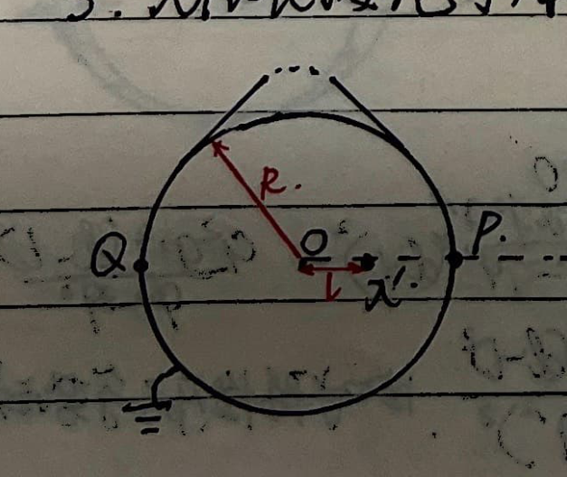
4. Electric dipole outside an ungrounded spherical shell at distance $L$:
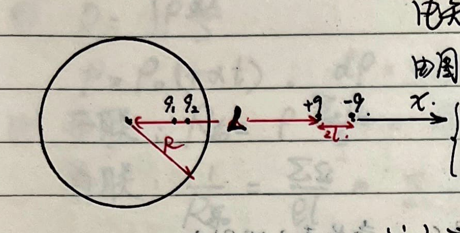
5. Image of a point charge with respect to an infinite dielectric plane:
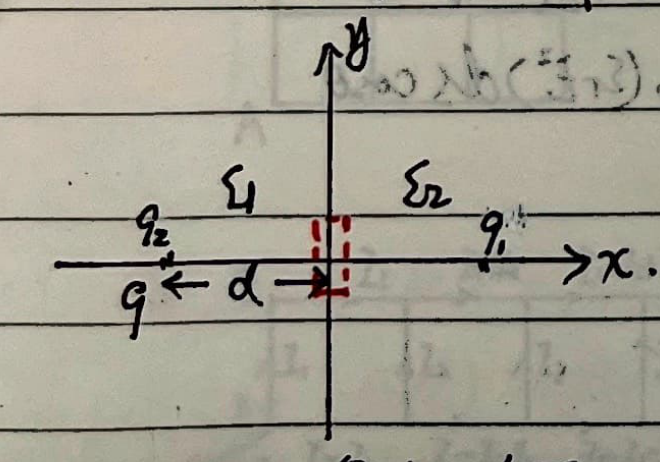
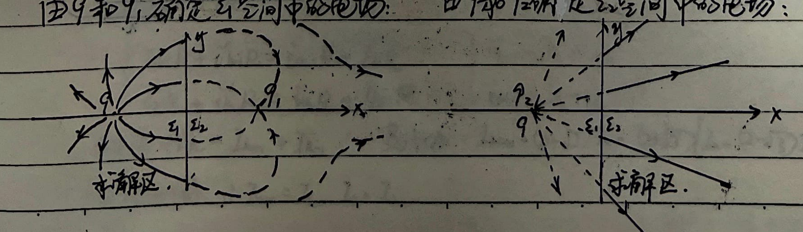
1. Electrostatic force experienced by the plates of a parallel plate capacitor:
① When $q$ is constant:
$$ W = \frac{1}{2}\varepsilon_0 E^2 S d = \frac{1}{2}\varepsilon_0 \left(\frac{q}{\varepsilon_0 S}\right)^2 S d = \frac{1}{2} \frac{q^2 d}{\varepsilon_0 S} $$ $$ \therefore F = -\frac{\partial W}{\partial d} = -\frac{q^2}{2\varepsilon_0 S} = -\frac{\sigma^2 S}{2\varepsilon_0} = -\frac{1}{2}\varepsilon_0 E^2 S $$The negative sign indicates an attractive force.
② When $U$ is constant:
$$ W = \frac{1}{2}\varepsilon_0 \left(\frac{U}{d}\right)^2 S d = \frac{1}{2} \frac{\varepsilon_0 U^2 S}{d} $$ $$ \therefore F = \frac{\partial W}{\partial d} = -\frac{\varepsilon_0 U^2 S}{2d^2} = -\frac{1}{2}\varepsilon_0 E^2 S $$The negative sign indicates an attractive force.
In summary, $|F| = \frac{1}{2}\varepsilon_0 E^2 S$, which can be generalized to any charged body. The electrostatic pressure is $f = \frac{dF}{dS} = \frac{1}{2}\varepsilon_0 E^2 = w_e$.
$$ F = \int_S p dS = \frac{1}{2\varepsilon_0} \int_S \sigma^2 dS. \quad \text{Also } W = \int_V \frac{1}{2}\varepsilon_0 E^2 dV $$ $$ F = \int_S \frac{1}{2}\varepsilon_0 (\varepsilon_r E^2) dS \cos\theta $$2. Interaction force between the upper and lower hemispheres of a charged conducting sphere:
$$ F = \frac{1}{2\varepsilon_0} \int_S \sigma^2 dS \cos\theta = \frac{\sigma^2}{2\varepsilon_0} \pi R^2 $$3. Force pulling a dielectric block inside parallel metal plates:
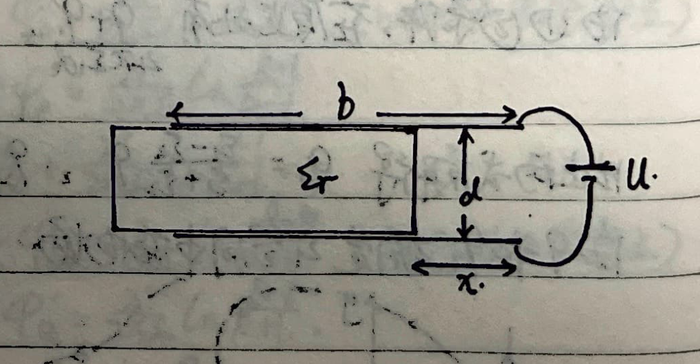
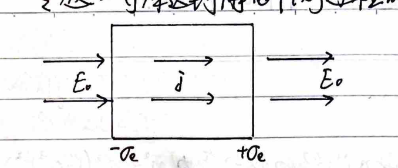
1. Decay of Current Density
Let the surface charge density accumulated on both ends of the conductor at time $t$ be $\sigma_e$. $\sigma_e$ generates an opposing electric field $E'$ inside the conductor, then $E = E_0 - E'$, which is the resultant field inside the conductor.
From Gauss's Law:
$$ -E_0 \Delta S + (E_0 - E') \Delta S = \frac{(-\sigma_e) \Delta S}{\varepsilon_0} $$ $$ \therefore E' = \frac{\sigma_e}{\varepsilon_0} $$Also, since $dq = i dt \implies d\sigma_e \cdot S = j \cdot S dt = \sigma E \cdot S dt$
$$ \therefore d\sigma_e = \sigma E dt = \sigma\left(E_0 - \frac{\sigma_e}{\varepsilon_0}\right) dt $$ $$ \therefore \int_0^{\sigma_e} \frac{d\sigma_e}{E_0 - \frac{\sigma_e}{\varepsilon_0}} = \int_0^t \sigma dt \implies \sigma_e = \varepsilon_0 E_0 (1 - e^{-\frac{\sigma}{\varepsilon_0} t}) $$And $E' = E_0 (1 - e^{-\frac{\sigma}{\varepsilon_0} t})$
Therefore, $E = E_0 e^{-\frac{\sigma}{\varepsilon_0} t}$
$$ j = \sigma E = \sigma E_0 e^{-\frac{\sigma}{\varepsilon_0} t} $$It can be seen that at $t=0$, $j = \sigma E_0$; as $t$ increases, $j$ decays exponentially; when $t \to \infty$, $j=0$, reaching electrostatic equilibrium.
2. Establishing a steady current:
In a conductor element, because $\vec{j} = \sigma \vec{E}$, $\oint \vec{E} \cdot d\vec{S} = \frac{q}{\varepsilon_0}$.
$$ \therefore \frac{1}{\sigma} \oint \vec{j} \cdot d\vec{S} = \frac{1}{\varepsilon_0} q $$From the continuity equation of current: $\oint \vec{j} \cdot d\vec{S} = -\frac{dq}{dt}$, we get
$$ -\frac{dq}{dt} = \frac{\sigma}{\varepsilon_0} q $$$\therefore$ The accumulated charge in the conductor element is $q = q_0 e^{-\frac{\sigma}{\varepsilon_0} t}$.
① Resistivity and Temperature:
$$ R = \rho \frac{l}{S} $$ $$ \rho = \rho_0(1+\alpha t), \quad d\rho = \alpha \rho_0 dt \implies R = R_0(1+\alpha t) $$② Series and Parallel Circuits:
③ Equivalent Resistance:
1) Symmetry:
<1> Folding symmetry in grids:

<2> Ladder network:
 $$ U_{CB} = U_{AD} = [I_1 + (I_1+I_2) + (I_1+I_2+I_3) + \dots + (I-I_{n+1})] R $$
$$ = [(I-I_1) + (I-I_1-I_2) + \dots + I_{n+1}] R $$
$$ \therefore 2U_{CB} = n I R $$
$$ U_{CB} = U_{AD} = [I_1 + (I_1+I_2) + (I_1+I_2+I_3) + \dots + (I-I_{n+1})] R $$
$$ = [(I-I_1) + (I-I_1-I_2) + \dots + I_{n+1}] R $$
$$ \therefore 2U_{CB} = n I R $$
Also, from the loop equations:
$$ \begin{cases} I_k R + i_k' R = i_{k-1}' R + I_k R \\ I_k R + i_k'' R = i_k' R + I_{k+1} R \end{cases} \implies \begin{cases} i_{k-1}' + I_k = i_k'' \\ i_k' = I_k + i_k'' \end{cases} $$Solving this yields $4I_k = I_{k+1} + I_{k-1}$. Transforming this recurrence relation:
$$ I_{n+1} - (2-\sqrt{3})I_n = (2+\sqrt{3}) [I_n - (2-\sqrt{3})I_{n-1}] $$Because of conjugate symmetry, $I_{n+1} = I_1$, $I_n = I_2$. Solving gives:
$$ I_2 = \frac{(2+\sqrt{3})^{n-2} - (2-\sqrt{3})^{n-2}}{(2+\sqrt{3})^{n-1} - (2-\sqrt{3})^{n-1} + (2-\sqrt{3}) - (2+\sqrt{3})} I_1 $$And from the first segment: $2I_1 R = (I - I_1)R \implies I_2 = 3I_1 - I$. Combining these yields $I_1$ in terms of $I$.
$$ \therefore U_{AB} = I_1 R + U_{BC} $$ $$ R_{AB} = \frac{U_{AB}}{I} = \left\{ \frac{n}{2} + \left[ 3 - \frac{(2+\sqrt{3})^{n-2} - (2-\sqrt{3})^{n-2}}{(2+\sqrt{3})^{n-1} - (2-\sqrt{3})^{n-1} - 2\sqrt{3}} \right]^{-1} \right\} R $$<3> Self-similarity:

2) Infinity:

3) Current Superposition Method:
Assume a current $I$ flows into one node, calculate the current $I_{AB}$ flowing through the target branch AB. Assume a current $I$ flows out of the other node, calculate the current $I_{AB}'$ in AB. If $r_{AB}$ is the resistance of the wire connecting A and B ($r_{AB} = c \cdot r$), and $I_{AB} = A \cdot I$, $I_{AB}' = B \cdot I$:
$$ \therefore U_{AB} = (I_{AB} + I_{AB}') r_{AB} = (A+B) c \cdot r \cdot I \implies R_{AB} = \frac{U_{AB}}{I} = (A+B) c \cdot r $$<1> Square Grid:

<2> Hexagonal Grid:

<3> Cross Grid / "" Shape:

4) Y-$\Delta$ Transform (Y-$\Delta$ ):

Equivalence implies: $I_1 = I_1', I_2 = I_2', I_3 = I_3'$ and $\varphi_1 = \varphi_1', \varphi_2 = \varphi_2', \varphi_3 = \varphi_3'$.
In the Y-shape (using node voltage method and Kirchhoff's current law):
$$ \begin{cases} \varphi_1 - I_1 R_1 + I_3 R_3 = \varphi_3 \\ \varphi_1 - I_1 R_1 + I_2 R_2 = \varphi_2 \\ I_1 + I_2 + I_3 = 0 \end{cases} $$In the $\Delta$-shape:
$$ \begin{cases} \varphi_1' - I_{13} R_{13} = \varphi_3' \\ \varphi_1' + I_{12} R_{12} = \varphi_2' \\ I_1' = I_{13} - I_{12} \end{cases} $$From the Y-shape, we can express $I_1$ in terms of the potentials:
$$ I_1 = \frac{R_2+R_3}{R_1 R_2 + R_2 R_3 + R_3 R_1} \varphi_1 - \frac{R_3}{R_1 R_2 + R_2 R_3 + R_3 R_1} \varphi_2 - \frac{R_2}{R_1 R_2 + R_2 R_3 + R_3 R_1} \varphi_3 $$From the $\Delta$-shape:
$$ I_1' = \left(\frac{1}{R_{31}} + \frac{1}{R_{12}}\right) \varphi_1' - \frac{1}{R_{12}} \varphi_2' - \frac{1}{R_{31}} \varphi_3' $$Comparing the coefficients of the potentials, we get:
$$ R_{12} = \frac{R_1 R_2 + R_2 R_3 + R_3 R_1}{R_3}, \quad R_{31} = \frac{R_1 R_2 + R_2 R_3 + R_3 R_1}{R_2}, \quad R_{23} = \frac{R_1 R_2 + R_2 R_3 + R_3 R_1}{R_1} $$By solving the reverse transformation from $\Delta$ to Y:
$$ R_1 = \frac{R_{12} R_{31}}{R_{12} + R_{23} + R_{31}}, \quad R_2 = \frac{R_{23} R_{12}}{R_{12} + R_{23} + R_{31}}, \quad R_3 = \frac{R_{23} R_{31}}{R_{12} + R_{23} + R_{31}} $$1. Measuring the resistivity of an infinite medium:

2. Measuring the resistivity of space where two metal spheres of radius $a$ are separated by distance $l \gg a$ (Multimeter reading is R):

The current density at a point $x$ between the spheres is:
$$ j(x) = \frac{I_0}{4\pi} \left[ \frac{1}{x^2} + \frac{1}{(l-x)^2} \right] \quad (a < x < l-a) $$ $$ \therefore dR(x) = \rho \frac{dx}{S} = \frac{\rho dx}{I_0} j(x) = \frac{\rho dx}{I_0} \frac{I_0}{4\pi} \left[ \frac{1}{x^2} + \frac{1}{(l-x)^2} \right] = \frac{\rho}{4\pi} \left[ \frac{1}{x^2} + \frac{1}{(l-x)^2} \right] dx $$ $$ \therefore R = \frac{\rho}{4\pi} \int_a^{l-a} \left[ \frac{1}{x^2} + \frac{1}{(l-x)^2} \right] dx = \frac{\rho}{4\pi} \cdot 2 \left( \frac{1}{a} - \frac{1}{l-a} \right) = \frac{\rho}{2\pi} \left( \frac{1}{a} - \frac{1}{l-a} \right) $$The multimeter measures this total resistance $R_{\text{total}}$.
$$ \therefore \rho = \frac{2\pi R_{\text{total}} a (l-a)}{l-2a} $$When $l \to \infty$, $\rho = 2\pi R_{\text{total}} a$.
3. Measuring the resistivity of the substance between two concentric spheres:

① Definition: $C = \frac{Q}{U}$
② Series and Parallel Circuits:
③ Energy of a capacitor:
$$ W = \int q dU = \int_0^Q q \frac{dq}{C} = \frac{1}{2} \frac{Q^2}{C} = \frac{1}{2} \frac{Q^2}{\varepsilon S} d = \frac{1}{2} \left(\frac{Q}{\varepsilon S}\right)^2 \varepsilon S d = \frac{1}{2} E^2 \varepsilon S d = \frac{1}{2} \varepsilon E^2 \cdot V $$Energy density: $\omega = \frac{dW}{dV} = \frac{1}{2} \varepsilon E^2$
④ Typical capacitor capacitance:
1) Parallel plate capacitor (ignoring edge effects):
 $$ E_{\Delta S} = \frac{\sigma \Delta S}{\varepsilon_0} \implies E = \frac{Q}{\varepsilon_0 S} \implies U = E d = \frac{Q d}{\varepsilon_0 S} $$
$$ \therefore C = \frac{Q}{U} = \frac{\varepsilon_0 S}{d} $$
$$ E_{\Delta S} = \frac{\sigma \Delta S}{\varepsilon_0} \implies E = \frac{Q}{\varepsilon_0 S} \implies U = E d = \frac{Q d}{\varepsilon_0 S} $$
$$ \therefore C = \frac{Q}{U} = \frac{\varepsilon_0 S}{d} $$
2) Tilted parallel plate capacitor ($h \ll d$):

Treat the whole capacitor as an infinite number of $dC$ elements in parallel.
$$ dC = \frac{\varepsilon_0 a dx}{d + \frac{h}{b}x} $$ $$ \therefore C = \int_0^b \frac{\varepsilon_0 a dx}{d + \frac{h}{b}x} = \frac{\varepsilon_0 a b}{h} \ln\left(1 + \frac{h}{d}\right) $$3) Spherical capacitor:

4) Cylindrical capacitor (length $L$):

5) Isolated conducting sphere:
Treat infinity as the other plate.
$$ \because \varphi_\infty = 0, \quad \varphi_R = \frac{Q}{4\pi\varepsilon_0 R} $$ $$ \therefore U = \frac{Q}{4\pi\varepsilon_0 R} \implies C = \frac{Q}{U} = 4\pi\varepsilon_0 R $$6) Sphere-plate capacitor (radius $r$, distance $L$, $L \gg r$):

Make an image of the metal sphere on the right side of the metal plate, remove the plate, in this two-sphere system:
$$ U_{ab} = \frac{kq}{r} - \left(\frac{-kq}{r}\right) = \frac{2kq}{r} = \frac{q}{2\pi\varepsilon_0 r} $$ $$ \therefore C = \frac{q}{U_{ab}} = 2\pi\varepsilon_0 r $$This two-sphere system is exactly equivalent to two sphere-plate capacitors in series, so the sphere-plate capacitance is $C' = 4\pi\varepsilon_0 r$.
7) Two-sphere connected capacitor (radii $r_a, r_b$, distance $L$, $L \gg r_a, r_b$):
Because the two spheres are connected by a wire:
$$ \varphi_a = \varphi_b \implies \frac{q_1}{r_a} = \frac{q_2}{r_b} $$Taking infinity as the other plate, $\varphi_\infty = 0$:
$$ \therefore U = \varphi_a - \varphi_\infty = \frac{kq_1}{r_a} $$ $$ \therefore C = \frac{q_1+q_2}{U} = \frac{q_1 + \frac{r_b}{r_a}q_1}{\frac{kq_1}{r_a}} = 4\pi\varepsilon_0(r_a+r_b) $$8) Two-sphere contacting capacitor (radius $R$, distance $2R$):

9) Leaky capacitor:

⑤ Equivalent Capacitance:
Similar to equivalent resistance, it has symmetry and infinite series solutions. Also, because in a two-terminal passive circuit, $R$ and $\frac{1}{C}$ have the same mathematical status:
Therefore, it has the opposite Y-$\Delta$ transform to $R$.
 $$ \begin{cases} C_{12} = \frac{C_1 C_2}{C_1 + C_2 + C_3} \\ C_{23} = \frac{C_2 C_3}{C_1 + C_2 + C_3} \\ C_{31} = \frac{C_3 C_1}{C_1 + C_2 + C_3} \end{cases} \iff \begin{cases} C_3 = \frac{C_{12} C_{23} + C_{12} C_{31} + C_{23} C_{31}}{C_{12}} \\ C_1 = \frac{C_{12} C_{23} + C_{12} C_{31} + C_{23} C_{31}}{C_{23}} \\ C_2 = \frac{C_{12} C_{23} + C_{12} C_{31} + C_{23} C_{31}}{C_{31}} \end{cases} $$
$$ \begin{cases} C_{12} = \frac{C_1 C_2}{C_1 + C_2 + C_3} \\ C_{23} = \frac{C_2 C_3}{C_1 + C_2 + C_3} \\ C_{31} = \frac{C_3 C_1}{C_1 + C_2 + C_3} \end{cases} \iff \begin{cases} C_3 = \frac{C_{12} C_{23} + C_{12} C_{31} + C_{23} C_{31}}{C_{12}} \\ C_1 = \frac{C_{12} C_{23} + C_{12} C_{31} + C_{23} C_{31}}{C_{23}} \\ C_2 = \frac{C_{12} C_{23} + C_{12} C_{31} + C_{23} C_{31}}{C_{31}} \end{cases} $$
⑥ RC Circuits:

① Definition:
$$ \mathcal{E}_L = -\frac{d\Psi}{dt} = -N \frac{d\Phi}{dt} = -\frac{d(LI)}{dt} = -L \frac{dI}{dt} $$ $$ \therefore L = -\mathcal{E}_L / \frac{dI}{dt} $$② Series and Parallel:
③ Energy of inductance:
$$ W = \int \mathcal{E} i dt = \int -L \frac{di}{dt} i dt = \int -L i di = \frac{1}{2} L I^2 = \frac{1}{2} \mu_0 n^2 V I^2 $$Also, from $B = \mu_0 n I$, eliminating $n I$ yields:
$$ W = \frac{B^2}{2\mu_0} V $$Energy density: $\omega = \frac{dW}{dV} = \frac{B^2}{2\mu_0}$
④ Self-inductance:
1) Solenoid:
$$ \Psi = N \Phi = (l \cdot n) \cdot B S = l n \cdot \mu_0 n I S = L \cdot I $$ $$ \therefore L = \frac{\Psi}{I} = \mu_0 n^2 S \cdot l = \mu_0 n^2 V $$Where $n$ is the turn density (turns/m).
2) Toroidal solenoid:

3) Coaxial cable:

⑤ Mutual Inductance:
$$ \mathcal{E}_{21} = -M_{21} \frac{di_1}{dt}, \quad \mathcal{E}_{12} = -M_{12} \frac{di_2}{dt} $$And $M_{12} = M_{21} = M$
Proof:

<1> Establish $i_1$ in the left circuit, the power source does work, and the energy stored in the magnetic field is $W_1 = \frac{1}{2} L_1 i_1^2$.
<2> Establish $i_2$ in the right circuit, the power source does work, storing energy $W_2 = \frac{1}{2} L_2 i_2^2$. But in this process, $L_1$ produces a back electromotive force. To keep $i_1$ constant, $\mathcal{E}_1$ must do additional work $W_{12} = -\int \mathcal{E}_{12} i_1 dt$:
$$ W_{12} = \int M_{12} i_1 \frac{di_2}{dt} dt = M_{12} i_1 \int_0^{I_2} di_2 = M_{12} I_1 I_2 $$<3> After the above two processes, the system reaches the state where the currents are $I_1$ and $I_2$,
$$ W_{\text{total}} = W_1 + W_2 + W_{12} = \frac{1}{2} L_1 I_1^2 + \frac{1}{2} L_2 I_2^2 + M_{12} I_1 I_2 $$<4> Starting by establishing $i_2$ in the right circuit first, reaching the same final state, the work done is similarly:
$$ W_{\text{total}} = \frac{1}{2} L_1 I_1^2 + \frac{1}{2} L_2 I_2^2 + M_{21} I_1 I_2 $$ $$ \therefore M_{12} = M_{21} $$Mutual inductance between a long solenoid and a ring: (length $\gg$ radius, ring on the axis, axis perpendicular to the ring plane)
Assume the current in the solenoid is $i_1$, then the magnetic flux through the ring is $\Phi = B_1 \pi r^2 = \pi r^2 \mu_0 n i_1$
$$ \therefore M_{21} = \pi r^2 \mu_0 n $$ $$ \therefore M_{12} = M_{21} = \pi r^2 \mu_0 n $$⑥ Equivalent Inductance:
When they are far apart, the calculation method is similar to equivalent resistance. Special case when they influence each other:

⑦ RL Circuit:

① Diode:


② Transistor:

Emitter, Base, Collector.
$$ \begin{cases} I_e = I_b + I_c, \quad I_c \gg I_b \\ \beta = \frac{dI_c}{dI_b} \approx \frac{I_c}{I_b} \end{cases} $$Equation:
$$ \oint \vec{j} \cdot d\vec{S} = -\frac{dq}{dt} $$Steady condition:
$$ \oint \vec{j} \cdot d\vec{S} = -\frac{dq}{dt} = 0 $$Since $\Delta I = j \Delta S, \Delta U = R \Delta I, \Delta U = E \Delta l, R = \rho \frac{\Delta l}{\Delta S}$:
$$ \therefore j = \frac{\Delta I}{\Delta S} = \frac{\Delta U / R}{\Delta S} = \frac{E \Delta l / (\rho \frac{\Delta l}{\Delta S})}{\Delta S} = \frac{E}{\rho} = \sigma E $$Written in vector form: $\vec{j} = \sigma \vec{E}$
Substituting into Gauss's Law: $\frac{1}{\sigma} \oint \vec{j} \cdot d\vec{S} = \frac{q}{\varepsilon}$
$$ \therefore -\frac{dq}{dt} = \frac{\sigma}{\varepsilon} q \implies q = q_0 e^{-\frac{\sigma}{\varepsilon}t} $$This represents the process of establishing a steady current in a circuit.
① For a pure resistance circuit (all electrical energy is converted to heat):
Electromotive force of the power source: $\mathcal{E} = I R + I r$
Where the terminal voltage $U = I R = \mathcal{E} - I r = -r \cdot I + \mathcal{E}$ is a linear function of $I$.
<1> $P_{\text{out}} = I^2 R = (\mathcal{E} - I r) I = -r I^2 + \mathcal{E} I = -r\left(I - \frac{\mathcal{E}}{2r}\right)^2 + \frac{\mathcal{E}^2}{4r}$
When $I = \frac{\mathcal{E}}{2r}$, $P_{\max} = \frac{\mathcal{E}^2}{4r}$.
<2> $P_{\text{out}} = I^2 R = \left(\frac{\mathcal{E}}{R+r}\right)^2 R = \frac{\mathcal{E}^2}{\frac{(R-r)^2}{R} + 4r} \le \frac{\mathcal{E}^2}{4r}$
Maximum occurs when $R = r$.
<3> $P_{\text{out}} = U I = U \frac{\mathcal{E}-U}{r} = -\frac{1}{r} U^2 + \frac{\mathcal{E}}{r} U = -\frac{1}{r}\left(U - \frac{\mathcal{E}}{2}\right)^2 + \frac{\mathcal{E}^2}{4r}$
When $U = \frac{\mathcal{E}}{2}$, $P_{\max} = \frac{\mathcal{E}^2}{4r}$.
② Microscopic explanation of current:
$$ \vec{v}_i = \vec{v}_{0i} + \frac{q\vec{E}}{m} t_i, \quad \text{and} \quad \vec{j} = n e \bar{v}_i \implies \vec{j} = n e \bar{v}_{0i} + \frac{n e^2 \vec{E}}{m} \bar{t}_i $$Because $\vec{v}_{0i}$ is the initial velocity in all directions due to the thermal motion of the electron, $n \bar{v}_{0i} = 0$.
Let the average free flight time of the electron be $\tau = \frac{\sum t_i n_i}{n}$:
$$ \therefore \vec{j} = \frac{n e^2 \tau}{m} \vec{E} \implies \sigma = \frac{n e^2 \tau}{m} $$Also, because $\vec{v}_i = \vec{v}_{0i} + \frac{e\vec{E}}{m} t_i$
$$ \therefore \frac{1}{2} m v_i^2 = \frac{e^2 E^2}{2m} t_i^2 + \frac{1}{2} m v_{0i}^2 + \frac{e t_i}{m} \vec{v}_{0i} \cdot \vec{E} $$Averaging over a large number of electrons:
$$ \frac{1}{2} m \bar{v}_i^2 = \frac{1}{2} m \bar{v}_{0i}^2 + \frac{e^2 E^2}{2m} \bar{t}_i^2 $$ $$ \therefore \Delta E_k = \frac{1}{2} m \bar{v}_i^2 - \frac{1}{2} m \bar{v}_{0i}^2 = \frac{e^2 E^2}{2m} \bar{t}_i^2 $$And because $\bar{t}_i^2 = 2 \tau^2$ (for exponential distribution of flight times):
$$ \therefore \text{Thermal power density per unit volume } p = \frac{n \Delta \overline{E_k}}{\tau} = \frac{n e^2 \tau}{m} E^2 = \sigma E^2 $$ $$ \therefore \text{Thermal power } P = p \cdot V = \sigma E^2 l S = \frac{E^2 l^2}{\rho l / S} = \frac{U^2}{R} = I^2 R $$Therefore, work done by the current:
① Boundary conditions of the electric field:

② Boundary conditions of current density:

① Kirchhoff's Current Law (KCL):
For a node: $\sum I_i = 0$ (The node can be a region; current flowing in is positive, flowing out is negative, or vice versa).
(Theoretical basis: Steady condition $\oint \vec{j} \cdot d\vec{S} = -\frac{dq}{dt} = 0$.)
② Kirchhoff's Voltage Law (KVL):
For a segment: $\sum U_i = \varphi_a - \varphi_b = \sum \mathcal{E}_i + \sum I_i R_i$
(Potential drop is positive, rise is negative, or vice versa; on resistors, current direction is the potential drop direction; on voltage sources, from positive pole to negative pole, etc.)
For a loop: $\sum U_i = 0$
(Theoretical basis: $U_{ab} = \varphi_a - \varphi_b = \int_a^b \vec{E} \cdot d\vec{l}$, and $\oint \vec{E} \cdot d\vec{l} = 0$.)
③ Thevenin's Theorem:

④ Norton's Theorem:

⑤ Superposition Principle:
The current through any branch of a circuit is equal to the algebraic sum of the currents produced in that branch by each power source acting independently (with the other power sources replaced by their internal resistances).
(Theoretical basis: $I = \vec{j} \cdot \vec{S} = \sigma \vec{E} \cdot \vec{S} = \sigma (\sum \vec{E}_i) \cdot \vec{S} = \sum (\sigma \vec{E}_i \cdot \vec{S}) = \sum I_i$.)
① Ammeter (A):

② Voltmeter (V):

③ Ohmmeter:
 $$ I_{\text{meas}} = \frac{\mathcal{E}}{r + R_g + R + R_x} \implies R_x = \frac{\mathcal{E}}{I_{\text{meas}}} - R - R_g - r $$
$$ I_{\text{meas}} = \frac{\mathcal{E}}{r + R_g + R + R_x} \implies R_x = \frac{\mathcal{E}}{I_{\text{meas}}} - R - R_g - r $$
Because the ammeter scale is uniform:
① Voltammetry (Voltmeter-Ammeter Method):
1) Ammeter external connection:

2) Ammeter internal connection:

3) Choosing the connection method:
Let the error of both methods be equal: $\frac{R_x^2}{R_x + R_V} = R_A$.
Dividing by $R_x R_V$ gives $\frac{R_x}{R_V} = \frac{R_A}{R_x} + \frac{R_A}{R_V}$. Since $R_A \ll R_V$, then $\frac{R_x}{R_V} \approx \frac{R_A}{R_x} \implies R_x^2 \approx R_A R_V$.
When $R_x$ is unknown:

② Ohmmeter Method:
$$ R_{\text{meas}} = \frac{\mathcal{E}}{I_{\text{meas}}} - R - R_g - r $$ $$ \begin{cases} \text{When } I_{\text{meas}} \to 0, \quad R_{\text{meas}} \to \infty \\ \text{When } I_{\text{meas}} = \frac{\mathcal{E}}{R+R_g+r}, \quad R_{\text{meas}} = 0 \end{cases} $$ $$ \therefore R_{\text{mid}} = \frac{\mathcal{E}}{I_{\text{max}}/2} - R - R_g - r = R + R_g + r $$ $$ \therefore R_{\text{meas}} = \frac{\mathcal{E}}{I_{\text{meas}}} - R_{\text{mid}} $$$R_{\text{mid}}$ is the resistance value at the median scale of the ohmmeter, which can be read directly.
③ Bridge Method:

④ Half-deflection method to measure ammeter internal resistance:

Error Analysis:
$$ \begin{cases} I_g R_g + I_g (R_P + r) = \mathcal{E} \\ \frac{1}{2} I_g R_g + \left(\frac{1}{2} I_g + I'\right) (R_P + r) = \mathcal{E} \end{cases} $$ $$ \text{and} \quad \frac{1}{2} I_g R_g = I' R_{\text{box}} $$ $$ \therefore \frac{\mathcal{E} - I_g R_g}{\mathcal{E} - \frac{1}{2} I_g R_g} = \frac{I_g}{\frac{1}{2} I_g + I'} = \frac{I_g}{\frac{1}{2} I_g + \frac{R_g}{2R_{\text{box}}} I_g} = \frac{2}{1 + \frac{R_g}{R_{\text{box}}}} $$ $$ \therefore \frac{R_g}{R_{\text{box}}} = \frac{\mathcal{E}}{\mathcal{E} - I_g R_g} $$This shows the relative error.
⑤ Substitution Method:

⑥ Wheatstone bridge to measure microammeter internal resistance:

① Voltmeter Method:

② Potentiometer Method:

Close $K_1$, and close $K_2$ to position 1. Adjust $S$ to $A$, and adjust $R$ so the current through $\mathcal{E}_S$ is 0.
$$ \therefore I = \frac{\mathcal{E}_0}{R_{AC} + R + r} $$ $$ \therefore \mathcal{E}_S = I R_{AC} = \frac{\mathcal{E}_0 R_{AC}}{R_{AC} + R + r} $$Close $K_2$ to position 2, move the contact to $B$ so the current through $\mathcal{E}_x$ is 0.
$$ \therefore I' = \frac{\mathcal{E}_0}{R_{BC} + R + r} $$ $$ \therefore \mathcal{E}_x = I' R_{BC} = \frac{\mathcal{E}_0 R_{BC}}{R_{BC} + R + r} $$ $$ \therefore \mathcal{E}_x = \frac{R_{BC}}{R_{AC}} \mathcal{E}_S = \frac{BC}{AC} \mathcal{E}_S $$③ U-I Graph Method:

Error Analysis:
1) External connection:

2) Internal connection:

Experiment Objective: Practice using a micrometer; learn to use the Voltammetry method to measure resistance; determine the resistivity of a metal.
Experiment Principle: According to the resistance formula $R = \rho \frac{L}{S}$, measure the length $L$ and diameter $d$ of the wire to calculate the cross-sectional area $S$. Measure the resistance $R$ using the Voltammetry method to find the resistivity $\rho$ of the metal wire.
Procedure:

(Note: External ammeter connection method is used because the metal wire resistance is typically small)
Precautions:

A sensor's general workflow transforms a non-electrical physical quantity into an electrical quantity:
Non-electrical physical quantity $\to$ Sensitive element $\to$ Conversion device $\to$ Conversion circuit $\to$ Electrical quantity
Common quantities measured:
① Infinite and Finite Wire:
 $$ dB = \frac{\mu_0}{4\pi} \frac{I dl \cos\theta}{r^2} = \frac{\mu_0}{4\pi} \frac{I \cdot \left(\frac{R}{\cos^2\theta} d\theta\right) \cos\theta}{\left(\frac{R}{\cos\theta}\right)^2} = \frac{\mu_0 I \cos\theta d\theta}{4\pi R} $$
$$ dB = \frac{\mu_0}{4\pi} \frac{I dl \cos\theta}{r^2} = \frac{\mu_0}{4\pi} \frac{I \cdot \left(\frac{R}{\cos^2\theta} d\theta\right) \cos\theta}{\left(\frac{R}{\cos\theta}\right)^2} = \frac{\mu_0 I \cos\theta d\theta}{4\pi R} $$
② Infinite Wide Flat Plate (Current density $j$):

③ Infinite Cylindrical Surface: (Radius $R$, uniform current $I$ on surface)
$$ \begin{cases} r \ge R: & B \cdot 2\pi r = \mu_0 I \implies B = \frac{\mu_0 I}{2\pi r} \\ r < R: & B = 0 \end{cases} $$④ Current-Carrying Ring:

⑤ Current-Carrying Solenoid: (Turns per unit length $n$, total turns $N$, current per turn $I$)
$$ dl = n I dl \implies dB = \frac{\mu_0 R^2 n I dl}{2 r^3} $$ $$ \text{Also, } dl = \frac{r d\theta}{\sin\theta} \text{ and } r = \frac{R}{\sin\theta} $$ $$ \therefore dB = \frac{\mu_0 n I}{2} \sin\theta d\theta \implies B = \frac{\mu_0 n I}{2} (\cos\theta_2 - \cos\theta_1) $$When the tube is infinitely long, $B = \mu_0 n I$.
For a segment of conductive wire:
$$ d\vec{F} = dq \vec{v} \times \vec{B} = n S e dl \cdot \vec{v} \times \vec{B} = n S e v \cdot d\vec{l} \times \vec{B} = I d\vec{l} \times \vec{B} $$ $$ \therefore \vec{F} = \int I d\vec{l} \times \vec{B} \quad \text{— Ampere's Force} $$① Ampere's Force Torque:
 $$ dF_{\perp} = I dl B_{\parallel} \quad \text{(In the same plane as the coil, produces no torque)} $$
$$ dF_{\parallel} = I dl B \sin\beta $$
$$ \therefore dM = dF_{\parallel} \cdot r = I dl B \sin\beta \cdot r = I \cdot R d\beta \cdot B \sin\beta \cdot R \sin\beta $$
$$ \therefore M = I R^2 B_{\perp} \int_0^{\pi} \sin^2\beta d\beta = \pi I R^2 B_{\perp} $$
$$ dF_{\perp} = I dl B_{\parallel} \quad \text{(In the same plane as the coil, produces no torque)} $$
$$ dF_{\parallel} = I dl B \sin\beta $$
$$ \therefore dM = dF_{\parallel} \cdot r = I dl B \sin\beta \cdot r = I \cdot R d\beta \cdot B \sin\beta \cdot R \sin\beta $$
$$ \therefore M = I R^2 B_{\perp} \int_0^{\pi} \sin^2\beta d\beta = \pi I R^2 B_{\perp} $$
Written in vector form: $\vec{M} = I \vec{S} \times \vec{B}$.
Defining magnetic moment: $\vec{m} = I \vec{S}$.
$$ \therefore \vec{M} = \vec{m} \times \vec{B} $$② Lorentz Force Does No Work:

① Hall Effect:
$$ e E_H = e v B \implies U_H = E_H h = v B h $$ $$ \text{Also } I = n b h q v \implies v = \frac{I}{n b h q} \quad \therefore U_H = \frac{I B}{n q b} $$Hall Resistance: $R_H = \frac{B}{n q b}$.
② Galvanometer/Ammeter: $B I S = k \theta$.
③ Mass Spectrometer:
$$ m \frac{v^2}{r} = q v B \implies r = \frac{m v}{q B}, \quad T = \frac{2\pi m}{q B} $$④ Cyclotron:

⑤ Velocity Selector: $q v B = q E \implies v = \frac{E}{B}$.

⑥ Magnetohydrodynamic (MHD) Generator:

⑦ Electron Microscope:
Pitch: $h = v_{\parallel} T = \frac{2\pi m}{q B} v_{\parallel} \approx \frac{2\pi m}{q B} v$.
⑧ Magnetic Mirror:
$$ |\vec{m}| = I S = \frac{q}{T} \pi r^2 = \frac{q}{\frac{2\pi m}{q B}} \pi r^2 = \frac{q^2 B}{2 m} r^2 $$ $$ \text{Since } \frac{m v_{\perp}^2}{r} = q v_{\perp} B \implies r = \frac{m v_{\perp}}{q B} $$ $$ \therefore |\vec{m}| = \frac{m v_{\perp}^2}{2 B} $$Due to the conservation of magnetic moment:
$$ \frac{m v_{\perp}^2}{2 B} = \frac{m v_0^2 \sin^2\theta}{2 B_0} = \frac{m v^2}{2 B} \implies \sin\theta_m = \sqrt{\frac{B_0}{B_m}} $$⑨ Image Current: ($r \gg h$)

Since $r \gg h$, and the magnetic field inside the superconductor is zero, the magnetic field just outside the surface is parallel to the surface. This is equivalent to an image current at $z = -h$, with the two ring currents being anti-parallel.
$$ m g = \frac{\mu_0 I}{2\pi \cdot 2h} \cdot 2\pi r \cdot I \implies I = \sqrt{\frac{2 m g h}{\mu_0 r}} $$Model: The cross section is a rectangle, with tube length $l$, width $a$, and height $b$. The top and bottom sides are insulators, and the two sides separated by distance $a$ are conductors with negligible resistance, connected to a load $R_L$. The entire tube is in a region of uniform magnetic field, where $B$ is perpendicular to the top and bottom sides, pointing upwards. A plasma with resistivity $\rho$ flows through the tube along the $l$ direction at a uniform velocity. The frictional force it experiences is proportional to the flow velocity. A constant pressure difference $p$ is maintained at both ends of the tube. Without a magnetic field, the steady flow velocity of the plasma is $v_0$. What is the steady flow velocity when there is a magnetic field?

Without a magnetic field:
$$ \Delta F = p \cdot ab, \quad f_0 = k v_0 \quad \text{and} \quad \Delta F = f_0 \implies k = \frac{pab}{v_0} $$With a magnetic field, the plasma is deflected by the Lorentz force and hits the side plates. At the same time, ions fly out to the other side plate, forming a circuit. The induced electromotive force is $\mathcal{E} = Bav$.
$$ \therefore I = \frac{\mathcal{E}}{R} = \frac{Bav}{R_L + \rho \frac{a}{bl}} $$ $$ \therefore \text{Ampere force } F = B I a = \frac{B^2 a^2 v}{R_L + \rho \frac{a}{bl}} $$Also, $\Delta F = F + f$
$$ \implies pab = \frac{B^2 a^2 v}{R_L + \rho \frac{a}{bl}} + kv = \frac{B^2 a^2 v}{R_L + \rho \frac{a}{bl}} + pab \frac{v}{v_0} $$ $$ \therefore v = \frac{pab}{\frac{pab}{v_0} + \frac{B^2 a^2}{R_L + \rho \frac{a}{bl}}} $$ $$ \therefore \mathcal{E} = Bav = \frac{B a v_0}{1 + \frac{B^2 a l v_0}{p b \left(R_L + \rho \frac{a}{bl}\right)}} $$
The direction is determined by the right-hand rule applied to the direction of $\Phi$.
If $\Phi$ increases over time, the induced EMF opposes the direction of $\Phi$; conversely, it aligns with $\Phi$.
① Motional EMF:
$$ |\mathcal{E}| = \frac{d\Phi}{dt} = \frac{d}{dt} (B l x) = B l v $$For a general conductor: $\mathcal{E}_{ab} = \int_a^b (\vec{v} \times \vec{B}) \cdot d\vec{l}$.
② Induced EMF:
$$ |\mathcal{E}| = \oint \vec{E} \cdot d\vec{l} = \oint (\vec{E}_{\text{ind}} + \vec{E}_{\text{es}}) \cdot d\vec{l} = \oint \vec{E}_{\text{ind}} \cdot d\vec{l} + \oint \vec{E}_{\text{es}} \cdot d\vec{l} = \oint \vec{E}_{\text{ind}} \cdot d\vec{l} $$ $$ \therefore \oint \vec{E}_{\text{ind}} \cdot d\vec{l} = -\frac{d}{dt} \int \vec{B} \cdot d\vec{S} = -\int \frac{\partial \vec{B}}{\partial t} \cdot d\vec{S} $$① Conductor Rod with Initial Velocity $v_0$:

② Rotating Disk:

③ Rotating Rod:


④ Induced EMF of a Wire Ring:

⑤ Loop Spanning Across Magnetic Field Regions:


⑥ Superconducting Coil Entering a Magnetic Field (Self-inductance $L$):

Continuing the analysis of the superconducting coil entering the magnetic field:
⑦ Simplified Model of a Maglev Train:

Assume the track's magnetic field is $B = B_0 \cos(\omega t - k x)$.
Let the rectangular loop ABCD move to the right at velocity $v$. Let the coordinate of side AB be $x$ at time $t$.
$$ \mathcal{E}_{\text{ind}} = -\int_S \frac{\partial B}{\partial t} dS = \omega B_0 \int_x^{x+d} \sin(\omega t - k x) \cdot a dx = \frac{\omega B_0 a}{k} \left[ \cos(\omega t - k(x+d)) - \cos(\omega t - k x) \right] $$ $$ \mathcal{E}_{\text{mot}} = [B(x, t) - B(x+d, t)] a v = B_0 a v \left[ \cos(\omega t - k x) - \cos(\omega t - k(x+d)) \right] $$ $$ \therefore \mathcal{E}_{\text{total}} = \mathcal{E}_{\text{ind}} + \mathcal{E}_{\text{mot}} = -\left(\frac{B_0 \omega a}{k} - B_0 a v\right) \left[ \cos(\omega t - k x) - \cos(\omega t - k(x+d)) \right] $$ $$ F_{\text{total}} = [B(x+d, t) - B(x, t)] I \cdot a = -B_0 \left[ \cos(\omega t - k(x+d)) - \cos(\omega t - k x) \right] \frac{\mathcal{E}_{\text{total}}}{R} a $$ $$ = \frac{B_0^2 a^2 \left(\frac{\omega}{k} - v\right)}{R} \left[ \cos(\omega t - k x) - \cos(\omega t - k(x+d)) \right]^2 $$Using the sum-to-product formula, we get:
$$ F = \left[ \frac{4 B_0^2 a^2 \left(\frac{\omega}{k} - v\right)}{R} \sin^2\left(\frac{k d}{2}\right) \right] \sin^2\left(\omega t - k x - \frac{k d}{2}\right) = F_0 \sin^2\left(\omega t - k x - \frac{k d}{2}\right) $$① AC Generator Model:
 $$ e_{\text{total}} = e_{ab} + e_{cd} = 2 B L_1 v \sin(\omega t) = 2 B L_1 \cdot \omega \frac{L_2}{2} \sin(\omega t) $$
$$ = B L_1 L_2 \omega \sin(\omega t) = B S \omega \sin(\omega t) = \Phi_m \omega \sin(\omega t) = \mathcal{E}_m \sin(\omega t) $$
$$ e_{\text{total}} = e_{ab} + e_{cd} = 2 B L_1 v \sin(\omega t) = 2 B L_1 \cdot \omega \frac{L_2}{2} \sin(\omega t) $$
$$ = B L_1 L_2 \omega \sin(\omega t) = B S \omega \sin(\omega t) = \Phi_m \omega \sin(\omega t) = \mathcal{E}_m \sin(\omega t) $$
For an $n$-turn coil: $e = n B S \omega \sin(\omega t)$.
DC Generator Model:

② Effective Value of AC (RMS):
Defined as the equivalent heat generated by a constant DC over one period.
$$ I_{\text{eff}}^2 R T = R \int_0^T i^2 dt = R I_m^2 \int_0^T \sin^2(\omega t) dt $$ $$ I_{\text{eff}}^2 T = \frac{I_m^2}{\omega} \int_0^{\omega T} \sin^2(\omega t) d(\omega t) = \frac{I_m^2}{2 \omega} \left[ \omega T - \frac{1}{2} \sin(2\omega T) \right] $$Since $T = \frac{2\pi}{\omega}$, $\sin(2\omega T) = \sin 4\pi = 0$.
$$ \therefore I_{\text{eff}}^2 T = \frac{I_m^2}{2 \omega} \cdot \omega T = \frac{1}{2} I_m^2 T \implies I_{\text{eff}} = \frac{I_m}{\sqrt{2}} $$③ Pure Resistive Circuit:
④ Pure Inductive Circuit:
⑤ Pure Capacitive Circuit:
⑥ AC Power (General Case):
Suppose $u$ leads $i$ by $\varphi$.
$$ P = u i = U_m \sin(\omega t) \cdot I_m \sin(\omega t - \varphi) $$ $$ = U_m I_m [\sin(\omega t) \cdot \sin(\omega t)\cos\varphi - \sin(\omega t)\cos(\omega t)\sin\varphi] $$ $$ = U_m I_m \cos\varphi \cdot \frac{1}{2}[1 - \cos(2\omega t)] - U_m I_m \sin\varphi \cdot \frac{1}{2}\sin(2\omega t) $$Taking the time average over a period:
$$ \bar{P} = \frac{1}{2} U_m I_m \cos\varphi \overline{[1 - \cos(2\omega t)]} - \frac{1}{2} U_m I_m \sin\varphi \overline{\sin(2\omega t)} $$ $$ \therefore \bar{P} = \frac{1}{2} U_m I_m \cos\varphi = U_{\text{eff}} I_{\text{eff}} \cos\varphi $$⑦ Impedance ($Z$):
1) RLC Series Circuit:


2) RLC Parallel Circuit:


3) Series Resonance:
$$ \varphi = \arctan \frac{U_L - U_C}{U_R} = \arctan \frac{\omega L - \frac{1}{\omega C}}{R} $$When $\omega L - \frac{1}{\omega C} = 0$, i.e., $\omega = \frac{1}{\sqrt{LC}}$, series resonance occurs.
4) Parallel Resonance:
$$ \varphi = \arctan \frac{I_C - I_L}{I_R} = \arctan \frac{\omega C - \frac{1}{\omega L}}{1/R} $$When $\omega C - \frac{1}{\omega L} = 0$, i.e., $\omega = \frac{1}{\sqrt{LC}}$, parallel resonance occurs.
⑧ Transformer:


⑨ Power Transmission:

Consider a transmission system: Generator ($U_0$, $P_0$) $\rightarrow$ Step-up Transformer ($N_0, N_1$) $\rightarrow$ Transmission Line ($R$) $\rightarrow$ Step-down Transformer ($N_2, N_3$) $\rightarrow$ Load.
⑩ Rectification and Filtering:
1) Half-Wave Rectification:

To find the effective voltage over one full period $T$:
$$ \frac{U_{\text{eff}}^2}{R} T = \int_0^{T/2} \frac{U_m^2 \sin^2(\omega t)}{R} dt $$ $$ \therefore U_{\text{eff}}^2 T = U_m^2 \left[ \frac{1}{2} \int_0^{T/2} dt - \frac{1}{2} \int_0^{T/2} \cos(2\omega t) dt \right] = U_m^2 \left[ \frac{1}{4} T - \frac{1}{4\omega} \int_0^{T/2} \cos(2\omega t) d(2\omega t) \right] = \frac{1}{4} U_m^2 T $$ $$ \therefore U_{\text{eff}} = \frac{1}{2} U_m, \quad I_{\text{eff}} = \frac{1}{2} I_m $$2) Full-Wave Rectification:

The effective values are the same as unrectified AC:
$$ U_{\text{eff}} = \frac{U_m}{\sqrt{2}}, \quad I_{\text{eff}} = \frac{I_m}{\sqrt{2}} $$3) Bridge Rectification:
 $$ u = U_m |\sin(\omega t)| $$
$$ u = U_m |\sin(\omega t)| $$
4) Filtering Circuits:
The pulsating DC after rectification is used as the input voltage for filtering circuits.

5) Filtering Circuits with Diodes and DC Sources:


A three-phase generator produces three alternating EMFs with equal amplitudes and a $120^\circ$ phase difference:
$$ e_A = \mathcal{E}_m \sin(\omega t) $$ $$ e_B = \mathcal{E}_m \sin(\omega t - 120^\circ) $$ $$ e_C = \mathcal{E}_m \sin(\omega t - 240^\circ) = \mathcal{E}_m \sin(\omega t + 120^\circ) $$1) Y-Y Connection:

Characteristic 1: Line voltage $U_{\text{line}} = \sqrt{3} U_{\text{phase}}$.
Proof:
$$ e_A - e_B = \mathcal{E}_m [\sin(\omega t) - \sin(\omega t - 120^\circ)] = \mathcal{E}_m \left[ \sin(\omega t) - \sin(\omega t)\cos 120^\circ + \cos(\omega t)\sin 120^\circ \right] $$ $$ = \mathcal{E}_m \left[ \sin(\omega t) + \frac{1}{2}\sin(\omega t) + \frac{\sqrt{3}}{2}\cos(\omega t) \right] = \sqrt{3}\mathcal{E}_m \left[ \frac{\sqrt{3}}{2}\sin(\omega t) + \frac{1}{2}\cos(\omega t) \right] = \sqrt{3} \mathcal{E}_m \sin(\omega t + 30^\circ) $$Since the effective value of $e_A - e_B$ is the line voltage $U_{\text{line}}$, we have $U_{\text{line}} = \sqrt{3} U_{\text{phase}}$.
Characteristic 2: The voltage in the neutral line is 0.
Proof:
$$ U_{\text{neutral}} = \mathcal{E}_m [\sin(\omega t) + \sin(\omega t + 120^\circ) + \sin(\omega t - 120^\circ)] $$ $$ = \mathcal{E}_m \left[ \sin(\omega t) + \sin(\omega t)\cos 120^\circ + \cos(\omega t)\sin 120^\circ + \sin(\omega t)\cos 120^\circ - \cos(\omega t)\sin 120^\circ \right] $$ $$ = \mathcal{E}_m \left[ \sin(\omega t) - \frac{1}{2}\sin(\omega t) + \frac{\sqrt{3}}{2}\cos(\omega t) - \frac{1}{2}\sin(\omega t) - \frac{\sqrt{3}}{2}\cos(\omega t) \right] = 0 $$Therefore, under symmetrical load conditions, the current in the neutral line is zero.
2) Y-$\Delta$ Connection:

Characteristic: Line current $I_{\text{line}} = \sqrt{3} I_{\text{phase}}$.
Proof using Y-$\Delta$ transform for the load: The equivalent Y-resistance is $r = \frac{R^2}{R+R+R} = \frac{R}{3}$.
$$ I_{\text{phase}(\Delta)} = \frac{U_{\text{line}}}{R} = \frac{U_{\text{line}}}{3r} $$ $$ I_{\text{line}} = \frac{U_{\text{phase}(Y)}}{r} = \frac{U_{\text{line}}/\sqrt{3}}{r} $$ $$ \therefore \frac{I_{\text{phase}(\Delta)}}{I_{\text{line}}} = \frac{1}{\sqrt{3}} \implies I_{\text{line}} = \sqrt{3} I_{\text{phase}(\Delta)} $$3) $\Delta$ Connection:

Characteristic: $U_{\text{phase}} = U_{\text{line}}$.
4) Rotating Magnetic Field of a Three-Phase Induction Motor:

In the direction at an angle $\theta$ relative to $B_1$, the resultant magnetic field is:
$$ B_\theta = B_1 \cos\theta + B_2 \cos\left(\theta + \frac{2}{3}\pi\right) + B_3 \cos\left(\theta - \frac{2}{3}\pi\right) $$ $$ = B_m \left[ \sin(\omega t)\cos\theta + \sin\left(\omega t + \frac{2}{3}\pi\right)\cos\left(\theta + \frac{2}{3}\pi\right) + \sin\left(\omega t - \frac{2}{3}\pi\right)\cos\left(\theta - \frac{2}{3}\pi\right) \right] $$Using the product-to-sum formula ($2\sin A\cos B = \sin(A+B) + \sin(A-B)$):
$$ B_\theta = \frac{1}{2} B_m \left[ \sin(\omega t + \theta) + \sin(\omega t - \theta) + \sin\left(\omega t + \theta + \frac{4}{3}\pi\right) + \sin(\omega t - \theta) + \sin\left(\omega t + \theta - \frac{4}{3}\pi\right) + \sin(\omega t - \theta) \right] $$ $$ = \frac{1}{2} B_m \left[ 3\sin(\omega t - \theta) + \sin(\omega t + \theta) - \frac{1}{2}\sin(\omega t + \theta) - \frac{\sqrt{3}}{2}\cos(\omega t + \theta) - \frac{1}{2}\sin(\omega t + \theta) + \frac{\sqrt{3}}{2}\cos(\omega t + \theta) \right] $$ $$ = \frac{3}{2} B_m \sin(\omega t - \theta) $$This shows that the direction of the resultant magnetic field $B_\theta$ produced by the three-phase current rotates uniformly at $\omega$ with time $t$, where $\theta = \theta_0 + \omega t$.

1. Self-inductance coefficient per unit length.
$$ \Phi_1 = \Phi_2 = \int_a^{d-a} \frac{\mu_0 I}{2\pi r} l \cdot dr = \frac{\mu_0 I l}{2\pi} \ln \frac{d-a}{a} $$ $$ \therefore \Phi_{\text{total}} = \Phi_1 + \Phi_2 = \frac{\mu_0 I l}{\pi} \ln \frac{d-a}{a} $$ $$ \therefore \text{Self-inductance coefficient per unit length } L = \frac{\Phi_{\text{total}}}{I \cdot l} = \frac{\mu_0}{\pi} \ln \frac{d-a}{a} $$2. Work done to slowly pull the two parallel wires apart to a distance $d'$.
Assume the top wire is stationary, and the bottom wire translates. The Ampere force on a segment of length $l$ of the bottom wire is $F = I B l$.
$$ \therefore W = \int_d^{d'} \frac{\mu_0 I}{2\pi r} I l dr = \frac{\mu_0 I^2 l}{2\pi} \ln \frac{d'}{d} $$$\therefore$ Work done per unit length by the magnetic force is $\frac{\mu_0 I^2}{2\pi} \ln \frac{d'}{d}$.
3. Relationship of energy change when increasing the distance:
During the movement, ensure $I$ is unchanged. Because $L$ changes, a self-induced EMF is generated:
$$ \mathcal{E} = -\frac{d\Phi}{dt} = -I\frac{dL}{dt} $$ $$ \therefore W_{\text{source}} = -\int_0^t \mathcal{E} I dt = \int_d^{d'} I^2 dL = I^2(L' - L) $$ $$ = W_{\text{magnetic}} + W_{\text{mechanical}} $$And $W_{\text{magnetic}} = \frac{1}{2}(L' - L)I^2$.
$$ \therefore W_{\text{mechanical}} = \frac{1}{2}(L' - L)I^2 = \frac{\mu_0 I^2}{2\pi} \ln \frac{d'-a}{d-a} \approx \frac{\mu_0 I^2}{2\pi} \ln \frac{d'}{d} $$It can be seen that the work used to increase the self-inductance magnetic energy is equal to the work done against the magnetic force acting on the wire. Half of the work in this case is the work done against the resistance to maintain a constant kinetic energy.

Solving this differential equation yields: $i = i_m \sin\left(\frac{1}{\sqrt{LC}} t\right)$.
$$ \frac{di}{dt} = \frac{i_m}{\sqrt{LC}} \cos\left(\frac{1}{\sqrt{LC}} t\right) = \frac{q}{LC} $$At $t=0$, $q = C\mathcal{E}$, so $\frac{i_m}{\sqrt{LC}} = \frac{C\mathcal{E}}{LC} = \frac{\mathcal{E}}{L} \implies i_m = \frac{\mathcal{E}}{\sqrt{L/C}}$.
$$ \therefore i = \frac{\mathcal{E}}{\sqrt{L/C}} \sin\left(\frac{1}{\sqrt{LC}} t\right) $$ $$ q = -\int i dt = -\frac{\mathcal{E}}{\sqrt{L/C}} \int \sin\left(\frac{1}{\sqrt{LC}} t\right) dt = -\mathcal{E} C \int \sin\left(\frac{1}{\sqrt{LC}} t\right) d\left(\frac{1}{\sqrt{LC}} t\right) = C\mathcal{E} \cos\left(\frac{1}{\sqrt{LC}} t\right) $$Therefore, we have the following relations for voltage and energy:


1) Maxwell's Equations and Electromagnetic Waves
From Maxwell's equations in integral form:
$$ \oint \vec{E} \cdot d\vec{S} = \frac{\Sigma q}{\varepsilon_0} $$ $$ \oint \vec{B} \cdot d\vec{S} = 0 $$ $$ \oint \vec{E} \cdot d\vec{l} = -\frac{d\Phi_B}{dt} = -\int_S \frac{\partial \vec{B}}{\partial t} \cdot d\vec{S} $$ $$ \oint \vec{B} \cdot d\vec{l} = \mu_0 \left( I + \varepsilon_0 \frac{d\Phi_E}{dt} \right) = \mu_0 \int_S \left( \vec{j} + \varepsilon_0 \frac{\partial \vec{E}}{\partial t} \right) \cdot d\vec{S} $$We can derive the wave speed in a vacuum: $c = \frac{1}{\sqrt{\mu_0 \varepsilon_0}}$.
The relationship between the electric field and magnetic field in an electromagnetic wave is: $\vec{B} = \frac{\hat{c} \times \vec{E}}{c}$, where $\hat{c}$ is the unit vector in the direction of propagation (Note: the text implies $B = E/c$).
Energy Density and Flux:
Radiation Pressure:
2) Principles of Transmission and Reception